作者: 黄永昌
出版社: 机械工业出版社
副标题: 常用算法原理及编程实战
出版年: 2018-3-1
ISBN: 9787111590248
前言
机器学习是近年来非常热门的方向，然而普通的程序员想要转行机器学习却困难重重。回想起来，笔者在刚开始学习机器学习时，一上来就被一大堆数学公式和推导过程所折磨，这样的日子至今还历历在目。当时笔者也觉得机器学习是个门槛非常高的学科。但实际上，在机器学习的从业人员里，究竟有多少人需要从头去实现一个算法？又有多少人有机会去发明一个新算法？从一开始就被细节和难点缠住，这严重打击了想进入机器学习领域新人的热情和信心。
本书就是要解决这个问题。笔者希望尽量通过通俗的语言去描述算法的工作原理，并使用scikit-learn工具包演示算法的使用，以及算法所能解决的问题，给那些非科班出身而想半路“杀进”人工智能领域的程序员，以及对机器学习感兴趣的人提供一本入门的书籍。
当然，这里不是否认数学和算法实现的重要性，毕竟它们是人工智能领域的基础学科方向。万事开头难，只有打开了一扇门，才能发现一个新的五彩缤纷的世界。在这个世界里，我们可以吃到新口味的面包，也能认识那些做面包给别人吃的人。希望这本书能帮助读者打开机器学习的这扇门。
本书特色
1.用通俗易懂的语言介绍机器学习算法的原理，符合初学者的认知规律
本书讲解时首先会用通俗易懂的语言介绍常用的机器学习算法，帮助读者直观地理解每个算法的基本原理，然后用大量的图示及实例介绍如何使用scikit-learn工具包解决现实生活中的机器学习问题。这种由浅入深、循序渐进的讲授方式，完全遵循了初学者对机器学习算法的认知规律。
2.丰富的示例图片，可以帮助读者更加直观地理解算法背后的原理
机器学习以其背后复杂的数学原理及异常复杂的算法推导和证明过程而吓退了一大批读者。一图胜千言，本书给出了大量的图示，用图片的方式形象地介绍了算法的基本原理，让读者对算法有更加直观的理解。这样就把复杂的数学公式和冗长的文字描述浓缩到一张张图片中，有效地降低了学习的门槛。
3.实例丰富， 可以帮助读者使用机器学习算法解决工程应用问题
手写识别程序怎么做？怎么实现人脸识别系统？怎么过滤垃圾邮件？电子商务网站上猜你喜欢的商品是什么原理？怎么实现的？电影网站怎样去推荐符合用户喜好的电影？怎么利用机器学习对消费者的特性进行细分，从而更好地服务好各细分市场的消费者？银行怎样去检测用户的信用卡可能被盗了？通过阅读本书，读者将了解到这些复杂问题背后的原理，甚至你都可以自己解决这些问题。
本书内容介绍
第1章机器学习介绍，涵盖了机器学习的定义、应用场景及机器学习的分类，并通过一个简单的示例，让读者了解机器学习的典型步骤和机器学习领域的一些专业术语。
第2章Python机器学习软件包，介绍了scikit-learn开发环境的搭建步骤，以及IPython、Numpy、Pandas和Matplotlib等软件包的基础知识，并通过一个scikit-learn机器学习实例介绍了scikit-learn的一般性原理和通用规则。
第3章机器学习理论基础，介绍了算法模型性能评估的指标和评估方法等理论基础。本章内容是本书最关键的理论基础知识，对理解本书其他章节的内容非常重要。
第4章k-近邻算法，介绍了一个有监督的机器学习算法，即k-近邻算法。该算法可以解决分类问题，也可以解决回归问题。
第5章线性回归算法，介绍了单变量线性回归算法和多变量线性回归算法的原理，以及通过梯度下降算法迭代求解线性回归模型，并给出一个房价预测的实例。另外，本章对成本函数和使用线性回归算法对数据进行拟合也做了讲解。
第6章逻辑回归算法，介绍了逻辑回归算法的原理及成本函数。在本章中主要解决的问题有：逻辑回归算法的原理是什么？怎样使用梯度下降算法解决迭代求解逻辑回归算法的模型参数？什么是正则化？正则化能解决什么问题？L1范数和L2范数作为模型正则项有什么区别？如何使用逻辑回归算法解决乳腺癌检测问题？
第7章决策树，主要介绍了决策树的算法原理和算法参数，并给出了一个预测实例，最后对集合算法做了必要讲解。
第8章支持向量机，主要介绍了支持向量机的基本算法原理及常用核函数，并给出了用支持向量机来解决乳腺癌检测问题的实例。
第9章朴素贝叶斯算法，首先从贝叶斯定理谈起，引入了朴素贝叶斯分类法；然后通过一个简单的例子说明了算法的基本原理；接着介绍了概率分布的概念及几种典型的概率分布；最后通过一个文档分类实例来说明朴素贝叶斯算法的应用。
第10章PCA算法，首先介绍了PCA的算法原理；然后通过一个简单的模拟运算过程帮助读者理解该算法的原理和实现步骤；最后介绍了PCA算法背后的物理含义。本章在讲解的过程中顺便给读者推荐了一些优秀的线性代数资源，供读者参考。
第11章k-均值算法，首先介绍了该算法的基本原理及关键迭代步骤；然后通过一个简单的例子，介绍了如何使用scikit-learn中的k-均值算法解决聚类问题；最后使用一个文本聚类分析的例子介绍了k-均值算法的应用，并介绍了典型的无监督机器学习算法的性能评估指标。
如何更好地使用本书
如果你只是好奇机器学习背后的原理，大可只阅读书中的文字部分，而跳过代码实现环节；如果你是想用本书敲开机器学习这扇大门，并且未来想从事这一行业，那么建议你系统地阅读本书，而且要亲自动手完成书中的所有实例。本书提供了书中所有实例的完整源代码，建议你认真阅读这些源代码，并亲自动手运行这些代码，还可以调整参数，看看结果有什么变化，最后再独立把这些实例实现一遍。
阅读本书需要的知识储备
阅读本书，建议你最好学习过Python语言，即便是两年前学的，学过后就算没怎么用也没有关系。如果你不熟悉Python语言，那么最好有其他编程语言基础，如C++或Java语言等。
本书读者对象
1.有一定编程经验，而不满足于永远在“搬砖”的软件工程师
你是不是厌倦了每天重复“搬砖”的过程？你是不是想提高职业的溢价？本书或许可以帮助你打开一扇大门。人工智能在可以预见的未来有巨大的发展前景。特别是近几年，层出不穷的开源机器学习框架不断涌现出来，云计算和分布式计算能力的进一步提升，为人工智能应用于更广泛的领域提供了必要的基础。在可以预见的未来，人工智能领域对机器学习工程师的需求将急剧上升。如果本书能帮助你打开机器学习领域的这扇大门，让你能利用机器学习的知识解决实际问题，这将是笔者最大的荣耀。
2.对这个世界充满好奇的人
笔者之前在某电商网站上搜索了某款手机，之后上网时有大量的网站广告都在向笔者展示手机及其相关产品。这些网站是怎么知道笔者近期想买手机的？笔者常去的电影网站每次都能给笔者推荐一些符合笔者“口味”的电影。这是如何做到的？本书便可以让你以很低的门槛了解这些问题背后的原理，甚至你也可以自己动手做一个，玩一玩。
本书虽然有大量的程序示例代码，但是笔者通过通俗易懂的讲述，并配以大量的图示，让这本书的阅读门槛很低，甚至可以作为本科普读物去阅读。可以说，这本书几乎适合所有对这个世界充满好奇的人阅读，尤其是那些对人工智能充满好奇的人，以及对机器学习算法感兴趣的人。
本书源代码获取方式
本书涉及的源代码文件需要读者自行下载。请读者登录机械工业出版社华章公司的网站www.hzbook.com，然后搜索到本书页面，找到下载模块下载即可。
本书作者
本书由黄永昌组织编写，其他参与编写的人员还有张昆、张友、赵桂芹、张金霞、张增强、刘桂珍、陈冠军、魏春、张燕、孟春燕、顼宇峰、李杨坡、张增胜、张宇微、张淑凤、伍云辉、孟庆宇、马娟娟、李卫红、韩布伟、宋娟、郑捷、方加青、曾桃园、曾利萍、谈康太、李秀、董建霞、方亚平、李文强、张梁、邓玉前、刘丽、舒玲莉、孙敖、王善芬、杨淑芬、刘玉平、孙家宝。
因作者水平和成书时间所限，本书难免存有疏漏和不当之处，敬请各位读者指正。读者在阅读本书时若有疑问，可以发电子邮件到hzbook2017@163.com，以获得帮助。
第1章 机器学习介绍
本章简要介绍了机器学习的定义、应用场景及机器学习的分类，并通过一个简单的示例介绍了机器学习的典型步骤，以及机器学习领域的一些专业术语。本章涵盖的内容如下：
·机器学习的概念；
·机器学习要解决的问题分类；
·使用机器学习解决问题的一般性步骤。
1.1 什么是机器学习
机器学习是近年来的一大热门话题，然而其历史要倒推到半个多世纪之前。1959年Arthur Samuel给机器学习的定义是：
Field of study that gives computers the ability to learn without being explicitly programmed
即让计算机在没有被显式编程的情况下，具备自我学习的能力。
Tom M.Mitchell在操作层面给出了更直观的定义：
A computer program is said to learn from experience E with respect to some class of tasks T and performance measure P，if its performance at tasks in T，as measured by P，improves with experience E.
翻译过来用大白话来说就是：针对某件事情，计算机会从经验中学习，并且越做越好。从机器学习领域的先驱和“大牛”们的定义来看，我们可以自己总结出对机器学习的理解：机器学习是一个计算机程序，针对某个特定的任务，从经验中学习，并且越做越好。
从这个理解上，我们可以得出以下针对机器学习最重要的内容。
数据：
经验最终要转换为计算机能理解的数据，这样计算机才能从经验中学习。谁掌握的数据量大、质量高，谁就占据了机器学习和人工智能领域最有利的资本。用人类来类比，数据就像我们的教育环境，一个人要变得聪明，一个很重要的方面是能享受到优质的教育。所以，从这个意义来讲，就能理解类似Google这种互联网公司开发出来的机器学习程序性能为什么那么好了，因为他们能获取到海量的数据。
模型：
即算法，是本书要介绍的主要内容。有了数据之后，可以设计一个模型，让数据作为输入来训练这个模型。经过训练的模型，最终就成了机器学习的核心，使得模型成为了能产生决策的中枢。一个经过良好训练的模型，当输入一个新事件时，会做出适当的反应，产生优质的输出。
1.2 机器学习有什么用
受益于摩尔定律，随着计算机性能的提高，以及计算资源变得越来越便宜，机器学习在诞生半个世纪后的今天，得到了越来越广泛的应用。你可能感受不到，但是你的日常生活已经与人工智能密不可分了。
早晨起床，用iPhone打开Siri，问：“今天天气怎么样？”。Siri会自动定位到当前你所在的城市，并且把天气信息展现出来。这个功能用起来很简单，但其背后的系统是异常复杂的。
其一是语音识别，这是机器学习最早的应用研究领域，Siri需要先把你说的话转换为文字。大家知道，语音从本质上是一系列幅度不同的波，要转换为文字，就需要设计一个模型，先通过大量的语音输入来训练这个模型，等模型训练好了，把语音作为输入，就可以输出文字了。语音识别在20世纪50年代就开始研究了，其模型是不断演变的。一个比较大的演变，就是由基于模式识别的算法演变为基于统计模型的算法，这一转变大大提高了语音识别的准确率。
其二是自然语言处理，这是机器学习和人工智能又一个非常重要的研究方向。Siri把语音转成文字后，软件需要理解文字的意思才能给出准确的回答。要让计算机理解文字可不是简单的事情。首先要有大规模的语料库，其次要有相应的语言模型，然后通过语料库来训练语言模型，最终才能理解文字的部分语义。关于自然语言处理以及搜索引擎的相关技术，可以参阅吴军老师的《数学之美》，这是一本把高深的数学讲得通俗易懂、妙趣横生的科普读物。
我们接着讲前面起床的故事。在洗漱期间，你抽空浏览手机上的新闻，发现新闻下方有感兴趣的行车记录仪的广告，点进去后打开了某知名电商网站，你看了一下产品的价格和评价，顺手就买了。接着浏览新闻，发现这个新闻客户端越来越人性化，自动把你感兴趣的IT新闻及体育新闻排在了首页。好不容易收拾完毕可以出门了，你坐在地铁上，打开音乐播放器，浏览了一遍曲库，没有找到特别想听的歌，于是就让系统给你推荐一些歌。系统推荐的歌还挺“靠谱”的，虽然很多都没听过，但都很对你的“胃口”。
在这段体验描述里，背后的功臣就是推荐系统，这也是机器学习的一个重要应用方向。推荐系统的核心，是不断地学习用户的使用习惯，从而刻画出用户的画像，根据用户的画像去推荐用户感兴趣的商品和文章。
公司新上线了人脸识别系统，在这个“刷脸”的时代，已经没有“忘带工牌”这个签卡的借口了。你走到公司大门口，人脸识别系统自动把你识别出来，然后开门，并准确地通过语音播报的方式和你打招呼。
目前最先进的人脸识别系统基本上都是基于深度学习模型的算法实现的。这一领域也由早期的传统方法慢慢地被深度学习模型所替代。
当然，机器学习不止这些应用场景。我们在介绍具体算法的时候，会再详细列举出每个算法的应用场景。
延伸阅读： 强人工智能
未来学家Ray Kurzweil预言，人类将在2045年实现强人工智能，就是说到时人工智能将远远强于人类。那个时候人类与强人工智能的差距，要比蚂蚁与人类的差距大几个数量级。这是个让人“脑洞”大开的想象。网上有一篇很火的翻译过来的文章“为什么最近有很多名人，比如比尔盖茨，马斯克、霍金等，让人们警惕人工智能？”，推荐读者阅读一下，其比普通的科幻小说要好看得多。喜欢阅读英文原文的读者，可以在waitbutwhy.com上搜索“The AI Revolution”。
1.3 机器学习的分类
机器学习可以分成以下两类。
有监督学习（Supervised learning）
通过大量已知的输入和输出相配对的数据，让计算机从中学习出规律，从而能针对一个新的输入做出合理的输出预测。比如，我们有大量不同特征（面积、地理位置、朝向、开发商等）的房子的价格数据，通过学习这些数据，预测一个已知特征的房子价格，这种称为回归学习（Regression learning
），即输出结果是一个具体的数值，它的预测模型是一个连续的函数。再比如我们有大量的邮件，每个邮件都已经标记是否是垃圾邮件。通过学习这些已标记的邮件数据，最后得出一个模型，这个模型对新的邮件，能准确地判断出该邮件是否是垃圾邮件，这种称为分类学习（Classfication learning） ，即输出结果是离散的，即要么输出1表示是垃圾邮件，要么输出0表示不是垃圾邮件。
无监督学习（Unsupervised learning）
通过学习大量的无标记的数据，去分析出数据本身的内在特点和结构。比如，我们有大量的用户购物的历史记录信息，从数据中去分析用户的不同类别。针对这个问题，我们最终能划分几个类别？每个类别有哪些特点？我们事先是不知道的。这个称为聚类（Clustering）。这里需要特别注意和有监督学习里的分类的区别，分类问题是我们已经知道了有哪几种类别；而聚类问题，是我们在分析数据之前其实是不知道有哪些类别的。即分类问题是在已知答案里选择一个，而聚类问题的答案是未知的，需要利用算法从数据里挖掘出数据的特点和结构。
网络上流传一个阴谋论：如果你是一个很好说话的人，网购时收到有瑕疵的商品的概率会比较高。为什么呢？理由是电商库存里会有一部分有小瑕疵但不影响使用的商品，为了保证这些商品顺利地卖出去并且不影响用户体验，不被用户投诉，他们会把有瑕疵的商品卖给那些很好说话的人。可问题是，哪些人是好说话的人呢？一个最简单的方法是直接把有小瑕疵的商品寄给一个用户，如果这个用户没有投诉或退货，并且还给出了好评，就说明他是个好说话的人。还可以通过机器学习来优化这一过程。电商网站有你的大量交易记录和行为记录，如果你从来没有投诉过，买之前也不会和卖家沟通太久，买之后也没有上网评价，或者全部给好评，那么机器学习算法从你的行为特征中会判定你为“好对付”的人。这样你就成了电商们的瑕疵商品的倾销对象了。在这个案例中，电商通过用户的行为和交易数据，分析出不同的用户特点，如哪些人是“老实”人、哪些人是有车一族、哪些人是“土豪”、哪些人家里有小孩等。这就属于无监督学习的聚类问题。
这两种机器学习类别的最大区别是，有监督学习的训练数据里有已知的结果来“监督”；而无监督学习的训练数据里没有结果“监督”，不知道到底能分析出什么样的结果。
1.4 机器学习应用开发的典型步骤
本节通过一个例子来介绍一下机器学习应用开发的典型步骤，以及机器学习领域的一些常用概念。假设，我们要开发一个房价评估系统，系统的目标是对一个已知特征的房子价格进行评估预测。建立这样一个系统需要包含以下几个步骤。
1.4.1 数据采集和标记
我们需要大量不同特征的房子和所对应的价格信息，可以直接从房产评估中心获取房子的相关信息，如房子的面积、地理位置、朝向、价格等。另外还有一些信息房产评估中心不一定有，比如房子所在地的学校情况，这一特征往往会影响房子的价格，这个时候就需要通过其他途径收集这些数据，这些数据叫做训练样本，或数据集 。房子的面积、地理位置等称为特征 。在数据采集阶段，需要收集尽量多的特征。特征越全，数据越多，训练出来的模型才会越准确。
通过这个过程也可以感受到数据采集的成本可能是很高的。人们常说石油是黑色的“黄金”，在人工智能时代，数据成了透明的“石油”，这也说明为什么蚂蚁金服估值这么高了。蚂蚁金服有海量的用户交易数据，据此他们可以计算出用户的信用指标，称为芝麻信用，根据芝麻信用给你一定的预支额，这就是一家新的信用卡公司了。而这还只是单单一个点的价值，真正的价值在于互联网金融。
在房价评估系统这个例子里，我们的房子价格信息是从房产评估中心获得的，这一数据可能不准确。有时为了避税，房子的评估价格会比房子的真实交易价格低很多。这时，就需要采集房子的实际成交价格，这一过程称为数据标记。标记可以是人工标记，比如逐个从房产中介那打听房子的实际成交价格；也可以是自动标记，比如通过分析数据，找出房产评估中心给的房子评估价格和真实成交价格的匹配关系，然后直接算出来。数据标记对有监督的学习方法是必须的。比如，针对垃圾邮件过滤系统，我们的训练样例必须包含这个邮件是否为垃圾邮件的标记数据。
1.4.2 数据清洗
假设我们采集到的数据里，关于房子面积，有按平方米计算的，也有按平方英尺计算的，这时需要对面积单位进行统一。这个过程称为数据清洗。数据清洗还包括去掉重复的数据及噪声数据，让数据具备结构化特征，以方便作为机器学习算法的输入。
1.4.3 特征选择
假设我们采集到了100个房子的特征，通过逐个分析这些特征，最终选择了30个特征作为输入。这个过程称为特征选择。特征选择的方法之一是人工选择方法，即对逐个特征进行人员分析，然后选择合适的特征集合。另外一个方法是通过模型来自动完成，如本书即将介绍的PCA算法。
1.4.4 模型选择
房价评估系统是属于有监督学习的回归学习类型，我们可以选择最简单的线性方程来模拟。选择哪个模型，和问题领域、数据量大小、训练时长、模型的准确度等多方面有关。这方面的内容将在第3章介绍。
1.4.5 模型训练和测试
把数据集分成训练数据集 和测试数据集，一般按照8：2或7：3来划分，然后用训练数据集来训练模型。训练出参数后再使用测试数据集来测试模型的准确度。为什么要单独分出一个测试数据集来做测试呢？答案是必须确保测试的准确性，即模型的准确性是要用它“没见过”的数据来测试，而不能用那些用来训练这个模型的数据来测试。理论上更合理的数据集划分方案是分成3个，此外还要再加一个交叉验证
数据集。相关内容将在第3章介绍。
1.4.6 模型性能评估和优化
模型出来后，我们需要对机器学习的算法模型进行性能评估。性能评估包括很多方面，具体如下。
训练时长 是指需要花多长时间来训练这个模型。对一些海量数据的机器学习应用，可能需要1个月甚至更长的时间来训练一个模型，这个时候算法的训练性能就变得很重要了。
另外，还需要判断数据集是否足够多，一般而言，对于复杂特征的系统，训练数据集越大越好。然后还需要判断模型的准确性，即对一个新的数据能否准确地进行预测。最后需要判断模型是否能满足应用场景的性能要求，如果不能满足要求，就需要优化，然后继续对模型进行训练和评估，或者更换为其他模型。
1.4.7 模型使用
训练出来的模型可以把参数保存起来，下次使用时直接加载即可。一般来讲，模型训练需要的计算量是很大的，也需要较长的时间来训练，这是因为一个好的模型参数，需要对大型数据集进行训练后才能得到。而真正使用模型时，其计算量是比较少的，一般是直接把新样本作为输入，然后调用模型即可得出预测结果。
本书的重点放在机器学习的算法介绍以及scikit-learn工具包的使用上。对数据采集、数据清洗、特征选择等内容没有深入介绍，但并不代表这些内容不重要。在实际工程应用领域，由于机器学习算法模型只有固定的几种，而数据采集、标记、清洗、特征选择等往往和具体的应用场景相关，机器学习工程应用领域的工程师打交道更多的反而是这些内容。
1.5 复习题
1.机器学习分哪两类？它们之间有什么区别？
2.无监督机器学习的优势有哪些？
3.机器学习应用开发的典型步骤有哪些？
4.为什么要把数据集分成训练数据集和测试数据集？
第2章 Python机器学习软件包
本章介绍了scikit-learn相关开发环境的搭建步骤，以及IPython、Numpy和Pandas、Matplotlib等软件包的基础知识，最后通过一个scikit-learn机器学习实例，介绍了scikit-learn的一般性原理和通用规则。本章涵盖的主要内容如下：
·搭建Python机器学习编程环境；
·熟悉IPython交互式编程环境；
·熟悉Numpy包的基础操作；
·熟悉Pandas包的基础操作；
·熟悉Matplotlib及常用的画图操作；
·熟悉scikit-learn软件包，并完成一个手写识别机器学习程序。
2.1 开发环境搭建
若读者没有安装过Python，一个最简单的方式是直接安装Python针对科学计算而发布的开发环境Anaconda。访问www.continuum.io/downloads网站，根据你所使用的操作系统下载合适的版本直接安装即可。Anaconda里包含了本书要求的所有工具包，包括IPython、Numpy、scipy、Matplotlib和scikit-learn等，针对主流的操作系统Windows/Linux/Mac都提供了相应的安装包。
若读者已经安装了Python或者觉得Anaconda安装包太大了，只想安装需要的工具包，则可以逐个安装这些工具包。这里假设已经安装了Python和pip。那么可以通过pip命令来安装所需要的工具包：
代码详情
1 | pip install jupyter numpy matplotlib scipy scikit-learn seaborn |
若读者没有安装pip，可以参阅pip官方网站pip.pypa.io/en/stable/installing，具体步骤是下载get-pip.py文件，然后用python命令执行这个文件即可完成pip的安装。
安装完成后，可以在终端输入ipython命令启动IPython，并在IPython环境检查我们所需要的工具包的版本号。这里安装的工具包及其版本号如下：
代码详情
1 | $ ipythonPython 2.7.10 (default, Jul 30 2016, 19:40:32)Type "copyright", "credits" or "license" for more information. IPython 5.3.0 -- An enhanced Interactive Python.? -> Introduction and overview of IPython's features.%quickref -> Quick reference.help -> Python's own help system.object? -> Details about 'object', use 'object??' for extra details. In [1]: import numpy In [2]: import matplotlib In [3]: import sklearn In [4]: numpy.__version__Out[4]: '1.12.0' In [5]: matplotlib.__version__Out[5]: '2.0.0' In [6]: sklearn.__version__Out[6]: '0.18.1' |
·Python：2.7.10；
·Ipython：5.3.0；
·Numpy：1.12.0；
·Matplotlib：2.0.0；
·Sklearn：0.18.1。
本书所有的示例程序均在上面的环境中测试通过。如果读者要安装和本书编写时一样的编程环境，可以下载随书代码，找到代码主目录，并在主目录下执行pip install-r requirements.txt命令即可。
2.2 IPython简介
IPython是公认的现代科学计算中最重要的Python工具之一。它是一个加强版的Python交互式命令行工具，与系统自带的Python交互环境相比，IPython具有以下明显的几个特点：
·与Shell紧密关联，可以在IPython环境下直接执行Shell指令；
·可以直接绘图操作的Web GUI环境，在机器学习领域、探索数据模式、可视化数据、绘制学习曲线时，这一功能特别有用；
·更强大的交互功能，包括内省、Tab键自动完成、魔术命令等。
2.2.1 IPython基础
如果你之前没有接触过IPython，那么现在是打开计算机体验IPython的绝好时机，这种提高工作效率类的软件，单单看书是完全无法体验它的威力和便利性的。
正确安装IPython后，在命令行输入ipython即可启动IPython交互环境。
代码详情
1 | $ ipythonPython 2.7.10 (default, Jul 30 2016, 19:40:32)Type "copyright", "credits" or "license" for more information. IPython 5.3.0 -- An enhanced Interactive Python.? -> Introduction and overview of IPython's features.%quickref -> Quick reference.help -> Python's own help system.object? -> Details about 'object', use 'object??' for extra details. In [1]: |
基本上，可以像使用Python交互环境一样使用IPython交互环境：
代码详情
1 | In [1]: a = 5 In [2]: a + 3Out[2]: 8 |
跟Python交互环境相比，IPython的输出排版更简洁、优美：
代码详情
1 | In [3]: import numpy as np In [4]: data = {i: np.random.randn() for i in range(8)} In [5]: dataOut[5]:{0: -0.12696712293771154, 1: -0.9291628055121173, 2: 0.8248356377337012, 3: -0.5381098900612056, 4: 2.0246437691867816, 5: -2.089016766007329, 6: 1.234086243284236, 7: 0.39953080301369065} |
对比一下标准的Python交互环境下的输出：
代码详情
1 | >>> import numpy as np>>> data = {i: np.random.randn() for i in range(8)}>>> data{0: -0.7989884322559587, 1: 0.2275777042011071, 2: 0.012864065192735426, 3: -1.3183480226587958, 4: -0.9149466170543599, 5: -0.683377363404726, 6: -0.8964451905483575, 7: -0.37082447512220285}>>> |
很多时候，并不是我们不懂审美，而是没有机会发现美。此外，IPython的Tab键自动补全功能是提高效率的秘籍。例如，输入np.random.rand命令后，按Tab键，会自动显示np.random命名空间下以rand开头的所有函数。这一功能的便利性赶上了主流IDE。
代码详情
1 | In [6]: np.random.rand<TAB>np.random.rand np.random.randomnp.random.randint np.random.random_integersnp.random.randn np.random.random_sample |
记住一些快捷键，可以让你在IPython环境下体验健步如飞的感觉。对于熟悉Shell命令的读者，这些命令会有似曾相识的感觉。
·Ctrl+A：移动光标到本行的开头；
·Ctrl+E：移动光标到本行的结尾；
·Ctrl+U：删除光标所在位置之前的所有字符；
·Ctrl+K：删除光标所在位置之后的所有字符，包含当前光标所在的字符；
·Ctrl+L：清除当前屏幕上显示的内容；
·Ctrl+P：以当前输入的字符作为命令的起始字符，在历史记录里向后搜索匹配的命令；
·Ctrl+N：以当前输入的字符作为命令的起始字符，在历史记录里向前搜索匹配的命令；
·Ctrl+C：中断当前脚本的执行。
另外，IPython提供了强大的内省功能。在Python交互环境里，只能使用help（）函数来查阅内置文档，在IPython环境里可以直接在类或变量后面加上一个问号“？”来查阅文档：
代码详情
1 | In [7]: np.random.randn?Docstring:randn(d0, d1, ..., dn) Return a sample (or samples) from the "standard normal" distribution.... ... |
在类或变量或函数后面加两个问号“？？”还可以直接查看源代码。结合星号“*”和问号“？”，还可以查询命名空间里的所有函数和对象。例如，查询np.random下面以rand开头的所有函数和对象：
代码详情
1 | In [12]: np.random.rand*?np.random.randnp.random.randintnp.random.randnnp.random.randomnp.random.random_integersnp.random.random_sample |
从这些特性可以看出来，IPython鼓励探索性编程。即当你对环境还不熟悉的时候，允许通过简便快捷的方式来找到你想找的信息。
除此之外，IPython还提供了强大的魔术命令。例如，我们在当前工作目录下有一个叫hello.py的文件，其内容为：
代码详情
1 | msg = 'hello ipython'print(msg) |
然后在IPython里输入%run hello.py命令即可直接运行这个python文件。这个文件是在一个空的命名空间里运行的，并且运行之后，该文件里定义的全局变量和函数就会自动引用到当前IPython空间中。
代码详情
1 | In [13]: %run hello.pyhello ipython In [14]: msgOut[14]: 'hello ipython' |
还有一个常用的魔术命令是%timeit，可以用来快速评估代码的执行效率。例如，下面的代码用来评估一个100100的矩阵点乘所需要运行的时间。
代码详情
1 | In [15]: a = np.random.randn(100, 100)In [16]: %timeit np.dot(a, a)1 loops, best of 3: 261 us per loop |
还可以使用%who或%whos命令来查看当前环境下的变量列表。
代码详情
1 | In [17]: %whoa msg np In [18]: %whosVariable Type Data/Info-------------------------------a ndarray 100x100: 10000 elems, type `float64`, 80000 bytesmsg str hello ipythonnp module <module 'numpy' from 'C:\<...>ages\numpy\__init__.pyc'> |
还有一些比较常用的魔术命令如下。
·%quickref：显示IPython的快速参考文档；
·%magic：显示所有的魔术命令及其详细文档；
·%reset：删除当前环境下的所有变量和导入的模块；
·%logstart：开始记录IPython里的所有输入的命令，默认保存在当前工作目录的ipython_log.py中；
·%logstop：停止记录，并关闭log文件。
需要说明的是，在魔术命令后面加上问号“？”可以直接显示魔术命令的文档。我们来查看%reset魔术命令的文档。
代码详情
1 | In [28]: %reset?Docstring:Resets the namespace by removing all names defined by the user, ifcalled without arguments, or by removing some types of objects, suchas everything currently in IPython's In[] and Out[] containers (seethe parameters for details). |
IPython与shell交互的能力，可以让我们不离开IPython环境即可完成很多与操作系统相关的功能，特别是在Linux/Mac OSX系统下工作时。最简单的方式，就是在命令前加上感叹号“！”即可直接运行shell命令（Windows系统下运行cmd命令）。比如下面的命令可以很方便地在IPython交互环境下打印出网络地址：
代码详情
1 | In [36]: !ifconfig | grep "inet " inet 127.0.0.1 netmask 0xff000000 inet 192.168.1.103 netmask 0xffffff00 broadcast 192.168.1.255 |
以感叹号为前缀的shell命令是和操作系统相关的，Windows系统和Linux/Mac OSX系统相差很大。当使用%automagic on启用自动魔术命令功能后，可以省略百分号“%”的输入即可直接运行魔术命令：
代码详情
1 | In [68]: %automagic on Automagic is ON, % prefix IS NOT needed for line magics. In [69]: pwdOut[69]: u'/Users/kamidox' In [70]: lsApplications/ Pictures/ lab/Desktop/ Public/ osx/Documents/ android/ scikit_learn_data/Downloads/ bin/ tools/ In [71]: cd lab/Users/kamidox/lab In [72]: pwdOut[72]: u'/Users/kamidox/lab' |
我们经常会用import命令导入自己写的python模块，在调试过程中，修改了这个模块后，如果想让当前的修改马上起作用，必须使用reload（）函数重新载入该模块。假设当前工作目录下有一个名字为hello.py的文件，其内容为：
代码详情
1 | def say_hello(): print('hello ipython') |
导入模块，并运行say_hello（）函数：
代码详情
1 | In [84]: import hello In [85]: hello.say_hello()hello ipython |
把hello.py文件内容改为下面的内容并保存：
代码详情
1 | def say_hello(): print('ipython is a great tool') |
此时，如果直接调用say_hello（）函数，得到的依然是旧的输出，只有调用reload（）函数重新载入模块，才能得到最新的输出：
代码详情
1 | In [86]: hello.say_hello()hello ipython In [87]: reload(hello)Out[87]: <module 'hello' from 'hello.py'> In [88]: hello.say_hello()ipython is a great tool |
2.2.2 IPython图形界面
除了控制台环境外，IPython另外一个强大的功能是图形环境。与控制台环境相比，它有两个显著的特点：
·方便编写多行代码；
·可以直接把数据可视化，显示在当前页面下。
安装完Jupyter后，直接在命令行输入ipython notebook，启动网页版的图形编程界面。它会在命令行启动一个轻量级的Web服务器，同时用默认浏览器打开当前目录所在的页面，在这个页面下可以直接打开某个notebook或者创建一个新的notebook。一个notebook是以.ipynb作为后缀名的、基于json格式的文本文件。
代码详情
1 | $ ipython notebook[I 01:10:56.511 NotebookApp] Serving notebooks from local directory: /Users/kamidox/books[I 01:10:56.511 NotebookApp] 0 active kernels[I 01:10:56.511 NotebookApp] The IPython Notebook is running at: http://localhost:8888/[I 01:10:56.511 NotebookApp] Use Control-C to stop this server and shut down all kernels (twice to skip confirmation). |
我们新建一个notebook并且画一个正弦曲线。
代码详情
1 | # 设置 inline 方式，直接把图片画在网页上%matplotlib inline# 导入必要的库import numpy as npimport matplotlib.pyplot as plt # 在 [0, 2*PI] 之间取 100 个点x = np.linspace(0, 2 * np.pi, num=100)# 计算这 100 个点的正弦值，并保存到变量 y 中y = np.sin(x)# 画出 x, y, 即正弦曲线plt.plot(x, y) |
代码的注释已经把意图说明得很清楚了，读者可以自己动手尝试一下，也可以参考随书代码ch02.01.ipynb。运行效果如图2-1所示。
几乎所有的IPython控制台的技巧都可以在IPython notebok里使用。一个比较大的区别是，IPython notebook使用cell作为一个代码单元。在控制台里，写完代码直接按Enter键即可运行，而在IPython notebook里需要单击“运行”按钮或用快捷键Ctrl+Enter才能运行当前cell中的代码。另外一个区别是IPython notebook有两个模式，一个是编辑模式，可以直接在这个cell上编写代码。另外一个是命令模式，即输入的按键作为命令，而不是作为文本处理。这一机制和vim很类似。这一描述很抽象，读者可以直接打开IPython notebook后，按Ctrl+M快捷键在命令模式和编辑模式之间切换，直观地体验两者的不同。
图2-1 正弦曲线
由于这个原因，掌握一些IPython notebook特有的快捷键对效率提高不无裨益。通过选择“菜单”｜Help｜Keyboard Shortcuts命令，可以查看系统快捷键列表。不同操作系统的快捷键前导键略有不同，比如下面是几个Windows系统下常用的快捷键，分为命令模式和编辑模式。
命令模式如下。
·J：焦点上移一个cell；
·K：焦点下移一个cell，熟悉vim的读者对这一模式应该很习惯；
·A：在当前cell的上面插入一个新的cell；
·B：在当前cell的下面插入一个新的cell；
·DD：连续按两次D键，删除当前cell。这是另一个vimer“喜欢”的功能。
编辑模式如下。
·Ctrl+Enter：执行当前的cell代码。相信大部分人对这个快捷键都不陌生，很多即时聊天工具就是用这个快捷键来发送消息的。
·Shift+Enter：执行当前的cell代码，并把焦点移到下一个cell处。如果没有下一个cell则会自动创建一个新的cell。
掌握这些基本够用了，这些工具类的软件描述起来总是略显苍白，只有实际使用起来才能深切体验其便利性。值得一提的是，通过选择“菜单”｜Help｜User Interface Tour命令，可以快速地熟悉IPython notebook一些基本的界面元素及其操作要领。
2.3 Numpy简介
Numpy是Python科学计算的基础库，主要提供了高性能的N维数组实现以及计算能力，还提供了和其他语言如C/C++集成的能力，此外还实现了一些基础的数学算法，如线性代数相关、傅里叶变换及随机数生成等。
2.3.1 Numpy数组
可以直接用Python列表来创建数组。
代码详情
1 | In [1]: import numpy as np In [2]: a = np.array([1,2,3,4]) In [3]: aOut[3]: array([1, 2, 3, 4]) In [4]: b = np.array([[1, 2], [3, 4], [5, 6]]) In [5]: bOut[5]:array([[1, 2], [3, 4], [5, 6]]) |
可以查看array的属性，包括数据的维度和类型。
代码详情
1 | In [6]: b.ndimOut[6]: 2 In [7]: b.shapeOut[7]: (3, 2) In [8]: b.dtype # 查看数组里元素的数据类型Out[8]: dtype('int32') |
也可以使用Numpy提供的函数来创建数组。
代码详情
1 | In [6]: c = np.arange(10) # 创建连续数组 In [9]: cOut[9]: array([0, 1, 2, 3, 4, 5, 6, 7, 8, 9]) In [10]: d = np.linspace(0, 2, 11) # [0, 2] 分成 11 等分后的数组 In [11]: dOut[11]: array([ 0. , 0.2, 0.4, 0.6, 0.8, 1. , 1.2, 1.4, 1.6, 1.8, 2. ]) In [12]: np.ones((3, 3)) # 注意参数两边的括号，参数是个元组Out[12]:array([[ 1., 1., 1.], [ 1., 1., 1.], [ 1., 1., 1.]]) In [13]: np.zeros((3, 6))Out[13]:array([[ 0., 0., 0., 0., 0., 0.], [ 0., 0., 0., 0., 0., 0.], [ 0., 0., 0., 0., 0., 0.]]) In [14]: np.eye(4)Out[14]:array([[ 1., 0., 0., 0.], [ 0., 1., 0., 0.], [ 0., 0., 1., 0.], [ 0., 0., 0., 1.]]) In [17]: np.random.randn(6, 4) # 创建6×4的随机数组Out[17]:array([[-0.49815866, -0.34571599, -0.44144955, 0.28833876], [ 1.48639293, -0.56259401, -0.32584788, 0.39799156], [ 1.35458161, -1.21808153, -0.17011994, 0.95870198], [-1.36688808, 0.75892299, -1.25336314, -1.12267624], [-2.24057506, -0.25099611, 1.6995657 , -0.14504619], [ 0.52316692, -1.55100505, 0.65085791, -1.45710045]]) |
Numpy提供了灵活的索引机制来访问数组内的元素。
代码详情
1 | In [23]: a = np.arange(10) In [24]: aOut[24]: array([0, 1, 2, 3, 4, 5, 6, 7, 8, 9]) In [25]: a[0], a[3], a[-1]Out[25]: (0, 3, 9) In [26]: a[:4] # 半开闭区间，不包含最后一个元素Out[26]: array([0, 1, 2, 3]) In [27]: a[3:7]Out[27]: array([3, 4, 5, 6]) In [28]: a[6:]Out[28]: array([6, 7, 8, 9]) In [29]: a[2:8:2] # 3个参数表示起始、结束和步长，不包含结束位置Out[29]: array([2, 4, 6]) In [30]: a[2::2] # 结束位置可以省略Out[30]: array([2, 4, 6, 8]) In [31]: a[::3] # 开始和结束都省略Out[31]: array([0, 3, 6, 9]) |
二维数据的索引分成行和列两个维度，会更灵活一些。
代码详情
1 | # 创建一个6行6列的二维数据，使用了广播机制，后文介绍In [32]: a = np.arange(0, 51, 10).reshape(6, 1) + np.arange(6) In [33]: aOut[33]:array([[ 0, 1, 2, 3, 4, 5], [10, 11, 12, 13, 14, 15], [20, 21, 22, 23, 24, 25], [30, 31, 32, 33, 34, 35], [40, 41, 42, 43, 44, 45], [50, 51, 52, 53, 54, 55]]) In [34]: a[0, 0], a[2, -1]Out[34]: (0, 25) In [35]: a[0, 2:5]Out[35]: array([2, 3, 4]) In [36]: a[:3, 3:]Out[36]:array([[ 3, 4, 5], [13, 14, 15], [23, 24, 25]]) In [37]: a[2, :]Out[37]: array([20, 21, 22, 23, 24, 25]) In [38]: a[:, 3] #结果应该是列向量，但 Numpy 自动转换行向量形式Out[38]: array([ 3, 13, 23, 33, 43, 53]) In [39]: a[:, ::2]Out[39]:array([[ 0, 2, 4], [10, 12, 14], [20, 22, 24], [30, 32, 34], [40, 42, 44], [50, 52, 54]]) In [40]: a[::2, ::3]Out[40]:array([[ 0, 3], [20, 23], [40, 43]]) |
另外一个索引的方法是通过布尔数组。
代码详情
1 | In [45]: a = np.random.randint(10, 20, 6) # 在 [10, 20] 之间产生 6 个随机数 In [46]: aOut[46]: array([12, 11, 14, 11, 18, 19]) In [47]: a % 2 == 0Out[47]: array([ True, False, True, False, True, False], dtype=bool) In [48]: a[a % 2 == 0]Out[48]: array([12, 14, 18]) |
需要特别注意的是，Numpy总是试图自动地把结果转换为行向量，这一机制对熟悉MATLAB的读者来讲会觉得很别扭。比如下面的例子，对二维数组进行布尔索引时，结果变成了一个行向量：
代码详情
1 | In [49]: a = np.arange(0, 51, 10).reshape(6, 1) + np.arange(6) In [50]: aOut[50]:array([[ 0, 1, 2, 3, 4, 5], [10, 11, 12, 13, 14, 15], [20, 21, 22, 23, 24, 25], [30, 31, 32, 33, 34, 35], [40, 41, 42, 43, 44, 45], [50, 51, 52, 53, 54, 55]]) In [51]: a[a % 2 == 0]Out[51]:array([ 0, 2, 4, 10, 12, 14, 20, 22, 24, 30, 32, 34, 40, 42, 44, 50, 52, 54]) |
另外需要注意的是，在大部分情况下，Numpy数组是共享内存的，如果要独立保存，需要显式地备份。可以使用np.may_share_memory（）函数来判断两个数组是否共享内存。
代码详情
1 | In [52]: a = np.arange(6) In [53]: aOut[53]: array([0, 1, 2, 3, 4, 5]) In [54]: b = a[2:5] In [55]: bOut[55]: array([2, 3, 4]) In [56]: b[1] = 100 In [57]: bOut[57]: array([ 2, 100, 4]) In [58]: a # 数组 a 的值也改变了Out[58]: array([ 0, 1, 2, 100, 4, 5]) In [59]: np.may_share_memory(a, b)Out[59]: True In [60]: b = a[2:6].copy() # 显式地备份 In [61]: bOut[61]: array([ 2, 100, 4, 5]) In [62]: b[1] = 3 In [63]: bOut[63]: array([2, 3, 4, 5]) In [64]: a # a 数组的值没有改变Out[64]: array([ 0, 1, 2, 100, 4, 5]) In [65]: np.may_share_memory(a, b)Out[65]: False |
作为一个有趣的例子，我们使用埃拉托斯特尼筛法（Sieve of Eratosthenes）来打印出[0，100]之间的所有质数。维基百科页面en.wikipedia.org/wiki/Sieve_of_Eratosthenes上有个动画图片清楚地展示了算法原理。其主要思路是，从第一个质数2开始，数据里所有能被2整除的数字都不是质数，即从2开始、以2为步长，每跳经过的数字都能被2整除，把其标识为非质数。接着，从下一个质数3开始，重复上述过程。最终即可算出[1，100]之间的所有质数。
代码详情
1 | import numpy as np a = np.arange(1, 101)n_max = int(np.sqrt(len(a)))is_prime = np.ones(len(a), dtype=bool) # 创建100个元素的数组，用来标记是否为质数is_prime[0] = False for i in range(2,n_max): if i in a[is_prime]: # 跳过非质数 is_prime[(i**2 - 1)::i] = False # 减 1 是为了修复从 0 开始索引的问题 print a[is_prime] |
最终输出的结果是：
代码详情
1 | [ 2 3 5 7 11 13 17 19 23 29 31 37 41 43 47 53 59 61 67 71 73 79 83 89 97] |
2.3.2 Numpy运算
最简单的数值计算是数组和标量进行计算，计算过程是直接把数组里的元素和标量逐个进行计算：
代码详情
1 | In [2]: a = np.arange(6) In [3]: aOut[3]: array([0, 1, 2, 3, 4, 5]) In [4]: a + 5 # 数组和标量加法Out[4]: array([ 5, 6, 7, 8, 9, 10]) In [7]: b = np.random.randint(1, 5, 20).reshape(4, 5) In [8]: bOut[8]:array([[3, 3, 2, 3, 4], [3, 2, 2, 4, 3], [2, 4, 2, 1, 2], [2, 4, 4, 4, 2]]) In [9]: b * 3 # 数组和标量乘法Out[9]:array([[ 9, 9, 6, 9, 12], [ 9, 6, 6, 12, 9], [ 6, 12, 6, 3, 6], [ 6, 12, 12, 12, 6]]) |
使用Numpy的优点是运行速度会比较快，我们可以对比一下使用Python的循环与使用Numpy运算在效率上的差别，从Log里看到运行效率相差近100倍。
代码详情
1 | In [10]: c = np.arange(10000) In [11]: %timeit c + 110000 loops, best of 3: 23.7 us per loop In [12]: %timeit [i + 1 for i in c]100 loops, best of 3: 2.61 ms per loop |
另外一种是数组和数组的运算，如果数组的维度相同，那么在组里对应位置进行逐个元素的数学运算。
代码详情
1 | In [16]: a = np.random.random_integers(1, 5, (5, 4)) In [17]: aOut[17]:array([[3, 1, 3, 2], [1, 1, 4, 2], [1, 3, 5, 4], [3, 3, 3, 4], [5, 1, 5, 1]]) In [23]: b = np.ones((5, 4), dtype=int) In [24]: bOut[24]:array([[1, 1, 1, 1], [1, 1, 1, 1], [1, 1, 1, 1], [1, 1, 1, 1], [1, 1, 1, 1]]) In [25]: a + b # 数组加法Out[25]:array([[4, 2, 4, 3], [2, 2, 5, 3], [2, 4, 6, 5], [4, 4, 4, 5], [6, 2, 6, 2]]) In [26]: c = np.random.random_integers(1, 5, (3, 4)) In [27]: cOut[27]:array([[5, 5, 4, 5], [2, 2, 1, 3], [5, 1, 1, 5]]) In [28]: d = np.random.random_integers(1, 5, (3, 4)) In [29]: dOut[29]:array([[3, 4, 5, 4], [4, 3, 4, 2], [1, 4, 5, 4]]) In [30]: c * d # 数组相乘，逐元素相乘，不是矩阵内积运算Out[30]:array([[15, 20, 20, 20], [ 8, 6, 4, 6], [ 5, 4, 5, 20]]) |
需要注意的是，乘法是对应元素相乘，不是矩阵内积，矩阵内积使用的是np.dot（）函数。
代码详情
1 | In [2]: a = np.random.random_integers(1, 5, (3, 2)) In [4]: b = np.random.random_integers(1, 5, (2, 3)) In [5]: aOut[5]:array([[3, 1], [2, 3], [5, 1]]) In [6]: bOut[6]:array([[5, 1, 2], [3, 1, 4]]) In [7]: np.dot(a, b) # 矩阵内积Out[7]:array([[18, 4, 10], [19, 5, 16], [28, 6, 14]]) |
如果数组的维度不同，则Numpy会试图使用广播 机制来匹配，如果能匹配得上，就进行运算；如果不满足广播条件，则报错。
代码详情
1 | In [30]: a = np.random.random_integers(1, 5, (5, 4)) In [31]: aOut[31]:array([[3, 1, 3, 2], [1, 1, 4, 2], [1, 3, 5, 4], [3, 3, 3, 4], [5, 1, 5, 1]]) In [32]: b = np.arange(4) In [33]: bOut[33]: array([0, 1, 2, 3]) In [34]: a + b # 5 ´ 4 数组与 1 ´ 4 数组的加法，满足广播条件Out[34]:array([[3, 2, 5, 5], [1, 2, 6, 5], [1, 4, 7, 7], [3, 4, 5, 7], [5, 2, 7, 4]]) In [35]: c = np.arange(5) In [36]: cOut[36]: array([0, 1, 2, 3, 4]) In [37]: a + c # 5 ´ 4 数组与 1 ´ 5 数组加法，不满足广播条件，报错-----------------------------------------------------------------------ValueError Traceback (most recent call last)<ipython-input-37-ca57d551b7f3> in <module>()----> 1 a + c ValueError: operands could not be broadcast together with shapes (5,4) (5,) In [38]: c = np.arange(5).reshape(5, 1) # 转换为 5 ´ 1 列向量 In [39]: cOut[39]:array([[0], [1], [2], [3], [4]]) In [40]: a + c # 5 ´ 4 数组与 5 ´ 1 数组的加法，满足广播条件Out[40]:array([[3, 1, 3, 2], [2, 2, 5, 3], [3, 5, 7, 6], [6, 6, 6, 7], [9, 5, 9, 5]]) |
从上面的例子可以看到，符合广播的条件是两个数组必须有一个维度可以扩展，然后在这个维度上进行复制，最终复制出两个相同维度的数组，再进行运算。具体可参阅上面代码中的注释。作为广播的一个特例，当一个二维数组和一个标量进行运算时，实际上执行的也是广播机制，它有两个维度可扩展，先在行上进行复制，再在列上进行复制，最终复制出和待运算的二维数组维度相同的数组后，再进行运算。
数组还可以直接进行比较，返回一个同维度的布尔数组。针对布尔数组，可以使用all（）/any（）函数来返回布尔数组的标量值。
代码详情
1 | In [42]: a = np.array([1, 2, 3, 4]) In [43]: b = np.array([4, 2, 2, 4]) In [44]: a == bOut[44]: array([False, True, False, True], dtype=bool) In [45]: a > bOut[45]: array([False, False, True, False], dtype=bool) In [46]: (a == b).all()Out[46]: False In [47]: (a == b).any()Out[47]: True |
Numpy还提供了一些数组运算的内置函数：
代码详情
1 | In [48]: a = np.arange(6) In [49]: aOut[49]: array([0, 1, 2, 3, 4, 5]) In [50]: np.cos(a)Out[50]:array([ 1. , 0.54030231, -0.41614684, -0.9899925 , -0.65364362, 0.28366219]) In [52]: np.exp(a)Out[52]:array([ 1. , 2.71828183, 7.3890561 , 20.08553692, 54.59815003, 148.4131591 ]) In [53]: np.sqrt(a)Out[53]:array([ 0. , 1. , 1.41421356, 1.73205081, 2. , 2.23606798]) |
Numpy提供了一些基本的统计功能，包括求和、求平均值、求方差等：
代码详情
1 | In [68]: a = np.random.random_integers(1, 5, 6) In [69]: aOut[69]: array([2, 1, 4, 5, 4, 1]) In [70]: a.sum()Out[70]: 17 In [71]: a.mean()Out[71]: 2.8333333333333335 In [72]: a.std()Out[72]: 1.5723301886761005 In [73]: a.min()Out[73]: 1 In [74]: a.max()Out[74]: 5 In [75]: a.argmin() # 最小值元素所在的索引Out[75]: 1 In [76]: a.argmax() # 最大值元素所在的索引Out[76]: 3 |
针对二维数组或者更高维度的数组，可以根据行或列来计算。
代码详情
1 | In [77]: b = np.random.random_integers(1, 5, (6, 4)) In [78]: bOut[78]:array([[3, 2, 4, 2], [4, 5, 1, 1], [4, 4, 1, 4], [3, 3, 4, 4], [3, 2, 4, 5], [3, 5, 2, 5]]) In [85]: b.sum()Out[85]: 78 In [86]: b.sum(axis=0)Out[86]: array([20, 21, 16, 21]) In [87]: b.sum(axis=1)Out[87]: array([11, 11, 13, 14, 14, 15]) In [88]: b.sum(axis=1).sum()Out[88]: 78 In [94]: b.min(axis=1)Out[94]: array([2, 1, 1, 3, 2, 2]) In [95]: b.argmin(axis=1)Out[95]: array([1, 2, 2, 0, 1, 2]) In [96]: b.std(axis=1)Out[96]:array([ 0.8291562 , 1.78535711, 1.29903811, 0.5 , 1.11803399, 1.29903811]) |
其中，axis参数表示坐标轴，0表示按行计算，1表示按列计算。需要特别注意的是，按列计算后，计算结果Numpy会默认转换为行向量。这个行为和MATLAB/Octave等数值计算软件有较大的差异。
下面通过例子来看一下Numpy数值计算的应用，考察的是简单的一维随机漫步算法。比如，两个人用一个均匀的硬币来赌博，硬币抛出正面和反面的概率各占一半。硬币抛出正面时甲方输给乙方一块钱，反面时乙方输给甲方一块钱。我们来考察在这种赌博规则下，随着抛硬币次数的增加，输赢的总金额呈现怎样的分布。
若要解决这个问题，我们可以让足够多的人两两组成一组参与这个赌博游戏，然后抛足够多的硬币次数，就可以用统计的方法算出输赢的平均金额。当使用Numpy来实现时，生成多个由-1和1构成的足够长的随机数组，用来代表每次硬币抛出正面和反面的事件。这个二维数组中，每行表示一组参与赌博的人抛出正面和反面的事件序列，然后按行计算这个数组的累加和就是这每组输赢的金额，如图2-2所示。
图2-2 硬币赌博示意图
在实际计算时，先求出每组输赢金额的平方，再求平均值。最后把平方根的值用绿色的点画在二维坐标上，同时画出的红色曲线，来对比两组曲线的重合情况。
代码详情
1 | %matplotlib inlineimport matplotlib.pyplot as pltimport numpy as np n_person = 2000 # 总共创建 2000 组参加赌博n_times = 500 # 抛硬币 500 次 t = np.arange(n_times)# 创建只包含 -1 和 1 两种类型元素的数组来表示输赢序列steps = 2 * np.random.random_integers(0, 1, (n_person, n_times)) - 1 amount = np.cumsum(steps, axis=1) # 计算每组的输赢总额sd_amount = amount ** 2 # 计算平方mean_sd_amount = sd_amount.mean(axis=0) # 所有参加赌博的组求平均值 # 画出数据（绿色），同时画出平方根的曲线（红色）plt.xlabel(r"$t$")plt.ylabel(r"$\sqrt{\langle (\delta x)^2 \rangle}$")plt.plot(t, np.sqrt(mean_sd_amount), 'g.', t, np.sqrt(t), 'r-'); |
上面代码可以直接在IPython notebook环境下运行，可以看到两根线基本重叠。即一维随机漫步算法的赌博法则，输赢的金额和赌博的次数之间基本呈现平方根曲线的分布，如图2-3所示。
图2-3 一维随机漫步算法
感兴趣的读者，可以参阅Wikipedia上二维随机漫步的情况en.wikipedia.org/wiki/Random_walk，也可以思考一下如何使用Numpy来实现。
在之前的代码里，我们经常使用np.reshape（）进行数组维度变换，而np.ravel（）则正好相反，它把多维数组“摊平”，变成一维向量。
代码详情
1 | In [11]: a = np.arange(12) In [12]: aOut[12]: array([ 0, 1, 2, 3, 4, 5, 6, 7, 8, 9, 10, 11]) In [14]: b = a.reshape(4, 3) # 转换为 4´3 的二维数组 In [15]: bOut[15]:array([[ 0, 1, 2], [ 3, 4, 5], [ 6, 7, 8], [ 9, 10, 11]]) In [16]: b.ravel() # 变为一维向量Out[16]: array([ 0, 1, 2, 3, 4, 5, 6, 7, 8, 9, 10, 11]) |
另外一个常用的方法是使用np.newaxis给数组添加一个维度。
代码详情
1 | In [20]: a = np.arange(4) In [21]: aOut[21]: array([0, 1, 2, 3]) In [22]: a.shapeOut[22]: (4,) In [23]: b = a[:, np.newaxis] # 在列上添加一个维度，变成 4´1 数组 In [24]: bOut[24]:array([[0], [1], [2], [3]]) In [25]: b.shapeOut[25]: (4, 1) In [26]: c = a[np.newaxis, :] # 在行上添加一个维度，变成 1´4 数组 In [27]: cOut[27]: array([[0, 1, 2, 3]]) In [28]: c.shapeOut[28]: (1, 4) |
Numpy提供了数组排序的功能，可以按行单独排序，也可以按列单独排序。排序时，可以返回一个备份，也可以直接把排序后的结果保存在当前数组里。
代码详情
1 | In [36]: a = np.random.random_integers(1, 10, (6, 4)) In [37]: aOut[37]:array([[ 1, 4, 8, 10], [10, 9, 6, 2], [ 1, 4, 10, 5], [ 5, 7, 1, 1], [ 5, 2, 2, 8], [ 6, 10, 10, 7]]) In [40]: b = np.sort(a, axis=1) # 按行独立排序，返回一个备份 In [41]: bOut[41]:array([[ 1, 4, 8, 10], [ 2, 6, 9, 10], [ 1, 4, 5, 10], [ 1, 1, 5, 7], [ 2, 2, 5, 8], [ 6, 7, 10, 10]]) In [42]: a.sort(axis=0) # 按列排序，直接把结果保存到当前数组 In [43]: aOut[43]:array([[ 1, 2, 1, 1], [ 1, 4, 2, 2], [ 5, 4, 6, 5], [ 5, 7, 8, 7], [ 6, 9, 10, 8], [10, 10, 10, 10]]) |
还可以直接计算出排序后的索引，利用排序后的索引可以直接获取到排序后的数组。
代码详情
1 | In [52]: a = np.random.random_integers(1, 10, 6) In [53]: aOut[53]: array([10, 5, 3, 8, 4, 8]) In [55]: idx = a.argsort() In [56]: idxOut[56]: array([2, 4, 1, 3, 5, 0]) In [57]: a[idx]Out[57]: array([ 3, 4, 5, 8, 8, 10]) |
Numpy的高级功能包括多项式求解以及多项式拟合的功能。下面的代码构建了一个二阶多项式x2 -4x+3。
代码详情
1 | In [80]: p = np.poly1d([1, -4, 3]) # 二阶多项式的系数 In [81]: p(0) # 自变量为 0 时的多项式的值Out[81]: 3 In [82]: p.roots # 多项式的根Out[82]: array([ 3., 1.]) In [83]: p(p.roots) # 多项式根处的值肯定是 0Out[83]: array([ 0., 0.]) In [84]: p.order # 多项式的阶数Out[84]: 2 In [85]: p.coeffs # 多项式的系数Out[85]: array([ 1, -4, 3]) |
Numpy提供的np.polyfit（）函数可以用多项式对数据进行拟合。在下面的例子里，我们生成20个在平方根曲线周围引入随机噪声的点，用一个3阶多项式来拟合这些点。
代码详情
1 | %matplotlib inlineimport matplotlib.pyplot as pltimport numpy as np n_dots = 20n_order = 3 x = np.linspace(0, 1, n_dots) # [0, 1] 之间创建 20 个点y = np.sqrt(x) + 0.2*np.random.rand(n_dots)p = np.poly1d(np.polyfit(x, y, n_order)) # 用 3 阶多项式拟合print p.coeffs # 画出拟合出来的多项式所表达的曲线以及原始的点t = np.linspace(0, 1, 200)plt.plot(x, y, 'ro', t, p(t), '-'); |
运行效果如图2-4所示。
图2-4 多项式拟合
另外一个有意思的例子是，使用Numpy求圆周率π的值。使用的算法是蒙特卡罗方法（Monte Carlo method）。其主要思想是，在一个正方形内，用正方形的边长画出一个1/4圆的扇形，假设圆的半径为r，则正方形的面积为r2 ，圆的面积为1/4πr2，它们的面积之比是π/4。
我们在正方形内随机产生足够多的点，计算落在扇形区域内的点的个数与总的点个数的比值。当产生的随机点足够多时，这个比值和面积比值应该是一致的。这样我们就可以算出π的值。判断一个点是否落在扇形区域的方法是计算这个点到圆心的距离，当距离小于半径时，说明这个点落在了扇形内，如图2-5所示。
图2-5 蒙特卡罗方法计算圆周率
代码详情
1 | import numpy as np # 假设圆的半径为1，圆心在原点n_dots = 1000000x = np.random.random(n_dots)y = np.random.random(n_dots) # 随机产生一百万个点distance = np.sqrt(x ** 2 + y ** 2) # 计算每个点到圆心的距离in_circle = distance[distance < 1] # 所有落在扇形内的点 pi = 4 * float(len(in_circle)) / n_dots # 计算出 PI 的值print pi |
如果我们取一百万个点，计算出来的圆周率大概是3.142376，读者可以修改n_dots的值来看不同的点的个数对计算结果的精度影响。蒙特卡罗方法算法还有非常广泛的应用，感兴趣的读者可以在网络上搜索一下这个算法，详细了解其应用场景。
最后介绍一下Numpy文件相关的操作。Numpy数组作为文本文件，可以直接保存到文件系统里，也可以从文件系统里读取出数据：
代码详情
1 | In [92]: a = np.arange(15).reshape(3,5) In [93]: aOut[93]:array([[ 0, 1, 2, 3, 4], [ 5, 6, 7, 8, 9], [10, 11, 12, 13, 14]]) In [94]: np.savetxt('a.txt', a) In [95]: lsa.txt In [96]: cat a.txt # 写入时把整型转换为浮点型了0.000000000000000000e+00 1.000000000000000000e+00 2.000000000000000000e+00 3.000000000000000000e+00 4.000000000000000000e+005.000000000000000000e+00 6.000000000000000000e+00 7.000000000000000000e+00 8.000000000000000000e+00 9.000000000000000000e+001.000000000000000000e+01 1.100000000000000000e+01 1.200000000000000000e+01 1.300000000000000000e+01 1.400000000000000000e+01 In [97]: b = np.loadtxt('a.txt') In [98]: b # 读出时也是浮点型Out[98]:array([[ 0., 1., 2., 3., 4.], [ 5., 6., 7., 8., 9.], [ 10., 11., 12., 13., 14.]]) |
保存为文本格式的可读性好，但性能较低。也可以直接保存为Numpy特有的二进制格式：
代码详情
1 | In [116]: aOut[116]:array([[ 0, 1, 2, 3, 4], [ 5, 6, 7, 8, 9], [10, 11, 12, 13, 14]]) In [117]: np.save('a.npy', a) In [118]: ls -l # 新生成的 a.npy 与 a.txt 的大小不同total 8-rw-r--r-- 1 kamidox 200 Mar 27 21:27 a.npy-rw-r--r-- 1 kamidox 375 Mar 27 21:00 a.txt In [119]: c = np.load('a.npy') In [120]: c # 读入的是整型，不是浮点型Out[120]:array([[ 0, 1, 2, 3, 4], [ 5, 6, 7, 8, 9], [10, 11, 12, 13, 14]]) |
本节只是Numpy的快速入门介绍，详细的信息可以参阅Numpy的官方网站www.numpy.org。本节介绍的几个例子可参阅随书代码ch02.02.ipynb。
2.4 Pandas简介
Pandas是一个强大的时间序列数据
处理工具包，最初开发的目的是为了分析财经数据，现在已经广泛应用在Python数据分析领域中。本节通过简单的介绍，让读者熟悉简单的Pandas概念及操作。
2.4.1 基本数据结构
Pandas最基础的数据结构是Series，用它来表达一行数据，可以理解为一维的数组。比如下面的代码，创建了一个包含6个数据的一维数组。
代码详情
1 | # Series 对象可以理解为一维数组s = pd.Series([4, 2, 5, 0, 6, 3])s |
其输出为：
代码详情
1 | 0 41 22 53 04 65 3dtype: int64 |
另外一个关键的数据结构为DataFrame，它表示的是二维数组。下面的代码为创建一个DataFrame对象。
代码详情
1 | # DataFrame 是二维数组对象df = pd.DataFrame(np.random.randn(6,4), columns=list('ABCD'))df |
输出为：
代码详情
1 | A B C D0 0.968762 1.501239 -0.284952 -0.4564681 1.413471 -0.309746 0.407559 1.5365482 -0.399065 -0.040439 1.339359 -0.3182173 -0.152205 -0.121888 0.841658 -1.4939584 0.248414 -0.676985 1.326487 -0.4555415 0.906221 -2.158694 -0.201354 -0.024769 |
DataFrame里的数据实际是用Numpy的array对象来保存的，读者可以输入df.values来查看原始数据。DataFrame对象的每一行和列都是一个Series对象。我们可以使用行索引来访问一行数据，可以用列名称来索引一列数据。
代码详情
1 | [IN]: df.iloc[0][OUT]:A 0.968762B 1.501239C -0.284952D -0.456468Name: 0, dtype: float64 [IN]: df.A[OUT]:0 0.9687621 1.4134712 -0.3990653 -0.1522054 0.2484145 0.906221Name: A, dtype: float64 [IN]:print("Row data type: {}".format(type(df.iloc[0])))print("Column data type: {}".format(type(df.A)))[OUT]:Row data type: <class 'pandas.core.series.Series'>Column data type: <class 'pandas.core.series.Series'> |
Pandas提供了简洁的数据访问功能。DataFrame.shape可以查看数据的维度信息：
代码详情
1 | [IN]: df.shape[OUT]: (6, 4) |
通过DataFrame.head（）和DataFrame.tail（）方法可以访问前n行和后n行的数据：
代码详情
1 | [IN]: df.head(3)[OUT]: A B C D0 0.968762 1.501239 -0.284952 -0.4564681 1.413471 -0.309746 0.407559 1.5365482 -0.399065 -0.040439 1.339359 -0.318217 [IN]: df.tail(2)[OUT]: A B C D4 0.248414 -0.676985 1.326487 -0.4555415 0.906221 -2.158694 -0.201354 -0.024769 |
通过DataFrame.index和DataFrame.columns属性，可以访问数据的行索引和列索引信息。
代码详情
1 | [IN]: df.index [OUT]: RangeIndex(start=0, stop=6, step=1) [IN]: df.columns[OUT]: Index([u'A', u'B', u'C', u'D'], dtype='object') |
通过DataFrame.describe（）方法，可以算出简单的数据统计信息。
代码详情
1 | [IN]: df.describe()[OUT]: A B C Dcount 6.000000 6.000000 6.000000 6.000000mean 0.497600 -0.301086 0.571459 -0.202068std 0.709385 1.178177 0.719762 0.986474min -0.399065 -2.158694 -0.284952 -1.49395825% -0.052050 -0.585176 -0.049126 -0.45623650% 0.577317 -0.215817 0.624608 -0.38687975% 0.953127 -0.060802 1.205280 -0.098131max 1.413471 1.501239 1.339359 1.536548 |
从输出可以看出，describe（）计算出每列的元素个数、平均值、标准差、最小值、最大值及几种中位数的值。
2.4.2 数据排序
通过DataFrame.sort_index（）函数可以方便地对索引进行排序。比如，我们根据列名称进行逆序排列：
代码详情
1 | [IN]: df.sort_index(axis=1, ascending=False)[OUT]: D C B A0 -0.456468 -0.284952 1.501239 0.9687621 1.536548 0.407559 -0.309746 1.4134712 -0.318217 1.339359 -0.040439 -0.3990653 -1.493958 0.841658 -0.121888 -0.1522054 -0.455541 1.326487 -0.676985 0.2484145 -0.024769 -0.201354 -2.158694 0.906221 |
也可以通过DataFrame.sort_values（）对数值进行排序。比如，我们根据B这一列的数据从小到大进行排序：
代码详情
1 | [IN]: df.sort_values(by='B')[OUT]: A B C D5 0.906221 -2.158694 -0.201354 -0.0247694 0.248414 -0.676985 1.326487 -0.4555411 1.413471 -0.309746 0.407559 1.5365483 -0.152205 -0.121888 0.841658 -1.4939582 -0.399065 -0.040439 1.339359 -0.3182170 0.968762 1.501239 -0.284952 -0.456468 |
2.4.3 数据访问
Pandas可以方便地对数据进行选择和访问。我们可以通过行索引范围来访问特定几行的数据，这个和Numpy类似。
代码详情
1 | [IN]: df[3:5][OUT]: A B C D3 -0.152205 -0.121888 0.841658 -1.4939584 0.248414 -0.676985 1.326487 -0.455541 |
还可以选择列，如选择A、B、D这3列数据：
代码详情
1 | [IN]: df[['A', 'B', 'D']][OUT]: A B D0 0.968762 1.501239 -0.4564681 1.413471 -0.309746 1.5365482 -0.399065 -0.040439 -0.3182173 -0.152205 -0.121888 -1.4939584 0.248414 -0.676985 -0.4555415 0.906221 -2.158694 -0.024769 |
还可以使用DataFrame.loc（）函数通过标签来选择某个元素，或使用DataFrame.iloc（）函数通过数组索引来访问某个元素。
代码详情
1 | [IN]: df.loc[3, 'A'][OUT]: -0.15220488957687467 [IN]: df.iloc[3, 0][OUT]: -0.15220488957687467 [IN]: df.iloc[2:5, 0:2][OUT]: A B2 -0.399065 -0.0404393 -0.152205 -0.1218884 0.248414 -0.676985 |
还可以通过布尔值来选择，如可以选择C列里所有大于0的数据所在的行。
代码详情
1 | [IN]: df[df.C > 0][OUT]: A B C D1 1.413471 -0.309746 0.407559 1.5365482 -0.399065 -0.040439 1.339359 -0.3182173 -0.152205 -0.121888 0.841658 -1.4939584 0.248414 -0.676985 1.326487 -0.455541 |
可以很方便地对数据进行修改，如可以添加一列，列名为TAG。
代码详情
1 | [IN]: df["TAG"] = ["cat", "dog", "cat", "cat", "cat", "dog"][OUT]: A B C D TAG0 0.968762 1.501239 -0.284952 -0.456468 cat1 1.413471 -0.309746 0.407559 1.536548 dog2 -0.399065 -0.040439 1.339359 -0.318217 cat3 -0.152205 -0.121888 0.841658 -1.493958 cat4 0.248414 -0.676985 1.326487 -0.455541 cat5 0.906221 -2.158694 -0.201354 -0.024769 dog |
接着可以根据TAG列做分组统计。
代码详情
1 | [IN]: df.groupby('TAG').sum()[OUT]: A B C DTAGcat 0.665906 0.661926 3.222551 -2.724184dog 2.319691 -2.468440 0.206205 1.511778 |
2.4.4 时间序列
Pandas提供了强大的时间序列处理功能，我们可以创建以时间序列为索引的数据集。比如，以2000年1月1日作为起始日期，创建366条记录数据：
代码详情
1 | [IN]:n_items = 366ts = pd.Series(np.random.randn(n_items), index=pd.date_range( '20000101', periods=n_items))print(ts.shape)ts.head(5) [OUT]:(366,)Out[35]:2000-01-01 -0.2173262000-01-02 1.8480702000-01-03 0.0569482000-01-04 -0.0757792000-01-05 -0.135918Freq: D, dtype: float64 |
我们可以对这些数据按照月份聚合：
代码详情
1 | [IN]: ts.resample("1m").sum()[OUT]:2000-01-31 -4.7778122000-02-29 -0.0423462000-03-31 -6.6106952000-04-30 11.0462342000-05-31 -0.8263572000-06-30 -10.1033652000-07-31 -6.7830772000-08-31 8.3975472000-09-30 -0.4622822000-10-31 -9.7489312000-11-30 -2.0691682000-12-31 3.206750Freq: M, dtype: float64 |
2.4.5 数据可视化
我们还可以对数据进行可视化。下面的代码，先计算ts序列的累加值，然后把数据按照时间序列画出来，运行效果如图2-6所示。
代码详情
1 | plt.figure(figsize=(10, 6), dpi=144)cs = ts.cumsum()cs.plot() |
图2-6 序列图
还可以按月累加，并把每个月的累加值当成柱状图画出来，运行效果如图2-7所示。
代码详情
1 | plt.figure(figsize=(10, 6), dpi=144)ts.resample("1m").sum().plot.bar() |
图2-7 序列图
Pandas画图使用的工具包，就是2.5节要介绍的Matplotlib。Pandas只是做了相应的封装，方便调用而已。
2.4.6 文件读写
我们还可以使用DataFrame.to_csv（）函数把数据保存到文件中。最常用的、本书用得最多的，还是从文件中导入数据：
代码详情
1 | [IN]:df = pd.read_csv('data.csv', index_col=0)print(df.shape)df.head(5) [OUT]:(100, 4)Out[61]: A B C D0 1.164909 -1.063255 -0.663549 -0.6661681 -2.312503 -0.057273 -2.034563 -0.4417402 -0.638638 0.931150 0.131151 0.1322213 -0.084752 -0.962613 0.941416 1.5434064 -1.324169 -0.916418 0.297872 -1.029558 |
2.5 Matplotlib简介
Matplotlib是Python数据可视化工具包。IPython为Matplotlib专门提供了特殊的交互模式。如果要在IPython控制台使用Matplotlib，可以使用ipython
—matplotlib命令来启动IPython控制台程序；如果要在IPython notebook里使用Matplotlib，则在notebook的开始位置插入%matplotlib inline魔术命令即可。IPython的Matplotlib模式有两个优点，一是提供了非阻塞的画图操作，二是不需要显式地调用show（）方法来显示画出来的图片。
Matplotlib下的pyplot子包提供了面向对象的画图程序接口。几乎所有的画图函数都与MATLAB类似，连参数都类似。在实际开发工作中，有时候甚至可以访问MATLAB的官方文档cn.mathworks.com/help/matlab来查询画图的接口和参数，这些参数可以直接在pyplot下的画图函数里使用。使用pyplot的习惯性写法是：
代码详情
1 | from matplotlitb import pyplot as plt |
在机器学习领域中，我们经常需要把数据可视化，以便观察数据的模式。此外，在对算法性能进行评估时，也需要把模型相关的数据可视化，才能观察出模型里需要改进的地方。例如，我们把算法的准确度和训练数据集大小的变化曲线画出来，可以清晰地看出训练数据集大小与算法准确度的关系。这就是我们需要学习Matplotlib的原因。
2.5.1 图形样式
通常使用IPython notebook的Matplotlib模式来画图，这样画出来的图片会直接显示在网页上。要记得在notebook的最上面写上魔术命令%matplotlib inline。
使用Matplotlib的默认样式在一个坐标轴上画出正弦和余弦曲线：
代码详情
1 | %matplotlib inlinefrom matplotlib import pyplot as pltimport numpy as np x = np.linspace(-np.pi, np.pi, 200)C, S = np.cos(x), np.sin(x)plt.plot(x, C) # 画出余弦曲线plt.plot(x, S) # 画出正弦曲线plt.show() |
接着，通过修改Matplotlib的默认样式，画出我们需要的样式图片。如图2-8左侧为默认样式画出来的正余弦曲线，右侧为调整后的正余弦曲线。
图2-8 正弦余弦曲线
接下来，我们演示逐步从左侧图片过渡到右侧图片的过程。
（1）把正余弦曲线的线条画粗，并且定制合适的颜色：
代码详情
1 | # 画出余弦曲线，并设置线条颜色，宽度，样式plt.plot(X, C, color="blue", linewidth=2.0, linestyle="-")# 画出正弦曲线，并设置线条颜色，宽度，样式plt.plot(X, S, color="red", linewidth=2.0, linestyle="-") |
（2）设置坐标轴的长度：
代码详情
1 | plt.xlim(X.min() * 1.1, X.max() * 1.1)plt.ylim(C.min() * 1.1, C.max() * 1.1) |
（3）重新设置坐标轴的刻度。X轴的刻度使用自定义的标签，标签的文本使用了LaTeX来显示圆周率符号π。
代码详情
1 | # 设置坐标轴的刻度和标签plt.xticks((-np.pi, -np.pi/2, np.pi/2, np.pi), (r'$-\pi$', r'$-\pi/2$', r'$+\pi/2$', r'$+\pi$'))plt.yticks([-1, -0.5, 0, 0.5, 1]) |
（4）把左侧图片中的4个方向的坐标轴改为两个方向的交叉坐标轴。方法是通过设置颜色为透明色，把上方和右侧的坐标边线隐藏起来。然后移动左侧和下方的坐标边线到原点（0，0）的位置。
代码详情
1 | # 坐标轴总共有4个连线，我们通过设置透明色隐藏上方和右方的边线# 通过 set_position() 移动左侧和下侧的边线# 通过 set_ticks_position() 设置坐标轴的刻度线的显示位置ax = plt.gca() # gca 代表当前坐标轴，即 'get current axis'ax.spines['right'].set_color('none') # 隐藏坐标轴ax.spines['top'].set_color('none')ax.xaxis.set_ticks_position('bottom') # 设置刻度显示位置ax.spines['bottom'].set_position(('data',0)) # 设置下方坐标轴位置ax.yaxis.set_ticks_position('left')ax.spines['left'].set_position(('data',0)) # 设置左侧坐标轴位置 |
（5）在图片的左上角添加一个铭牌，用来标识图片中正弦曲线和余弦曲线。
代码详情
1 | plt.legend(loc='upper left') |
（6）在图片中标识出 不但把这个公式画到图片上，还在余弦曲线上标识出这个点，同时用虚线画出这个点所对应的X轴的坐标。
代码详情
1 | t = 2 * np.pi / 3# 画出 cos(t) 所在的点在 X 轴上的位置，即使用虚线画出 (t, 0) -> (t, cos(t)) 线段plt.plot([t, t], [0, np.cos(t)], color='blue', linewidth=1.5, linestyle="--")# 画出标示的坐标点，即在 (t, cos(t))处画一个大小为50的蓝色点plt.scatter([t, ], [np.cos(t), ], 50, color='blue')# 画出标示点的值，即 cos(t) 的值plt.annotate(r'$cos(\frac{2\pi}{3})=-\frac{1}{2}$', xy=(t, np.cos(t)), xycoords='data', xytext=(-90, -50), textcoords='offset points', fontsize=16, arrowprops=dict(arrowstyle="->", connectionstyle="arc3,rad=.2")) |
其中，plt.annotate（）函数的功能是在图片上画出标示文本，其文本内容也是使用LaTex公式书写。这个函数参数众多，具体可参阅官方的API说明文档。使用相同的方法，可以在正弦曲线上也标示出一个点。
（7）定制坐标轴上的刻度标签的字体，同时为了避免正余弦曲线覆盖掉刻度标识，在刻度标签上添加一个半透明的方框作为背景。
代码详情
1 | # 设置坐标刻度的字体大小，添加半透明背景for label in ax.get_xticklabels() + ax.get_yticklabels(): label.set_fontsize(16) label.set_bbox(dict(facecolor='white', edgecolor='None', alpha=0.65)) |
这样就完成了一个Matplotlib样式配置的过程，把默认的样式修改成我们需要的样式。读者可参阅随书代码ch02.04.ipynb。
2.5.2 图形对象
在Matplotlib里，一个图形（figure）是指图片的全部可视区域，可以使用plt.figure（）来创建。在一个图形里，可以包含多个子图（subplot），可以使用plt.subplot（）来创建子图。子图按照网格形状排列显示在图形里，可以在每个子图上单独作画。坐标轴（Axes）和子图类似，唯一不同的是，坐标轴可以在图形上任意摆放，而不需要按照网格排列，这样显示起来更灵活，可以使用plt.axes（）来创建坐标轴。
当我们使用默认配置进行作画时，Matplotlib调用plt.gca（）函数来获取当前的坐标轴，并在当前坐标轴上作画。plt.gca（）函数调用plt.gcf（）函数来获取当前图形对象，如果当前不存在图形对象，则会调用plt.figure（）函数创建一个图形对象。
plt.figure（）函数有以下几个常用的参数。
·num：图形对象的标识符，可以是数字或字符串。当num所指定的图形存在时，直接返回这个图形的引用，如果不存在，则创建一个以这个num为标识符的新图形。最后把当前作画的图形切换到这个图形上。
·figsize：以英寸为单位的图形大小（width，height），是一个元组。
·dpi：指定图形的质量，每英寸多少个点。
下面的代码创建了两个图形，一个是’sin’，并且把正弦曲线画在这个图形上。然后创建了另外一个名称是’cos’的图形，并把余弦曲线画在这个图形上。接着切换到之前创建的’sin’图形上，把余弦图片也画在这个图形上。
代码详情
1 | %matplotlib inlinefrom matplotlib import pyplot as pltimport numpy as np X = np.linspace(-np.pi, np.pi, 200, endpoint=True)C, S = np.cos(X), np.sin(X) plt.figure(num='sin', figsize=(16, 4)) # 创建 'sin' 图形plt.plot(X, S) # 把正弦画在这个图形上plt.figure(num='cos', figsize=(16, 4)) # 创建 'cos' 图形plt.plot(X, C) # 把余弦画在这个图形上plt.figure(num='sin') # 切换到 'sin' 图形上plt.plot(X, C) # 在原来的基础上，把余弦曲线也画在这个图形上print plt.figure(num='sin').numberprint plt.figure(num='cos').number |
执行结果如图2-9和图2-10所示。
图2-9 正弦曲线
图2-10 余弦曲线
不同的图形可以单独保存为一个图片文件，但子图是指一个图形里分成几个区域，在不同的区域里单独作画，所有的子图最终都保存在一个文件里。plt.subplot（）函数的关键参数是一个包含3个元素的元组，分别代表子图的行、列以及当前激活的子图序号。比如plt.subplot（2，2，1）表示把图表对象分成两行两列，激活第一个子图来作画。我们看一个网格状的子图的例子：
代码详情
1 | %matplotlib inlinefrom matplotlib import pyplot as plt plt.figure(figsize=(18, 4))plt.subplot(2, 2, 1)plt.xticks(())plt.yticks(())plt.text(0.5, 0.5, 'subplot(2,2,1)', ha='center', va='center', size=20, alpha=.5) plt.subplot(2, 2, 2)plt.xticks(())plt.yticks(())plt.text(0.5, 0.5, 'subplot(2,2,2)', ha='center', va='center', size=20, alpha=.5) plt.subplot(2, 2, 3)plt.xticks(())plt.yticks(())plt.text(0.5, 0.5, 'subplot(2,2,3)', ha='center', va='center', size=20, alpha=.5) plt.subplot(2, 2, 4)plt.xticks(())plt.yticks(())plt.text(0.5, 0.5, 'subplot(2,2,4)', ha='center', va='center', size=20, alpha=.5) plt.tight_layout()plt.show() |
输出的图形如图2-11所示。
图2-11 subplot输出的子图
更复杂的子图布局，可以使用gridspec来实现，其优点是可以指定某个子图横跨多个列或多个行。
代码详情
1 | %matplotlib inlinefrom matplotlib import pyplot as pltimport matplotlib.gridspec as gridspec plt.figure(figsize=(18, 4))G = gridspec.GridSpec(3, 3) axes_1 = plt.subplot(G[0, :]) # 占用第一行，所有的列plt.xticks(())plt.yticks(())plt.text(0.5, 0.5, 'Axes 1', ha='center', va='center', size=24, alpha=.5) axes_2 = plt.subplot(G[1:, 0]) # 占用第二行开始之后的所有行，第一列plt.xticks(())plt.yticks(())plt.text(0.5, 0.5, 'Axes 2', ha='center', va='center', size=24, alpha=.5) axes_3 = plt.subplot(G[1:, -1]) # 占用第二行开始之后的所有行，最后一列plt.xticks(())plt.yticks(())plt.text(0.5, 0.5, 'Axes 3', ha='center', va='center', size=24, alpha=.5) axes_4 = plt.subplot(G[1, -2]) # 占用第二行，倒数第二列plt.xticks(())plt.yticks(())plt.text(0.5, 0.5, 'Axes 4', ha='center', va='center', size=24, alpha=.5) axes_5 = plt.subplot(G[-1, -2]) # 占用倒数第一行，倒数第二列plt.xticks(())plt.yticks(())plt.text(0.5, 0.5, 'Axes 5', ha='center', va='center', size=24, alpha=.5) plt.tight_layout()plt.show() |
画出来的子图布局如图2-12所示。
图2-12 GridSpec
坐标轴使用plt.axes（）来创建，它用一个矩形来给坐标轴定位，矩形使用[left，bottom，width，height]来表达。其数据为图形对象对应坐标轴长度的百分比。
代码详情
1 | %matplotlib inlinefrom matplotlib import pyplot as plt plt.figure(figsize=(18, 4)) plt.axes([.1, .1, .8, .8])plt.xticks(())plt.yticks(())plt.text(.2, .5, 'axes([0.1, 0.1, .8, .8])', ha='center', va='center', size=20, alpha=.5) plt.axes([.5, .5, .3, .3])plt.xticks(())plt.yticks(())plt.text(.5, .5, 'axes([.5, .5, .3, .3])', ha='center', va='center', size=16, alpha=.5) plt.show() |
画出来的图形如图2-13所示。
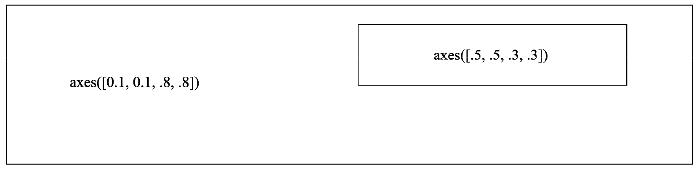
图2-13 坐标轴
一个优美而恰当的坐标刻度对理解数据异常重要，Matplotlib内置提供了以下几个坐标刻度。
·NullLocater：不显示坐标刻度标签，只显示坐标刻度。
·MultipleLocator：以固定的步长显示多个坐标标签。
·FixedLocator：以列表形式显示固定的坐标标签。
·IndexLocator：以offset为启始位置，每隔base步长就画一个坐标标签。
·LinearLocator：把坐标轴的长度均分为numticks个数，显示坐标标签。
·LogLocator：以对数为步长显示刻度标签。
·MaxNLocator：从提供的刻度标签列表里，显示出最大不超过nbins个数的标签。
·AutoLocator：自动显示刻度标签。
除了内置标签外，我们也可以继承matplotlib.ticker.Locator类来实现自定义样式的刻度标签。
通过下面的代码把内置坐标刻度全部画出来，可以直观地观察到内置坐标刻度的样式。具体可参阅随书代码ch02.04.ipynb。
代码详情
1 | %matplotlib inlinefrom matplotlib import pyplot as pltimport numpy as np def tickline(): plt.xlim(0, 10), plt.ylim(-1, 1), plt.yticks([]) ax = plt.gca() ax.spines['right'].set_color('none') ax.spines['left'].set_color('none') ax.spines['top'].set_color('none') ax.xaxis.set_ticks_position('bottom') ax.spines['bottom'].set_position(('data',0)) ax.yaxis.set_ticks_position('none') ax.xaxis.set_minor_locator(plt.MultipleLocator(0.1)) # 设置刻度标签的文本字体大小 for label in ax.get_xticklabels() + ax.get_yticklabels(): label.set_fontsize(16) ax.plot(np.arange(11), np.zeros(11)) return ax locators = [ 'plt.NullLocator()', 'plt.MultipleLocator(base=1.0)', 'plt.FixedLocator(locs=[0, 2, 8, 9, 10])', 'plt.IndexLocator(base=3, offset=1)', 'plt.LinearLocator(numticks=5)', 'plt.LogLocator(base=2, subs=[1.0])', 'plt.MaxNLocator(nbins=3, steps=[1, 3, 5, 7, 9, 10])', 'plt.AutoLocator()', ] n_locators = len(locators) # 计算图形对象的大小size = 1024, 60 * n_locatorsdpi = 72.0figsize = size[0] / float(dpi), size[1] / float(dpi)fig = plt.figure(figsize=figsize, dpi=dpi)fig.patch.set_alpha(0) for i, locator in enumerate(locators): plt.subplot(n_locators, 1, i + 1) ax = tickline() ax.xaxis.set_major_locator(eval(locator)) # 使用 eval 表达式：eval is evil plt.text(5, 0.3, locator[3:], ha='center', size=16) plt.subplots_adjust(bottom=.01, top=.99, left=.01, right=.99)plt.show() |
运用效果如图2-14所示。
图2-14 内置坐标刻度
2.5.3 画图操作
本节通过一系列的例子，来演示Matplotlib的画图操作。首先给出最终的图形，接着解释思路及用到的关键函数，读者可以先试着思考如何实现，对于用到的关键接口，可以通读一下Matplotlib相关接口的文档。所有的示例代码均包含在随书代码ch02.05.ipynb中，读者可以试着改变一些参数，以便学习这些参数的用法。
在图2-15中左图是使用plt.scatter（）函数画出来的，需要特别关注命名参数c的使用。方法是生成一定数量的随机点，计算随机点的反正切np.arctan2（Y，X），把这个值作为随机点的颜色。
代码详情
1 | n = 1024X = np.random.normal(0, 1, n)Y = np.random.normal(0, 1, n)T = np.arctan2(Y, X) plt.subplot(1, 2, 1)plt.scatter(X, Y, s=75, c=T, alpha=.5) plt.xlim(-1.5, 1.5)plt.xticks(())plt.ylim(-1.5, 1.5)plt.yticks(()) |
图2-15 画点与填充
对于图2-15中的右图，是使用plt.fill_between（）函数来填充的，需要特别关注命名参数where的使用。先画出两条正弦曲线，在x=0这条直线和正弦曲线之间填充指定的颜色。
代码详情
1 | n = 256X = np.linspace(-np.pi, np.pi, n, endpoint=True)Y = np.sin(2 * X) plt.subplot(1, 2, 2) plt.plot(X, Y + 1, color='blue', alpha=1.00)plt.fill_between(X, 1, Y + 1, color='blue', alpha=.25) plt.plot(X, Y - 1, color='blue', alpha=1.00)plt.fill_between(X, -1, Y - 1, (Y - 1) > -1, color='blue', alpha=.25)plt.fill_between(X, -1, Y - 1, (Y - 1) < -1, color='red', alpha=.25) plt.xlim(-np.pi, np.pi)plt.xticks(())plt.ylim(-2.5, 2.5)plt.yticks(()) |
如图2-16左图，使用plt.bar（）函数来画出柱状图，留意命名参数facecolor和edgecolor的使用。生成24个随机值，调用两次plt.bar（）函数分别画在上下两侧。再调用plt.text（）函数把数值画在对应的柱状图上。
代码详情
1 | n = 12X = np.arange(n)Y1 = (1 - X / float(n)) * np.random.uniform(0.5, 1.0, n)Y2 = (1 - X / float(n)) * np.random.uniform(0.5, 1.0, n) plt.subplot(1, 2, 1)plt.bar(X, +Y1, facecolor='#9999ff', edgecolor='white')plt.bar(X, -Y2, facecolor='#ff9999', edgecolor='white') for x, y in zip(X, Y1): plt.text(x + 0.4, y + 0.05, '%.2f' % y, ha='center', va= 'bottom') for x, y in zip(X, Y2): plt.text(x + 0.4, -y - 0.05, '%.2f' % y, ha='center', va= 'top') plt.xlim(-.5, n)plt.xticks(())plt.ylim(-1.25, 1.25)plt.yticks(()) |
图2-16 柱状图的等高线
如图2-16右图所示，使用plt.contourf（）函数填充等高线，其中命名参数cmap表示颜色映射风格。数接着用plt.contour（）函数画出等高线。需要留意np.meshgrid（）函数的用法。最后使用plt.clable（）函数画出等高线上的数字。
代码详情
1 | def f(x,y): return (1 - x / 2 + x**5 + y**3) * np.exp(-x**2 -y**2) n = 256x = np.linspace(-3, 3, n)y = np.linspace(-3, 3, n)X,Y = np.meshgrid(x, y) plt.subplot(1, 2, 2) plt.contourf(X, Y, f(X, Y), 8, alpha=.75, cmap=plt.cm.hot)C = plt.contour(X, Y, f(X, Y), 8, colors='black', linewidth=.5)plt.clabel(C, inline=1, fontsize=10) plt.xticks(())plt.yticks(()) |
如图2-17左图所示，使用plt.imshow（）函数把数组当成图片画出来，命名参数cmap用来决定数组到颜色的映射网格。最后使用plt.colorbar（）函数画出颜色条。
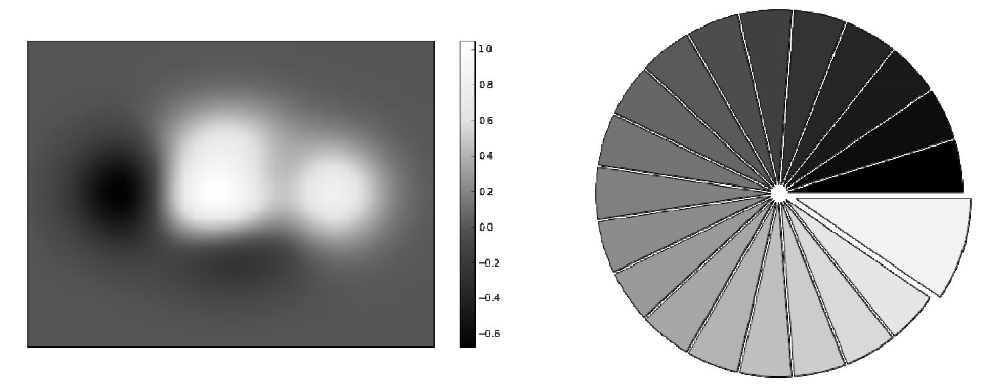
图2-17 热成像图及饼图
代码详情
1 | def f(x, y): return (1 - x / 2 + x ** 5 + y ** 3) * np.exp(-x ** 2 - y ** 2) plt.subplot(1, 2, 1)n = 10x = np.linspace(-3, 3, 4 * n)y = np.linspace(-3, 3, 3 * n)X, Y = np.meshgrid(x, y)plt.imshow(f(X, Y), cmap='hot', origin='low')plt.colorbar(shrink=.83) plt.xticks(())plt.yticks(()) |
如图2-17右图所示，使用plt.pie（）函数画出饼图，总共有20个饼图，其中19个是等角度的扇形，最后一个突出的扇形是其他扇形角度的两倍，使用命名参数explode来实现这个效果。各个扇形的填充颜色逐渐变深，使用命名参数colors来实现这个效果。
代码详情
1 | plt.subplot(1, 2, 2)n = 20Z = np.ones(n)Z[-1] *= 2 plt.pie(Z, explode=Z*.05, colors = ['%f' % (i/float(n)) for i in range(n)])plt.axis('equal')plt.xticks(())plt.yticks() |
如图2-18左图所示，使用坐标轴的set_major_locator（）和set_minor_locator（）方法把坐标刻度设置成MultipleLocator样式。然后再使用坐标轴的grid（）函数在坐标轴的刻度之间画上线段，这样就生成了我们需要的网格。
代码详情
1 | ax = plt.subplot(1, 2, 1) ax.set_xlim(0,4)ax.set_ylim(0,3)ax.xaxis.set_major_locator(plt.MultipleLocator(1.0))ax.xaxis.set_minor_locator(plt.MultipleLocator(0.1))ax.yaxis.set_major_locator(plt.MultipleLocator(1.0))ax.yaxis.set_minor_locator(plt.MultipleLocator(0.1))ax.grid(which='major', axis='x', linewidth=0.75, linestyle='-', color= '0.75')ax.grid(which='minor', axis='x', linewidth=0.25, linestyle='-', color= '0.75')ax.grid(which='major', axis='y', linewidth=0.75, linestyle='-', color= '0.75')ax.grid(which='minor', axis='y', linewidth=0.25, linestyle='-', color= '0.75')ax.set_xticklabels([])ax.set_yticklabels([]) |
图2-18 网格及极坐标图
如图2-18右图所示，使用plt.bar（）和bar.set_facecolor（）来填充不同的颜色。其中一个关键点是在创建子图或坐标轴时，需要指定polar=True才能显示出极坐标图。
代码详情
1 | ax = plt.subplot(1, 2, 2, polar=True) N = 20theta = np.arange(0.0, 2 * np.pi, 2 * np.pi / N)radii = 10 * np.random.rand(N)width = np.pi / 4 * np.random.rand(N)bars = plt.bar(theta, radii, width=width, bottom=0.0) for r,bar in zip(radii, bars): bar.set_facecolor(plt.cm.jet(r/10.)) bar.set_alpha(0.5) ax.set_xticklabels([])ax.set_yticklabels([]) |
Matplotlib有大量的细节，完整的教程都可以写一本书。本书用到的知识不会特别复杂，掌握这些基本的知识就足够用了。如果想深入学习Matplotlib，可以访问官方网站matplotlib.org。
2.6 scikit-learn简介
scikit-learn是一个开源的Python语言机器学习工具包，它涵盖了几乎所有主流机器学习算法的实现，并且提供了一致的调用接口。它基于Numpy和scipy等Python数值计算库，提供了高效的算法实现。总结起来，scikit-learn工具包有以下几个优点。
·文档齐全：官方文档齐全，更新及时。
·接口易用：针对所有的算法提供了一致的接口调用规则，不管是KNN、K-Mean还是PCA。
·算法全面：涵盖主流机器学习任务的算法，包括回归算法、分类算法、聚类分析、数据降维处理等。
当然，scikit-learn不支持分布式计算，不适合用来处理超大型数据。但这并不影响scikit-learn作为一个优秀的机器学习工具库这个事实。许多知名的公司，包括Evernote和Spotify都使用scikit-learn来开发他们的机器学习应用。
2.6.1 scikit-learn示例
回顾前面章节介绍的机器学习应用开发的典型步骤，我们使用scikit-learn来完成一个手写数字识别的例子。这是一个有监督的学习，数据是标记过的手写数字的图片。即通过采集足够多的手写数字样本数据，选择合适的模型，并使用采集到的数据进行模型训练，最后验证手写识别程序的正确性。
1.数据采集和标记
如果我们从头实现一个数字手写识别的程序，需要先采集数据，即让尽量多不同书写习惯的用户，写出从0～9的所有数字，然后把用户写出来的数据进行标记，即用户每写出一个数字，就标记他写出的是哪个数字。
为什么要采集尽量多不同书写习惯的用户写的数字呢？因为只有这样，采集到的数据才有代表性，才能保证最终训练出来的模型的准确性。极端的例子，我们采集的都是习惯写出瘦高形数字的人，那么针对习惯写出矮胖形数字的人写出来的数字，模型的识别成功率就会很低。
所幸我们不需要从头开始这项工作，scikit-learn自带了一些数据集，其中一个是手写数字识别图片的数据，使用以下代码来加载数据。
代码详情
1 | from sklearn import datasetsdigits = datasets.load_digits() |
可以在ipython notebook环境下把数据所表示的图片用Mathplotlib显示出来：
代码详情
1 | # 把数据所代表的图片显示出来images_and_labels = list(zip(digits.images, digits.target))plt.figure(figsize=(8, 6), dpi=200)for index, (image, label) in enumerate(images_and_labels[:8]): plt.subplot(2, 4, index + 1) plt.axis('off') plt.imshow(image, cmap=plt.cm.gray_r, interpolation='nearest') plt.title('Digit: %i' % label, fontsize=20) |
其结果如图2-19所示。
图2-19 数字图片
从图2-19中可以看出，图片是一个个手写的数字。
2.特征选择
针对一个手写的图片数据，应该怎么样来选择特征呢？一个直观的方法是，直接使用图片的每个像素点作为一个特征。比如一个图片是200200的分辨率，那么我们就有40000个特征，即特征向量的长度是40000。
实际上，scikit-learn使用Numpy的array对象来表示数据，所有的图片数据保存在digits.images里，每个元素都是一个88尺寸的灰阶图片。我们在进行机器学习时，需要把数据保存为样本个数x
特征个数 格式的array对象，针对手写数字识别这个案例，scikit-learn已经为我们转换好了，它就保存在digits.data数据里，可以通过digits.data.shape来查看它的数据格式为：
代码详情
1 | print("shape of raw image data: {0}".format(digits.images.shape))print("shape of data: {0}".format(digits.data.shape)) |
输出为：
代码详情
1 | shape of raw image data: (1797, 8, 8)shape of data: (1797, 64) |
可以看到，总共有1797个训练样本，其中原始的数据是88的图片，而用来训练的数据是把图片的64个象素点都转换为特征。下面将直接使用digits.data作为训练数据。
3.数据清洗
人们不可能在88这么小的分辨率的图片上写出数字，在采集数据的时候，是让用户在一个大图片上写出这些数字，如果图片是200200分辨率，那么一个训练样例就有40000个特征，计算量将是巨大的。为了减少计算量，也为了模型的稳定性，我们需要把200200的图片缩小为88的图片。这个过程就是数据清洗，即把采集到的、不适合用来做机器学习训练的数据进行预处理，从而转换为适合机器学习的数据。
4.模型选择
不同的机器学习算法模型针对特定的机器学习应用有不同的效率，模型的选择和验证留到后面章节详细介绍。此处，我们使用支持向量机来作为手写识别算法的模型。关于支持向量机，后面章节也会详细介绍。
5.模型训练
在开始训练我们的模型之前，需要先把数据集分成训练数据集 和测试数据集 。为什么要这样做呢？第1章的模型训练 和测试
里有详细的介绍。我们可以使用下面代码把数据集分出20%作为测试数据集。
代码详情
1 | # 把数据分成训练数据集和测试数据集from sklearn.cross_validation import train_test_splitXtrain, Xtest, Ytrain, Ytest = train_test_split(digits.data, digits.target, test_size=0.20, random_state=2); |
接着，使用训练数据集Xtrain和Ytrain来训练模型。
代码详情
1 | # 使用支持向量机来训练模型from sklearn import svmclf = svm.SVC(gamma=0.001, C=100.)clf.fit(Xtrain, Ytrain); |
训练完成后，clf对象就会包含我们训练出来的模型参数，可以使用这个模型对象来进行预测。
6.模型测试
我们来测试一下训练出来的模型的准确度。一个直观的方法是，我们用训练出来的模型clf预测测试数据集，然后把预测结果Ypred和真正的结果Ytest比较，看有多少个是正确的，这样就能评估出模型的准确度了。所幸，scikit-learn提供了现成的方法来完成这项工作：
代码详情
1 | clf.score(Xtest, Ytest) |
笔者计算机上的输出结果为：
代码详情
1 | 0.97777777777777775 |
显示出模型有97.8%的准确率。读者如果运行这段代码的话，在准确率上可能会稍有差异。
除此之外，还可以直接把测试数据集里的部分图片显示出来，并且在图片的左下角显示预测值，右下角显示真实值。运行效果如图2-20所示。
代码详情
1 | # 查看预测的情况fig, axes = plt.subplots(4, 4, figsize=(8, 8))fig.subplots_adjust(hspace=0.1, wspace=0.1) for i, ax in enumerate(axes.flat): ax.imshow(Xtest[i].reshape(8, 8), cmap=plt.cm.gray_r, interpolation='nearest') ax.text(0.05, 0.05, str(Ypred[i]), fontsize=32, transform=ax.transAxes, color='green' if Ypred[i] == Ytest[i] else 'red') ax.text(0.8, 0.05, str(Ytest[i]), fontsize=32, transform=ax.transAxes, color='black') ax.set_xticks([]) ax.set_yticks([]) |
图2-20 预测值与真实值
从图2-20中可以看出来，第二行第一个图片预测出错了，真实的数字是4，但预测成了8。
7.模型保存与加载
当我们对模型的准确度感到满意后，就可以把模型保存下来。这样下次需要预测时，可以直接加载模型来进行预测，而不是重新训练一遍模型。可以使用下面的代码来保存模型：
代码详情
1 | # 保存模型参数from sklearn.externals import joblibjoblib.dump(clf, 'digits_svm.pkl'); |
当我们需要这个模型来进行预测时，直接加载模型即可进行预测。
代码详情
1 | # 导入模型参数，直接进行预测clf = joblib.load('digits_svm.pkl')Ypred = clf.predict(Xtest);clf.score(Ytest, Ypred) |
笔者计算机上的输出结果是：
代码详情
1 | 0.97777777777777775 |
这个例子包含在随书代码ch02.06.ipynb上，读者可以下载下来运行并参考。
2.6.2 scikit-learn一般性原理和通用规则
scikit-learn包含大部分流行的有监督学习算法（分类和回归）和无监督学习算法（聚类和数据降维）的实现。
1.评估模型对象
scikit-learn里的所有算法都以一个评估模型对象来对外提供接口。上面例子里的svm.SVC（）函数返回的就是一个支持向量机评估模型对象。创建评估模型对象时，可以指定不同的参数，这个称为评估对象参数，评估对象参数直接影响评估模型训练时的效率以及准确性。
读者可以试着修改上面例子里的clf=svm.SVC（gamma=0.001，C=100.）语句的参数值，看对模型准确度有没有影响。我们暂时忽略这些评估对象参数的意思，留在讲解每个机器学习算法时再详细介绍。
需要特别说明的是，我们学习机器学习算法的原理，其中一项非常重要的任务就是了解不同的机器学习算法有哪些可调参数，这些参数代表什么意思，对机器学习算法的性能以及准确性有没有什么影响。因为在工程应用上，要从头实现一个机器学习算法的可能性很低，除非是数值计算科学家。更多的情况下，是分析采集到的数据，根据数据特征选择合适的算法，并且调整算法的参数，从而实现算法效率和准确度之间的平衡。
2.模型接口
scikit-learn所有的评估模型对象都有fit（）这个接口，这是用来训练模型的接口。针对有监督的机器学习（如上面的例子），使用fit（X，y）来进行训练，其中y是标记数据。针对无监督的机器学习算法，使用fit（X）来进行训练，因为无监督机器学习算法的数据集是没有标记的，不需要传入y。
针对所有的有监督机器学习算法，scikit-learn的模型对象提供了predict（）接口，经过训练的模型，可以用这个接口来进行预测。针对分类问题，有些模型还提供了predict_proba（）的接口，用来输出一个待预测的数据，属于各种类型的可能性，而predict（）接口直接返回了可能性最高的那个类别。
几乎所有的模型都提供了scroe（）接口来评价一个模型的好坏，得分越高越好。需要说明的是，不是所有的问题都只有准确度这个评价标准，比如针对异常检测系统，一些产品不良率可以控制到10%以下，这个时候一个最简单的模型是无条件地全部预测为合格，即无条件返回1，其准确率将达99.999%以上，但实际上这是一个不好的模型。评价这种模型，就需要使用查准率
和召回率 来衡量。相关概念我们后面会详细介绍。
针对无监督的机器学习算法，scikit-learn的模型对象也提供了predict（）接口，它是用来对数据进行聚类分析，即把新数据归入某个聚类里。除此之外，无监督学习算法还有transform（）接口，这个接口用来进行转换，比如使用PCA算法对数据进行降维处理时，把三维数据降为二维数据，此时调用transform（）算法即可把一个三维数据转换为对应的二维数据。
模型接口也是scikit-learn工具包的最大优势之一，即把不同的算法抽象出来，对外提供一致的接口调用。
3.模型检验
机器学习应用开发的一个非常重要的方面就是模型检验，即需要检测我们训练出来的模型，针对“没见过的”陌生数据其预测准确性如何。除了模型提供的score（）接口外，在sklearn.metrics包的下面有一系列用来检测模型性能的方法。
4.模型选择
模型选择是个非常重要的课题，根据要处理的问题性质，数据是否经过标记？数据规模多大？等等这些问题，可以对模型有个初步的选择。scikit-learn的官方网站上提供了一个模型速查表，只要回答几个简单的问题就可以选择一个相对合适的模型。感兴趣的读者可以搜索scikit-learn algorithm cheat sheet来查看这个图片，大概有个印象，等阅读完本书再回头看这张图片，感受一下自己对其理解的变化和收获。
2.7 复习题
1.根据本书材料，安装编程环境。
2.打开IPython环境，体验IPython与普通的Python解析器的区别。
3.下载随书代码，打开ch02.01.ipynb并运行这个示例代码，验证编程环境安装成功。
4.下载随书代码，打开ch02.02.ipynb并运行这个示例代码，熟悉Numpy基本操作。
5.下载随书代码，打开ch02.03.ipynb并运行这个示例代码，熟悉Pandas基本操作。
6.下载随书代码，打开ch02.04.ipynb并运行这个示例代码，熟悉matplotlib基本的画图操作。
7.下载随书代码，打开ch02.05.ipynb并运行这个示例代码，熟悉matplotlib高级画图操作。
8.下载随书代码，打开ch02.06.ipynb并运行这个示例代码，理解scikit-learn机器学习库的一般性原理和通用规则。
9.机器学习任务的一般步骤有哪些？
2.8 拓展学习资源
1.http://scipy-lectures.org ，这是一个按照CC 4.0协议发布的网站，是一个优秀的Python科学计算工具包的教程合集。
2.https://docs.scipy.org/doc/ ，numpy和scipy的官方文档。
3.https://en.wikipedia.org/wiki/Random_walk ，随机漫步算法。
4.https://en.wikipedia.org/wiki/Sieve_of_Eratosthenes ，埃拉托斯特尼筛法。
5.https://en.wikipedia.org/wiki/Monte_Carlo_method ，蒙特卡罗方法。
6.http://pandas.pydata.org ，Pandas官网。
7.http://matplotlib.org，matplotlib的官方网站，包含大量的绘图实例。
8.http://scikit-learn.org/stable/documentation.html ，scikit-learn官方文档。
第3章 机器学习理论基础
本章介绍了机器学习的理论基础，包括算法模型性能评估的指标和评估方法。本章是整本书最关键的理论基础知识，对理解本书其他章节内容有非常重要的作用。本章涵盖的主要内容如下：
·模型过拟合和欠拟合；
·模型的成本及成本函数的含义；
·评价一个模型好坏的标准；
·学习曲线，以及用学习曲线来对模型进行诊断；
·通用的模型优化方法；
·其他模型评价标准。
3.1 过拟合和欠拟合
过拟合 是指模型能很好地拟合训练样本，但对新数据的预测准确性很差。欠拟合 是指模型不能很好地拟合训练样本，且对新数据的预测准确性也不好。
我们来看一个简单的例子。首先，生成一个20个点的训练样本：
代码详情
1 | import numpy as npn_dots = 20x = np.linspace(0, 1, n_dots) # [0, 1] 之间创建 20 个点y = np.sqrt(x) + 0.2*np.random.rand(n_dots) - 0.1; |
训练样本是 其中r是[-0.1，0.1]之间的一个随机数。
然后分别用一阶多项式、三阶多项式和十阶多项式3个模型来拟合这个数据集，得到的结果如图3-1所示。
说明：图中的点是我们生成的20个训练样本；虚线中实际的模型 实线是用训练样本拟合出来的模型。
在图3-1中，左边是欠拟合（underfitting），也称为高偏差 （high bias），因为我们试图用一条直线来拟合样本数据。右边是过拟合（overfitting），也称为高方差 （high variance），用了十阶多项式来拟合数据，虽然模型对现有的数据集拟合得很好，但对新数据预测误差却很大。只有中间的模型较好地拟合了数据集，可以看到虚线和实线基本重合。
图3-1 过拟合与欠拟合
通过图3-1，读者对过拟合（高方差）和欠拟合（高偏差）有了直观的了解。本节的示例程序请参阅随书代码ch03.01.ipynb。
3.2 成本函数
成本是衡量模型与训练样本符合程度的指标。简单地理解，成本 是针对所有的训练样本，模型拟合出来的值与训练样本的真实值的误差平均值。而成本函数就是成本与模型参数 的函数关系。模型训练的过程，就是找出合适的模型参数，使得成本函数 的值最小。成本函数记为J（θ），其中θ表示模型参数。
针对上一节中的例子，我们用一阶多项式来拟合数据，则得到的模型是y=θ0 +θ1 x。此时，[θ0 ，θ1 ]构成的向量就是模型参数。训练这个模型的目标，就是找出合适的模型参数[θ0 ，θ1 ]，使得所有的点到这条直线上的距离最短。
图3-2 模型参数
如图3-2所示，不同的模型参数θ对应不同的直线，明显可以看出来L2比L1更好地拟合数据集。根据成本函数的定义，我们可以容易地得出模型的成本函数公式：
其中，m是训练样本个数，在我们的例子里，是20个点，而h（x（i） ）就是模型对每个样本的预测值，y（i） 是每个样本的真实值。这个公式实际上就是线性回归
算法的成本函数的简化表达。
一个数据集可能有多个模型可以用来拟合它，而一个模型有无穷多个模型参数，针对特定的数据集和特定的模型，只有一个模型参数能最好地拟合这个数据集，这就是模型和模型参数的关系。回到本章开头的例子里的3个图片，针对生成的20个训练样本，我们用3个模型来拟合这个数据集，分别是一阶多项式、三阶多项式和十阶多项式。图3-1左图使用一阶多项式来拟合数据，这就是模型，而针对一阶多项式，有无穷多个模型参数，而模型训练的目的，就是找出一组最优的模型参数，使得这个模型参数所代表的一阶多项式对应的成本最低。使用三阶多项式和十阶多项式来拟合数据集时，原理是相同的。
总结起来，针对一个数据集，我们可以选择很多个模型来拟合数据，一旦选定了某个模型，就需要从这个模型的无穷多个参数里找出一个最优的参数，使得成本函数的值最小。
问题来了，多个模型之间怎么评价好坏呢？针对我们的例子，一阶多项式、三阶多项式和十阶多项式，到底哪个模型更好呢？针对训练样本成本最小的模型就是最好的吗？在我们的例子里，十阶多项式针对训练样本的成本最小，因为它的预测曲线几乎穿过了所有的点，训练样本到曲线的距离的平均值最小。那是不是意味着十阶多项式是最好的模型吗？答案是否定的，因为它过拟合了。
过拟合到底有什么不好？我们要用什么标准来评价一个模型的好坏？下面我们来解答这些问题。
3.3 模型准确性
测试数据集 的成本，即Jtest （θ）是评估模型准确性的最直观的指标，Jtest
（θ）值越小说明模型预测出来的值与实际值差异越小，对新数据的预测准确性就越好。需要特别注意，用来测试模型准确性的测试数据集，必须是模型“没见过”的数据。
这就是为什么，我们在第1章介绍过的，要把数据集分成训练数据集 和测试数据集。一般原则是按照8∶2或7∶3来划分，然后用训练数据集来训练模型，训练出模型参数后再使用测试数据集来测试模型的准确性，根据模型的准确性来评价模型的性能。
可以思考一个问题：为什么要确保模型没有见过测试数据集？
那么，我们要如何计算测试数据集的误差呢？简单地说，就是用测试数据集和训练出来的模型参数代入相应的成本函数里，计算测试数据集的成本。
针对上文我们介绍的线性回归算法，可以使用下面的公式计算测试数据集的误差，其中m是测试数据集的个数：
3.3.1 模型性能的不同表述方式
在scikit-learn里，不使用成本函数来表达模型的性能，而使用分数来表达，这个分数总是在[0，1]之间，数值越大说明模型的准确性越好。当模型训练完成后，调用模型的score（X_test，y_test）即可算出模型的分数值，其中X_test和y_test是测试数据集样本。
模型分数（准确性）与成本成反比。即分数越大，准确性越高，误差越小，成本越低；反之，分数越小，准确性越低，误差越大，成本越高。
3.3.2 交叉验证数据集
另外一个更科学的方法是把数据集分成3份，分别是训练数据集 、交叉验证数据集 和测试数据集 ，推荐比例是6∶2∶2。
为什么需要交叉验证数据集
呢？以多项式模型选择为例。假设我们用一阶多项式、二阶多项式、三阶多项式……十阶多项式来拟合数据，多项式的阶数记为d。我们把数据集分成训练数据集和测试数据集。先用训练数据集训练出机器学习算法的参数θ（1），θ（2） ，θ（3 ） ，…，θ（10），这些参数分别代表从一阶到十阶多项式的模型参数。这10个模型里，哪个模型更好呢？这个时候我们会用测试数据集算出针对测试数据集的成本Jtest
（θ），看哪个模型的测试数据集成本最低，我们就选择这个多项式来拟合数据，但实际上，这是有问题的。测试数据集的最主要功能是测试模型的准确性，需要确保模型“没见过”这些数据。现在我们用测试数据集来选择多项式的阶数d，相当于把测试数据集提前让模型“见过”了。这样选择出来的多项式阶数d本身就是对训练数据集最友好的一个，这样模型的准确性测试就失去了意义。
为了解决这个问题，我们把数据分成3部分，随机选择60%的数据作为训练数据集，其成本记为J（θ），随机选择20%的数据作为交叉验证数据集（Cross Validation），其成本记为Jcv （θ），剩下的20%作为测试数据集，其成本记为Jtest （θ）。
在模型选择时，我们使用训练数据集来训练算法参数，用交叉验证数据集来验证参数。选择交叉验证数据集的成本Jcv
（θ）最小的多项式来作为数据拟合模型，最后再用测试数据集来测试选择出来的模型针对测试数据集的准确性。
因为在模型选择过程中，我们使用了交叉验证数据集，所以筛选模型多项式阶数d的过程中，实际上并没有使用测试数据集。这样保证了使用测试数据集来计算成本衡量模型的准确性，我们选择出来的模型是没有“见过”测试数据，即测试数据集没有参与模型选择的过程。
当然，在实践过程中，很多人直接把数据集分成训练数据集和测试数据集，而没有分出交叉验证数据集。这是因为很多时候并不需要横向去对比不同的模型。在工程上，大多数时候我们最主要的工作不是选择模型，而是获取更多数据、分析数据、挖掘数据。
3.4 学习曲线
我们可以把Jtrain （θ）和Jcv
（θ）作为纵坐标，画出与训练数据集m的大小关系，这就是学习曲线。通过学习曲线，可以直观地观察到模型的准确性与训练数据集大小的关系。
如果数据集的大小为m，则通过下面的流程即可画出学习曲线：
·把数据集分成训练数据集和交叉验证数据集。
·取训练数据集的20%作为训练样本，训练出模型参数。
·使用交叉验证数据集来计算训练出来的模型的准确性。
·以训练数据集的准确性，交叉验证的准确性作为纵坐标，训练数据集个数作为横坐标，在坐标轴上画出上述步骤计算出来的模型准确性。
·训练数据集增加10%，跳到步骤3继续执行，直到训练数据集大小为100%为止。
学习曲线要表达的内容是，当训练数据集增加时，模型对训练数据集拟合的准确性以及对交叉验证数据集预测的准确性的变化规律。
3.4.1 实例：画出学习曲线
通过一个例子来看看在scikit-learn里如何画出模型的学习曲线，从而判断模型的准确性及优化方向。
我们还是使用本章开头的例子，生成一个在附近波动的点来作为训练样本，不过这次要多生成一些点，因为要考虑当训练样本数量增加的时候，模型的准确性是怎么变化的。
代码详情
1 | import numpy as npn_dots = 200 X = np.linspace(0, 1, n_dots)y = np.sqrt(X) + 0.2*np.random.rand(n_dots) - 0.1; # 因为 sklearn 的接口里，需要用到 n_sample x n_feature 的矩阵# 所以需要转化为 200 x 1 的矩阵X = X.reshape(-1, 1)y = y.reshape(-1, 1) |
（1）需要构造一个多项式模型。在scikit-learn里，需要用Pipeline来构造多项式模型，Pipeline的意思是流水线，即这个流水线里可以包含多个数据处理模型，前一个模型处理完，转到下一个模型处理。
代码详情
1 | from sklearn.pipeline import Pipelinefrom sklearn.preprocessing import PolynomialFeaturesfrom sklearn.linear_model import LinearRegression def polynomial_model(degree=1): polynomial_features = PolynomialFeatures(degree=degree, include_bias=False) linear_regression = LinearRegression() # 这是一个流水线，先增加多项式阶数，然后再用线性回归算法来拟合数据 pipeline = Pipeline([("polynomial_features", polynomial_features), ("linear_regression", linear_regression)]) return pipeline |
polynomial_model（）函数生成一个多项式模型，其中参数degree表示多项式的阶数，比如polynomial_model（3）将生成一个三阶多项式的模型。
在scikit-learn里面，我们不用自己去实现学习曲线算法，直接使用sklearn.model_selection.learning_curve（）函数来画出学习曲线，它会自动把训练样本的数量按照预定的规则逐渐增加，然后画出不同训练样本数量时的模型准确性。其中train_sizes参数就是指定训练样本数量的变化规则，比如train_sizes=np.linspace（.1，1.0，5）表示把训练样本数量从0.1～1分成五等分，生成[0.1，0.325，0.55，0.775，1]的序列，从序列中取出训练样本数量百分比，逐个计算在当前训练样本数量情况下训练出来的模型准确性。
代码详情
1 | from sklearn.model_selection import ShuffleSplit def plot_learning_curve(estimator, title, X, y, ylim=None, cv=None, n_jobs=1, train_sizes=np.linspace(.1, 1.0, 5)): plt.title(title) if ylim is not None: plt.ylim(*ylim) plt.xlabel("Training examples") plt.ylabel("Score") train_sizes, train_scores, test_scores = learning_curve( estimator, X, y, cv=cv, n_jobs=n_jobs, train_sizes=train_sizes) train_scores_mean = np.mean(train_scores, axis=1) train_scores_std = np.std(train_scores, axis=1) test_scores_mean = np.mean(test_scores, axis=1) test_scores_std = np.std(test_scores, axis=1) plt.grid() plt.fill_between(train_sizes, train_scores_mean - train_scores_std, train_scores_mean + train_scores_std, alpha=0.1, color="r") plt.fill_between(train_sizes, test_scores_mean - test_scores_std, test_scores_mean + test_scores_std, alpha=0.1, color= "g") plt.plot(train_sizes, train_scores_mean, 'o-', color="r", label="Training score") plt.plot(train_sizes, test_scores_mean, 'o-', color="g", label="Cross-validation score") plt.legend(loc="best") return plt |
这个函数实现的功能就是画出模型的学习曲线。其中有个细节需要注意，当计算模型的准确性时，是随机从数据集中分配出训练样本和交叉验证样本，这样会导致数据分布不均匀。即同样训练样本数量的模型，由于随机分配，导致每次计算出来的准确性都不一样。为了解决这个问题，我们在计算模型的准确性时，多次计算，并求准确性的平均值和方差。上述代码中plt.fill_between（）函数会把模型准确性的平均值的上下方差的空间里用颜色填充。然后用plt.plot（）函数画出模型准确性的平均值。上述函数画出了训练样本的准确性，也画出了交叉验证样本的准确性。
（2）使用polynomial_model（）函数构造出3个模型，分别是一阶多项式、三阶多项式、十阶多项式，分别画出这3个模型的学习曲线。
代码详情
1 | # 为了让学习曲线更平滑，计算 10 次交叉验证数据集的分数cv = ShuffleSplit(n_splits=10, test_size=0.2, random_state=0)titles = ['Learning Curves (Under Fitting)', 'Learning Curves', 'Learning Curves (Over Fitting)']degrees = [1, 3, 10] plt.figure(figsize=(18, 4), dpi=200)for i in range(len(degrees)): plt.subplot(1, 3, i + 1) plot_learning_curve(polynomial_model(degrees[i]), titles[i], X, y, ylim=(0.75, 1.01), cv=cv) plt.show() |
最终得出的学习曲线如图3-3所示。
图3-3 学习曲线
左图：一阶多项式，欠拟合；中图：三阶多项式，较好地拟合了数据集；右图：十阶多项式，过拟合。虚线：针对训练数据集计算出来的分数，即针对训练数据集拟合的准确性，实线：针对交叉验证数据集计算出来的分数，即针对交叉验证数据集预测的准确性。
从左图我们可以观察到，当模型欠拟合（High Bias，Under Fitting）时，随着训练数据集的增加，交叉验证数据集的准确性（实线）逐渐增大，逐渐和训练数据集的准确性（虚线）靠近，但其总体水平比较低，收敛在0.88左右。其训练数据集的准确性也比较低，收敛在0.90左右。这就是过拟合的表现。从这个关系可以看出来，当发生高偏差时，增加训练样本数量不会对算法准确性有较大的改善。
从右图我们可以观察到，当模型过拟合（High Variance，Over Fitting）时，随着训练数据集的增加，交叉验证数据集的准确性（实线）也在增加，逐渐和训练数据集的准确性（虚线）靠近，但两者之间的间隙比较大。训练数据集的准确性很高，收敛在0.95左右，是三者中最高的，但其交叉验证数据集的准确性值却较低，最终收敛在0.91左右。
中图，我们选择的三阶多项式较好地拟合了数据，最终训练数据集的准确性（虚线）和交叉验证数据集的准确性（实线）靠得很近，最终交叉验证数据集收敛在0.93附近，训练数据集的准确性收敛在0.94附近。3个模型对比，这个模型的准确性最好。
当需要改进学习算法时，可以画出学习曲线，以便判断算法是处在高偏差还是高方差问题。该示例在随书代码ch03.02.ipynb里，建议读者自己运行一下，并修改一些参数，观察学习曲线的变化规则。学习曲线是诊断模型算法准确性的一个非常重要的工具。
3.4.2 过拟合和欠拟合的特征
到此，我们可以总结过拟合和欠拟合的特点如下。
·过拟合：模型对训练数据集的准确性比较高，其成本Jtrain （θ）比较低，对交叉验证数据集的准确性比较低，其成本Jcv （θ）比较高。
·欠拟合：模型对训练数据集的准确性比较低，其成本Jtrain （θ）比较高，对交叉验证数据集的准确性也比较低，其成本Jcv （θ）也比较高。
一个好的机器学习算法应该是对训练数据集准确性高、成本低，即较准确地拟合数据，同时对交叉验证数据集准确性高、成本低、误差小，即对未知数据有良好的预测性。
3.5 算法模型性能优化
当我们辛苦开发出来的机器学习算法不能很好地预测新数据时，该怎么办呢？一般情况下，需要先判断这个算法模型是欠拟合还是过拟合？
如果是过拟合，可以采取的措施如下。
·获取更多的训练数据： 从学习曲线的规律来看，更多的数据有助于改善过拟合问题。
·减少输入的特征数量：
比如，针对书写识别系统，原来使用200×200的图片，总共40000个特征。优化后，我们可以把图片等比例缩小为10×10的图片，总共100个特征。这样可以大大减少模型的计算量，同时也减少模型的复杂度，改善过拟合问题。
如果是欠拟合，说明模型太简单了，需要增加模型的复杂度。
·增加有价值的特征：
重新解读并理解训练数据。比如针对一个房产价格预测的机器学习任务，原来只根据房子面积来预测价格，结果模型出现了欠拟合。优化后，我们增加其他的特征，比如房子的朝向、户型、年代、房子旁边的学校的质量（我们熟悉的学区房）、房子的开发商、房子周边商业街个数、房子周边公园个数等。
·增加多项式特征： 有的时候，从己知数据里挖掘出更多的特征不是件容易的事情，这个时候，可以用纯数学的方法，增加多项式特征。比如，原来的输入特征只有x1，x2 ，优化后可以增加特征，变成这样也可以增加模型复杂度，从而改善欠拟合的问题。回顾上一节的例子，当用一阶多项式拟合数据集时，使用的只有一个特征，而最终我们用三阶多项式来拟合数据时，用的其实就是增加多项式特征这个方法。
3.6 查准率和召回率
有时候，模型准确性并不能评价一个算法的好坏。比如针对癌症筛查算法，根据统计，普通肿瘤中癌症的概率是0.5%。有个机器学习算法，测试得出的准确率是99.2%，错误率是0.8%。这个算法到底是好还是坏呢？如果努力改进算法，最终得出的准确率是99.5%，错误率是0.5%，模型到底是变好了还是变坏了呢？
坦白讲，如果单纯从模型准确性的指标上很难判断到底是变好了还是变坏了。因为这个事情的先验概率太低了，假如写了一个超级简单的预测函数，总是返回0，即总是认为不会得癌症，那么我们这个超级简单的预测函数的准确率是99.5%，错误率是0.5%。因为总体而言，只有那0.5%真正得癌症的却被我们误判了。
那么怎么样来评价这类问题的模型好坏呢？我们引入了另外两个概念，查准率 （Precision）和召回率 （Recall）。还是以癌症筛查为例：
查准率和召回率的定义如下：
如何理解True/False和Positive/Negative？True/False表示预测结果是否正确，而Positive/Negative表示预测结果是1（恶性肿瘤）或0（良性肿瘤）。所以，TruePositive表示正确地预测出恶性肿瘤的数量；FalsePositive表示错误地预测出恶性肿瘤的数量；FalseNegative表示错误地预测出良性肿瘤的数量。
在处理先验概率低的问题时，我们总是把概率较低的事件定义为1，并且把y=1作为Positive的预测结果。针对上文介绍的，对总是返回0的超级简单的肿瘤筛查预测函数，我们使用查准率和召回率来检验模型性能时，会发现查准率和召回率都是0，这是因为它永远无法正确地预测出恶性肿瘤，即TruePositive永远为0。
在scikit-learn里，评估模型性能的算法都在sklean.metrics包里。其中，计算查准率和召回率的API分别为sklean.metrics.precision_score（）和sklean.metrics.recall_score（）。
3.7 F1 Score
由于现在有两个指标——查准率和召回率，如果有一个算法的查准率是0.5，召回率是0.4；另外一个算法查准率是0.02，召回率是1.0；那么两个算法到底哪个好呢？
为了解决这个问题，我们引入了F1 Score的概念：
其中P是查准率，R是召回率。这样就可以用一个数值直接判断哪个算法性能更好。典型地，如果查准率或召回率有一个为0，那么F1
Score将会为0。而理想的情况下，查准率和召回率都为1，则算出来的F1 Score为1。
在scikit-learn里，计算（F1 Score）的函数是sklean.metrics.f1_score（）。
3.8 复习题
1.什么是过拟合？什么是欠拟合？怎么样去诊断算法是否过拟合或欠拟合？
2.模型的拟合成本是什么意思？它和模型的准确性有什么关系？
3.我们有哪些指标来评价一个模型的好坏？
4.为什么需要交叉验证数据集？
5.什么是学习曲线？为什么要画学习曲线？
6.打开ch03.02.ipynb，运行这个示例代码。
7.参考ch03.02.ipynb，换成随机森林回归算法sklearn.ensemble.RandomForestRegressor来拟合曲线，并画出学习曲线。提示：读者可以阅读scikit-learn文档以获得帮助。不过不需要深入了解算法原理，由于scikit-learn提供了一致的接口，对大部分有编程经验的读者，这个任务不会是太大的障碍。
8.为什么需要查准率和召回率来评估模型的好坏？查准率和召回率适合哪些问题领域？
第4章 k-近邻算法
本章介绍了k-近邻算法。它是一个有监督的机器学习算法。k-近邻算法也称为knn算法，可以解决分类问题，也可以解决回归问题。本章涵盖的内容如下：
·k-近邻算法的原理、优缺点及参数k取值对算法性能的影响；
·使用k-近邻算法处理分类问题的示例；
·使用k-近邻算法解决回归问题的示例；
·使用k-近邻算法进行糖尿病检测的实例；
·基于统计学的特征选择；
·扩展阅读之k-近邻算法性能优化；
·扩展阅读之卡方检测及F值检测。
4.1 算法原理
k-近邻算法的核心思想是未标记样本的类别，由距离其最近的k个邻居投票来决定。
假设，我们有一个已经标记的数据集，即已经知道了数据集中每个样本所属的类别。此时，有一个未标记的数据样本，我们的任务是预测出这个数据样本所属的类别。k-近邻算法的原理是，计算待标记的数据样本和数据集中每个样本的距离，取距离最近的k个样本。待标记的数据样本所属的类别，就由这k个距离最近的样本投票产生。
假设X_test为待标记的数据样本，X_train为已标记的数据集，算法原理的伪代码如下：
·遍历X_train中的所有样本，计算每个样本与X_test的距离，并把距离保存在Distance数组中。
·对Distance数组进行排序，取距离最近的k个点，记为X_knn。
·在X_knn中统计每个类别的个数，即class0在X_knn中有几个样本，class1在X_knn中有几个样本等。
·待标记样本的类别，就是在X_knn中样本个数最多的那个类别。
4.1.1 算法优缺点
优点：准确性高，对异常值和噪声有较高的容忍度。缺点：计算量较大，对内存的需求也较大。从算法原理可以看出来，每次对一个未标记样本进行分类时，都需要全部计算一遍距离。
4.1.2 算法参数
其算法参数是k，参数选择需要根据数据来决定。k值越大，模型的偏差越大，对噪声数据越不敏感，当k值很大时，可能造成模型欠拟合；k值越小，模型的方差就会越大，当k值太小，就会造成模型过拟合。
4.1.3 算法的变种
k-近邻算法有一些变种，其中之一就是可以增加邻居的权重。默认情况下，在计算距离时，都是使用相同权重。实际上，我们可以针对不同的邻居指定不同的距离权重，如距离越近权重越高。这个可以通过指定算法的weights参数来实现。
另外一个变种是，使用一定半径内的点取代距离最近的k个点。在scikit-learn里，RadiusNeighborsClassifier类实现了这个算法的变种。当数据采样不均匀时，该算法变种可以取得更好的性能。
4.2 示例：使用k-近邻算法进行分类
在scikit-learn里，使用k-近邻算法进行分类处理的是sklearn.neighbors.KNeighbors Classifier类。
（1）生成已标记的数据集：
代码详情
1 | from sklearn.datasets.samples_generator import make_blobs# 生成数据centers = [[-2, 2], [2, 2], [0, 4]]X, y = make_blobs(n_samples=60, centers=centers, random_state=0, cluster_std=0.60) |
我们使用sklearn.datasets.samples_generator包下的make_blobs（）函数来生成数据集，上面代码中，生成60个训练样本，这60个样本分布在以centers参数指定中心点周围。cluster_std是标准差，用来指明生成的点分布的松散程度。生成的训练数据集放在变量X里面，数据集的类别标记放在y里面。
读者可以把X和y的值打印出来查看，一个更直观的方法是使用matplotlib库，它可以很容易地把生成的点画出来：
代码详情
1 | # 画出数据plt.figure(figsize=(16, 10), dpi=144)c = np.array(centers)plt.scatter(X[:, 0], X[:, 1], c=y, s=100, cmap='cool'); # 画出样本plt.scatter(c[:, 0], c[:, 1], s=100, marker='^', c='orange'); # 画出中心点 |
这些点的分布情况在坐标轴上一目了然，其中三角形的点即各个类别的中心节点，如图4-1所示。
图4-1 类别数据
（2）使用KNeighborsClassifier来对算法进行训练，我们选择的参数是k=5：
代码详情
1 | from sklearn.neighbors import KNeighborsClassifier# 模型训练k = 5clf = KNeighborsClassifier(n_neighbors=k)clf.fit(X, y); |
（3）对一个新的样本进行预测：
代码详情
1 | # 进行预测X_sample = [0, 2]y_sample = clf.predict(X_sample);neighbors = clf.kneighbors(X_sample, return_distance=False); |
我们要预测的样本是[0，2]，使用kneighbors（）方法，把这个样本周围距离最近的5个点取出来。取出来的点是训练样本X里的索引，从0开始计算。
（4）把待预测的样本以及和其最近的5个点标记出来：
代码详情
1 | # 画出示意图plt.figure(figsize=(16, 10), dpi=144)plt.scatter(X[:, 0], X[:, 1], c=y, s=100, cmap='cool'); # 样本plt.scatter(c[:, 0], c[:, 1], s=100, marker='^', c='k'); # 中心点plt.scatter(X_sample[0], X_sample[1], marker="x", c=y_sample, s=100, cmap='cool') # 待预测的点 for i in neighbors[0]: plt.plot([X[i][0], X_sample[0]], [X[i][1], X_sample[1]], 'k--', linewidth=0.6); # 预测点与距离最近的 5 个样本的连线 |
从图4-2中，我们可以清楚地看到k-近邻算法的原理。
图4-2 投票机制
本节的示例代码可参阅随书代码ch04.01.ipynb。
4.3 示例：使用k-近邻算法进行回归拟合
分类问题的预测值是离散的，我们也可以用k-近邻算法在连续区间内对数值进行预测，进行回归拟合。在scikit-learn里，使用k-近邻算法进行回归拟合的算法是sklearn.neighbors.KNeighborsRegressor类。
（1）生成数据集，它在余弦曲线的基础上加入了噪声：
代码详情
1 | import numpy as npn_dots = 40X = 5 * np.random.rand(n_dots, 1)y = np.cos(X).ravel() # 添加一些噪声y += 0.2 * np.random.rand(n_dots) - 0.1 |
（2）使用KNeighborsRegressor来训练模型：
代码详情
1 | # 训练模型from sklearn.neighbors import KNeighborsRegressork = 5knn = KNeighborsRegressor(k)knn.fit(X, y); |
我们要怎么样来进行回归拟合呢？
一个方法是，在X轴上的指定区间内生成足够多的点，针对这些足够密集的点，使用训练出来的模型进行预测，得到预测值y_pred，然后在坐标轴上，把所有的预测点连接起来，这样就画出了拟合曲线。
我们针对足够密集的点进行预测：
代码详情
1 | # 生成足够密集的点并进行预测T = np.linspace(0, 5, 500)[:, np.newaxis]y_pred = knn.predict(T)knn.score(X, y) |
可以用score（）方法计算拟合曲线针对训练样本的拟合准确性，在笔者的环境下输出结果为：
代码详情
1 | 0.99000494130215722 # 在读者的环境运行时，值会略有差异 |
（3）把这些预测点连起来，构成拟合曲线：
代码详情
1 | # 画出拟合曲线plt.figure(figsize=(16, 10), dpi=144)plt.scatter(X, y, c='g', label='data', s=100) # 画出训练样本plt.plot(T, y_pred, c='k', label='prediction', lw=4) # 画出拟合曲线plt.axis('tight')plt.title("KNeighborsRegressor (k = %i)" % k)plt.show() |
最终生成的拟合曲线以及训练样本数据如图4-3所示。
图4-3 拟合曲线
本节的示例代码可参阅ch04.02.ipynb。
4.4 实例：糖尿病预测
本节使用k-近邻算法及其变种，对Pima印第安人的糖尿病进行预测。数据来源kaggle.com，网址为https://www.kaggle.com/uciml/pima-indians-diabetes-database ，读者可自行前往下载，也可以使用随书代码里，笔者下载好的数据code/dataset/pima-indians-diabetes。
4.4.1 加载数据
使用pandas加载数据：
代码详情
1 | # 加载数据data = pd.read_csv('datasets/pima-indians-diabetes/diabetes.csv')print('dataset shape {}'.format(data.shape))data.head() |
笔者计算机上的输出如下：
代码详情
1 | dataset shape (768, 9)Out[2]:Pregnancies Glucose BloodPressure SkinThicknessInsulin BMI DiabetesPedigreeFunction Age Outcome0 6 148 72 35 0 33.6 0.627 50 11 1 85 66 29 0 26.6 0.351 31 02 8 183 64 0 0 23.3 0.672 32 13 1 89 66 23 94 28.1 0.167 21 04 0 137 40 35 168 43.1 2.288 33 1 |
从输出可以看到，总共有768个样本、8个特征，其中Outcome为标记值，0表示没有糖尿病，1表示有糖尿病。这8个特征分别如下。
·Pregnancies：怀孕的次数。
·Glucose：血浆葡萄糖浓度，采用2小时口服葡萄糖耐量试验测得。
·BloodPressure：舒张压（毫米汞柱）。
·SkinThickness：肱三头肌皮肤褶皱厚度（毫米）。
·Insulin：两个小时血清胰岛素（μU/毫升）。
·BMI：身体质量指数，体重除以身高的平方。
·Diabetes Pedigree Function：糖尿病血统指数，糖尿病和家庭遗传相关。
·Age：年龄。Diabetes Pedigree Function
我们可以进一步观察数据集里阳性和阴性样本的个数：
代码详情
1 | data.groupby("Outcome").size() |
输出为：
代码详情
1 | Outcome0 5001 268dtype: int64 |
其中阴性样本500例，阳性样本268例。接着，需要对数据集进行简单处理，把8个特征值分离出来，作为训练数据集，把Outcome列分离出来作为目标值。然后，把数据集划分为训练数据集和测试数据集。
代码详情
1 | X = data.iloc[:, 0:8]Y = data.iloc[:, 8]print('shape of X {}; shape of Y {}'.format(X.shape, Y.shape))from sklearn.model_selection import train_test_splitX_train, X_test, Y_train, Y_test = train_test_split(X, Y, test_size=0.2); |
4.4.2 模型比较
使用普通的k-均值算法、带权重的k-均值算法以及指定半径的k-均值算法分别对数据集进行拟合并计算评分：
代码详情
1 | from sklearn.neighbors import KNeighborsClassifier, RadiusNeighborsClassifier # 构造3个模型models = []models.append(("KNN", KNeighborsClassifier(n_neighbors=2)))models.append(("KNN with weights", KNeighborsClassifier( n_neighbors=2, weights="distance")))models.append(("Radius Neighbors", RadiusNeighborsClassifier( n_neighbors=2, radius=500.0))) # 分别训练3个模型，并计算评分results = []for name, model in models: model.fit(X_train, Y_train) results.append((name, model.score(X_test, Y_test)))for i in range(len(results)): print("name: {}; score: {}".format(results[i][0],results[i][1])) |
笔者计算机上的输出如下：
代码详情
1 | name: KNN; score: 0.681818181818name: KNN with weights; score: 0.636363636364name: Radius Neighbors; score: 0.62987012987 |
权重算法，我们选择了距离越近，权重越高。RadiusNeighborsClassifier模型的半径，选择了500。从输出可以看出，普通的k-均值算法性能还是最好。问题来了，这个判断准确么？答案是不准确。因为我们的训练样本和测试样本是随机分配的，不同的训练样本和测试样本组合可能导致计算出来的算法准确性是有差异的。读者可以试着多次运行本书的示例代码，观察一下输出值是否有变化。
怎么样更准确地对比算法准确性呢？一个方法是，多次随机分配训练数据集和交叉验证数据集，然后求模型准确性评分的平均值。所幸，我们不需要从头实现这个过程，scikit-learn提供了KFold和cross_val_score（）函数来处理这种问题：
代码详情
1 | from sklearn.model_selection import KFoldfrom sklearn.model_selection import cross_val_score results = []for name, model in models: kfold = KFold(n_splits=10) cv_result = cross_val_score(model, X, Y, cv=kfold) results.append((name, cv_result))for i in range(len(results)): print("name: {}; cross val score: {}".format( results[i][0],results[i][1].mean())) |
上述代码中，我们通过KFold把数据集分成10份，其中1份会作为交叉验证数据集来计算模型准确性，剩余的9份作为训练数据集。cross_val_score（）函数总共计算出10次不同训练数据集和交叉验证数据集组合得到的模型准确性评分，最后求平均值。这样的评价结果相对更准确一些。
输出结果为：
代码详情
1 | name: KNN; cross val score: 0.714764183185name: KNN with weights; cross val score: 0.677050580998name: Radius Neighbors; cross val score: 0.6497265892 |
4.4.3 模型训练及分析
看起来，还是普通的k-均值算法性能更优一些。接下来，我们就使用普通的k-均值算法模型对数据集进行训练，并查看对训练样本的拟合情况以及对测试样本的预测准确性情况：
代码详情
1 | knn = KNeighborsClassifier(n_neighbors=2)knn.fit(X_train, Y_train)train_score = knn.score(X_train, Y_train)test_score = knn.score(X_test, Y_test)print("train score: {}; test score: {}".format(train_score, test_score)) |
笔者计算机上的输出如下：
代码详情
1 | train score: 0.842019543974; test score: 0.727272727273 |
从这个输出中可以看到两个问题。一是对训练样本的拟合情况不佳，评分才0.84多一些，这说明算法模型太简单了，无法很好地拟合训练样本。二是模型的准确性欠佳，不到73%的预测准确性。我们可以进一步画出学习曲线，证实结论。
代码详情
1 | from sklearn.model_selection import ShuffleSplitfrom common.utils import plot_learning_curve knn = KNeighborsClassifier(n_neighbors=2)cv = ShuffleSplit(n_splits=10, test_size=0.2, random_state=0)plt.figure(figsize=(10, 6), dpi=200)plot_learning_curve(plt, knn, "Learn Curve for KNN Diabetes", X, Y, ylim=(0.0, 1.01), cv=cv); |
笔者计算机上的输出如图4-4所示。
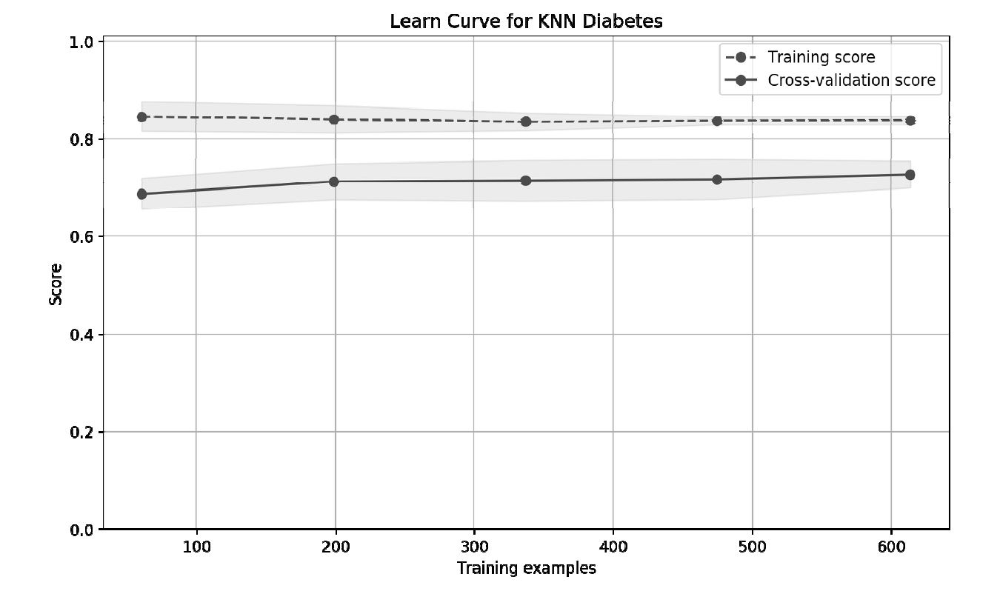
图4-4 学习曲线
从图中可以看出来，训练样本评分较低，且测试样本与训练样本距离较大，这是典型的欠拟合现象。k-均值算法没有更好的措施来解决欠拟合问题，读者学完本书的其他章节后，可以试着用其他算法（如逻辑回归算法、支持向量机等）来对比不同模型的准确性情况。
4.4.4 特征选择及数据可视化
读者不禁要问，有没有直观的方法，来揭示出为什么k-均值算法不是针对这一问题的好模型？一个办法是把数据画出来，可是我们有8个特征，无法在这么高的维度里画出数据，并直观地观察。一个解决办法是特征选择，即只选择2个与输出值相关性最大
的特征，这样就可以在二维平面上画出输入特征值与输出值的关系了。
所幸，scikit-learn在sklearn.feature_selection包里提供了丰富的特征选择方法。我们使用SelectKBest来选择相关性最大的两个特征：
代码详情
1 | from sklearn.feature_selection import SelectKBest selector = SelectKBest(k=2)X_new = selector.fit_transform(X, Y)X_new[0:5] |
把相关性最大的两个特征放在X_new变量里，同时输出了前5个数据样本。输出结果为：
代码详情
1 | array([[ 148. , 33.6], [ 85. , 26.6], [ 183. , 23.3], [ 89. , 28.1], [ 137. , 43.1]]) |
读者可能会好奇，相关性最大的特征到底是哪两个？对比一下本节开头的数据即可知道，它们分别是Glucose（血糖浓度）和BMI（身体质量指数）。血糖浓度和糖尿病的关系自不必说，身体质量指数是反映肥胖程度的指标，从业务角度来看，我们选择出来的2个相关性最高的特征还算合理。好学的读者可能想打破砂锅问到底：SelectKBest到底使用什么神奇的方法选择出了这两个相关性最高的特征呢？这里涉及到一些统计学的知识，感兴趣的读者可参阅下一节内容的延伸阅读。
我们来看看，如果只使用这2个相关性最高的特征的话，3种不同的k-均值算法哪个准确性更高：
代码详情
1 | results = []for name, model in models: kfold = KFold(n_splits=10) cv_result = cross_val_score(model, X_new, Y, cv=kfold) results.append((name, cv_result))for i in range(len(results)): print("name: {}; cross val score: {}".format( results[i][0],results[i][1].mean())) |
这次使用X_new作为输入，笔者计算机上的输出如下：
代码详情
1 | name: KNN; cross val score: 0.7252050581name: KNN with weights; cross val score: 0.690037593985name: Radius Neighbors; cross val score: 0.651025290499 |
从输出可以看出来，还是普通的k-均值模型准确性较高，其准确性也达到了将近73%，与所有特征拿来一块儿训练的准确性差不多。这也侧面证明了SelectKBest特征选择的准确性。
回到目标上来，我们是想看看为什么k-均值无法很好地拟合训练样本。现在我们只有2个特征，可以很方便地在二维坐标上画出所有的训练样本，观察这些数据的分布情况：
代码详情
1 | # 画出数据plt.figure(figsize=(10, 6), dpi=200)plt.ylabel("BMI")plt.xlabel("Glucose")# 画出 Y == 0 的阴性样本，用圆圈表示plt.scatter(X_new[Y==0][:, 0], X_new[Y==0][:, 1], c='r', s=20, marker='o')# 画出 Y == 1 的阳性样本，用三角形表示plt.scatter(X_new[Y==1][:, 0], X_new[Y==1][:, 1], c='g', s=20, marker='^'); |
图4-5 数据分布图
横坐标是血糖值，纵坐标是BMI值，反映身体肥胖情况。从图4-5中可以看出，在中间数据集密集的区域，阳性样本和阴性样本几乎重叠在一起了。假设现在有一个待预测的样本在中间密集区域，它的阳性邻居多还是阴性邻居多呢？这真的很难说。这样就可以直观地看到，k-均值算法在这个糖尿病预测问题上，无法达到很高的预测准确性。
4.5 拓展阅读
本节首先介绍提高k-近邻运算效率方面的知识，这里只给出一些通用的描述和参考资料，感兴趣的读者可以进一步深入研究。另外，在将介绍特征选择时，计算相关性大小的SelectKBest（）函数背后的统计学知识。
4.5.1 如何提高k-近邻算法的运算效率
根据算法原理，每次需要预测一个点时，我们都需要计算训练数据集里每个点到这个点的距离，然后选出距离最近的k个点进行投票。当数据集很大时，这个计算成本非常高。针对N个样本，D个特征的数据集，其算法复杂度为O（DN2
）。
为了解决这个问题，一种叫K-D
Tree的数据结构被发明出来。为了避免每次都重新计算一遍距离，算法会把距离信息保存在一棵树里，这样在计算之前从树里查询距离信息，尽量避免重新计算。其基本原理是，如果A和B距离很远，B和C距离很近，那么A和C的距离也很远。有了这个信息，就可以在合适的时候跳过距离远的点。这样优化后的算法复杂度可降低到O（DNlog（N））。感兴趣的读者可参阅论文：Bentley，J.L.，Communications of the ACM（1975）。
1989年，另外一种称为Ball Tree的算法，在K-D Tree的基础上对性能进一步进行了优化。感兴趣的读者可以搜索Five balltree construction algorithms来了解详细的算法信息。
4.5.2 相关性测试
先通过一个简单的例子来看假设检验 问题，即判断假设的结论是否成立或成立的概率有多高。假设，在一个城市随机采样到程序员和性别的关系的数据：
假设，我们的结论是程序员和性别无关，这个假设称为原假设（null hypothesis）。问：通过我们随机采样观测到的数据，原假设是否成立，或者说原假设成立的概率有多高？
卡方检验（chi-squared test）是检测假设成立与否的一个常用的工具。它的计算公式是：
其中，卡方检验的值记为x2 ，Oi 是观测值，Ei
是期望值。针对我们的例子，如果原假设成立，即程序员职业和性别无关，那么我们期望的男程序员数量应该为（14/489）242=6.928，女程序员数量应该为（14/489）247=7.072，同理可得到我们的期望值如下：
根据卡方检验的公式，可以算出卡方值为：
算出卡方值后，怎么判断原假设成立的概率是多少呢？这里还涉及到自由度 和卡方分布
的概念。简单地讲，自由度是（r-1）×（c-1），其中r是行数，c是列数，针对我们的问题，其自由度为1。卡方分布是指，若n个相互独立的随机变量均服从正态分布，则这n个随机变量的平方和
构成一新的随机变量，其分布规律称为卡方分布。卡方分布的密度函数和自由度相关，知道了自由度和目标概率，我们就能求出卡方值。
针对我们的问题，可以查表得到，自由度为1的卡方分布，在99%处的卡方值为6.63。我们计算出来的卡方值为7.670。由于7.67>6.63，故有99%的把握可以推翻原假设。换个说法，如果原假设成立，即程序员职业和性别无关，那么我们随机采样到的数据出现的概率将低于1%。读者可以搜索“卡方表”或“Chi Squared Table”找到不同自由度对应的卡方值。
卡方值的大小可以反映变量与目标值的相关性，值越大，相关性越大。利用这一特性，SelectKBest（）函数就可以计算不同特征的卡方值来判断特征与输出值的相关性大小，从而完成特征选择。在scikit-learn里，计算卡方值的函数是sklearn.feature_selection.chi2（）。除了卡方检验外，还有F值检验等算法，也可以用来评估特征与目标值的相关性。SelectKBest默认使用的就是F值检验算法，在scikit-learn里，使用sklearn.feature_selection.f_classif来计算F值。关于F值相关的资料，感兴趣的读者可以在英文版维基百科上搜索“Fisher’sexact test”，了解更多信息。
4.6 复习题
1.请用一句话描述k-近邻算法的原理。
2.k-近邻算法有哪些变种？
3.参考ch04.01.ipynb，使用RadiusNeighborsClassifier类来处理分类问题。
4.参考ch04.02.ipynb，使用不同的算法参数k，观察针对同一个数据集，拟合曲线有什么变化。
5.针对ch04.02.ipynb中的回归问题，试着画出算法的学习曲线。提示：关于学习曲线可参考第3章中的ch03.02.ipynb例子，重点是复用plot_learning_curve（）函数。
6.运行ch04.03.ipynb的代码，验证看看，如果我们使用SelectKBest选择出4个相关性最高的特征，并把这4个特征作为输入来训练模型，模型的准确性是否有提高？为什么？
7.运行ch04.03.ipynb的代码，使用SelectKBest选择特征时，把默认的F值换成卡方值，结果有什么不同？
第5章 线性回归算法
线性回归算法是使用线性方程
对数据集进行拟合的算法，是一个非常常见的回归算法。本章首先从最简单的单变量线性回归算法开始介绍，然后介绍了多变量线性回归算法，其中成本函数以及梯度下降算法的推导过程会用到部分线性代数和偏导数；接着重点介绍了梯度下降算法的求解步骤以及性能优化方面的内容；最后通过一个房价预测模型，介绍了线性回归算法性能优化的一些常用步骤和方法。本章涵盖的内容如下：
·单变量线性回归算法的原理；
·多变量线性回归算法的原理；
·梯度下降算法的原理及步骤；
·一个房价预测的模型及其性能优化。
5.1 算法原理
我们先考虑最简单的单变量线性回归算法，即只有一个输入特征。
5.1.1 预测函数
针对数据集x和y，预测函数会根据输入特征x来计算输出值h（x）。其输入和输出的函数关系如下：
这个方程表达的是一条直线。我们的任务是构造一个hθ 函数，来映射数据集中的输入特征x和输出值y，使得预测函数hθ计算出来的值与真实值y的整体误差最小。构造hθ 函数的关键，就是找到合适θ0 ，θ1 的值，θ0 ，θ1 称为模型参数 。
假设我们有如下数据集：
假设模型参数θ0 =1，θ1 =3，则模型函数为hθ
（x）=1+3x。针对数据集中的第一个样本，输入为1，根据模型函数预测出来的值是4，与输出值y是吻合的。针对第二个样本，输入为2，根据模型函数预测出来的值是7，与实际输出值y相差1。模型的求解过程，就是找出一组最合适的模型参数θ0，θ1 ，以便能最好地拟合数据集。
怎样来判断最好 地拟合了数据集呢？回顾之前学过的知识，不难猜出，当拟合成本最小时，即找到了最好的拟合参数。
5.1.2 成本函数
单变量线性回归算法的成本函数是：
其中，h（x（i） ）-y（i） 是预测值和实际值的差，故成本就是预测值和实际值的差的平方的平均值，之所以乘以1/2是为了计算方便。这个函数也称为均方差
方程。有了成本函数，就可以精确地测量模型对训练样本拟合的好坏程度。
5.1.3 梯度下降算法
有了预测函数，也可以精确地测量预测函数对训练样本的拟合情况。我们要怎样求解模型参数θ0 ，θ1 的值呢？这时梯度下降算法就派上了用场。
我们的任务是找到合适的θ0 ，θ1 ，使得成本函数J（θ0 ，θ1 ）最小。为了便于理解，我们切换到三维空间来描述这个任务。在一个三维空间里，以θ0
作为x轴，以θ1 作为y轴，以成本函数J（θ0 ，θ1 ）为z轴，那么我们的任务，就是要找出当z轴上的值最小的时候所对应的x轴上的值和y轴上的值。
梯度下降算法的原理是，先随机选择一组θ0 ，θ1 ，同时选择一个参数α作为移动的步幅。然后，让x轴上的θ0 和y轴上的θ1
分别向特定的方向移动一小步，这个步幅的大小就由参数α指定。经过多次迭代之后，x轴和y轴上的值决定的点就慢慢地靠近z轴上的最小值处，如图5-1所示。
这是个等高线图，就是说在我们描述的三维空间里，你的视角在正上方，看到一圈一圈z轴值相同的点构成的线。在图5-1中，随机选择的点在X0
处，经过多次迭代后，慢慢地靠近圆心处，即z轴上最小值附近。
问题来了，X0 （由[θ0 ，θ1
]描述）怎么知道往哪个方向移动，才能靠近z轴上最小值附近？答案是往成本函数逐渐变小的方向移动。怎么表达成本函数逐渐变小的方向呢？答案是偏导数。
图5-1 梯度下降等高线
可以简单地把偏导数理解为斜率。我们要让θj 不停地迭代，由当前θj 的值，根据J（θ）的偏导数函数，算出J（θ）在θj
上的斜率，然后再乘以学习率α，就可以让θj 往前J（θ）变小的方向迈一小步。
用数学来描述上述过程，梯度下降的公式为：
公式中，下标j就是参数的序号，针对单变量线性回归，即0和1。α称为学习率 ，它决定每次要移动的幅度大小，它会乘以成本函数对参数θj
的偏导数，以这个结果作为参数移动的幅度。如果幅度太小，意味着要计算很多次才能到达目的地，如果幅度太大，可能会直接跨过目的地，从而无法收敛。
把成本函数J（θ）的定义代入上面的公式中，不难推导出梯度下降算法公式：
对公式推导过程感兴趣的读者，可以参阅本章的扩展阅读的内容。
公式中，α是学习率；m是训练样本的个数；h（x（i） ）-y（i） 是模型预测值和真实值的误差。需要注意的是，针对θ0 和θ1 分别求出了其迭代公式，在θ1
的迭代公式里，累加器中还需要乘以xi 。
5.2 多变量线性回归算法
工程应用中往往不止一个输入特征。熟悉了单变量线性回归算法后，我们来探讨一下多变量线性回归算法。
5.2.1 预测函数
上文介绍的线性回归模型里只有一个输入特征，我们推广到更一般的情况，即多个输入特征。此时输出y的值由n个输入特征x1 ，x2 ，x3 ，…，xn
决定。那么预测函数模型可以改写如下：
若x0 为常数1，用累加器运算符重写上面的预测函数：
θ0 ，θ1 ，…，θn 统称为θ，是预测函数的参数 （parameters）。即一组θ值就决定了一个预测函数，记作hθ
（x），为了简便起见，在不引起误解的情况下我们也把它简写为h（x）。理论上，预测函数有无穷多个，我们求解的目标就是找出一个最优的θ值。
思考： 当有n个变量x1 ，x2 ，x3 ，…，xn 决定y值的时候，训练数据集应该长什么样呢？
1.向量形式的预测函数
根据向量乘法运算法则，成本函数可重新写为：
此处，依然假设x0 =1，x0 称为模型偏置 （bias）。
为什么要写成向量形式的预测函数呢？一是因为简洁，二是因为在实现算法时，要用到数值计算里的矩阵运算来提高效率，比如Numpy库里的矩阵运算。
2.向量形式的训练样本
假设，输入特征个数是n，即x1 ，x2 ，x3 ，…，xn ，我们总共有m个训练样本，为了书写方便，假设x0
=1。这样，训练样本可以写成矩阵的形式，即矩阵里每一行都是一个训练样本，总共有m行，每行有n+1列。
思考： 为什么不是n列而是n+1列？答案是，把模型偏置x0 也加入了训练样本里。
最后，把训练样本写成一个矩阵，把预测函数的参数θ写成列向量，其样式如下：

理解训练样本矩阵的关键在于理解这些上标和下标的含义 。其中，带括号上标表示样本序号，从1到m；下标表示特征序号，从0到n，其中x0
为常数1。比如， 表示第i个训练样本的第j个特征的值。而x（i） 只有上标，则表示第i个训练样本所构成的列向量。
熟悉矩阵乘法的话不难得出结论，如果要一次性计算出所有训练样本的预测值hθ （X），可以使用下面的矩阵运算公式：
从这个公式也可以看到矩阵形式表达的优势。实际上，在scikit-learn里，训练样本就是用这种方式表达的，即使用m×n维的矩阵来表达训练样本，可以回顾一下scikit-learn里模型的fit（）函数的参数。
本节看起来涉及到比较多的数学，但实际上都是比较基础的线性代数的知识。读者如果觉得有点吃力，可以有意识地复习一下线性代数相关的知识。
5.2.2 成本函数
多变量线性回归算法的成本函数：
其中，模型参数θ为n+1维的向量，h（x（i） ）-y（i） 是预测值和实际值的差。这个形式和单变量线性回归算法类似。
成本函数有其对应的矩阵样式的版本：
其中，X为m×（n+1）维的训练样本矩阵；上标T表示转置矩阵； 表示由所有的训练样本的输出y（i）
构成的向量。这个公式的优势是：没有累加器，不需要循环，直接使用矩阵运算，就可以一次性计算出针对特定的参数θ下模型的拟合成本。
思考： 矩阵运算真的不需要循环么？
这里所说的不需要循环，是指不需要在算法实现层使用循环，但在数值运算库，如Numpy里，实现的矩阵运算还是要用到循环。虽然都是循环，但是有差别，一是在数值运算库里实现的循环效率更高，二是矩阵运算的循环可以使用分布式来实现。一个大型矩阵运算可以拆成多个子矩阵运算，然后在不同的计算机上执行运算，最终再把运算结果汇合起来。这种分布式计算对大型矩阵运算来说是一种必要的手段。
5.2.3 梯度下降算法
根据单变量线性回归算法里的介绍，梯度下降的公式为：
公式中，下标j是参数的序号，其值从0到n；α为学习率。把成本函数代入上式，利用偏导数计算法则，不难推导出梯度下降算法的参数迭代公式：
读者可以对比一下单变量线性回归函数的参数迭代公式。实际上和多变量线性回归函数的参数迭代公式是一模一样的。唯一的区别就是因为x0
为常数1，在单变量线性回归算法的参数迭代公式中省去了。
这个公式怎么样用编程语言来实现呢？在编写机器学习算法的时候，一般步骤如下。
（1）确定学习率： α太大可能会使成本函数无法收敛，太小则计算太多，机器学习算法效率就比较低。
（2）确定参数起始点： 比如让所有的参数都为1作为起点，即θ0 =1，θ1 =1，…，θn
=1。这样就得到了我们的预测函数：根据预测值和成本函数，就可以算出在参数起始位置的成本。需要注意的是，参数起始点可以根据实际情况灵活选择，以便让机器学习算法的性能更高，如选择比较靠近极点的位置。
（3）计算参数的下一组值： 根据梯度下降参数迭代公式，分别同时算出 新的θj 的值。然后用新的θ值得到新的预测函数hθ
（x），再根据新的预测函数，代入成本函数就可以算出新的成本。
（4）确认成本函数是否收敛：
拿新的成本和旧的成本进行比较，看成本是不是变得越来越小。如果两次成本之间的差异小于误差范围，即说明已经非常靠近最小成本了，就可以近似地认为我们找到了最小成本。如果两次成本之间的差异在误差范围之外，重复步骤3继续计算下一组参数θ，直到找到最优解。
5.3 模型优化
本节介绍线性回归模型常用的优化方法，包括增加多项式特征以及数据归一化处理等。
5.3.1 多项式与线性回归
当线性回归模型太简单导致欠拟合时，我们可以增加特征多项式来让线性回归模型更好地拟合数据。比如有两个特征x1 ，x2 ，可以增加两特征的乘积x1 ，x2
作为新特征x3 。我们还可以增加 作为另外一个新特征x4。我们在第3章介绍过拟合和欠拟合概念时，曾经用这个来作为例子。
在scikit-learn里，线性回归是由类sklearn.linear_model.LinearRegression实现，多项式由类sklearn.preprocessing.PolynomialFeatures实现。那么要怎么添加多项式特征呢？我们需要用一个管道把两个类串起来，即用sklearn.pipeline.Pipeline把两个模型串起来。
比如下面的函数可以创建一个多项式拟合：
代码详情
1 | def polynomial_model(degree=1): polynomial_features = PolynomialFeatures(degree=degree, include_bias=False) linear_regression = LinearRegression() # 这是一个流水线，先增加多项式阶数，然后再用线性回归算法来拟合数据 pipeline = Pipeline([("polynomial_features", polynomial_features), ("linear_regression", linear_regression)]) return pipeline |
一个Pipeline可以包含多个处理节点，在scikit-learn里，除了最后一个节点外，其他的节点都必须实现’fit（）’和’transform（）’方法，最后一个节点只需要实现fit（）方法即可。当训练样本数据送进Pipeline里进行处理时，它会逐个调用节点的fit（）和transform（）方法，然后调用最后一个节点的fit（）方法来拟合数据。管道的运算示意图如图5-2所示。
图5-2 管道
5.3.2 数据归一化
当线性回归模型有多个输入特征时，特别是使用多项式添加特征时，需要对数据进行归一化处理。比如，特征x1 的范围在[1，4]之间，特征x2
的范围在[1，2000]之间，这种情况下，可以让x1 除以4来作为新特征x1 ，同时让x2 除以2000来作为新特征x2 ，该过程称为特征缩放
（feature scaling）。可以使用特征缩放来对训练样本进行归一化处理，处理后的特征值范围在[0，1]之间。
为什么要进行数据归一化处理？归一化处理有哪些注意事项？
归一化处理的目的是让算法收敛更快，提升模型拟合过程中的计算效率。进行归一化处理后，当有个新的样本需要计算预测值时，也需要先进行归一化处理，再通过模型来计算预测值，计算出来的预测值要再乘以归一化处理的系数，这样得到的数据才是真实的预测数据。
在scikit-learn里，使用LinearRegression进行线性回归时，可以指定normalize=True来对数据进行归一化处理。具体可查阅scikit-learn文档。
5.4 示例：使用线性回归算法拟合正弦函数
本节用线性回归算法来模拟正统函数。首先，生成200个在区间内的正弦函数上的点，并且给这些点加上一些随机的噪声。
代码详情
1 | n_dots = 200 X = np.linspace(-2 * np.pi, 2 * np.pi, n_dots)Y = np.sin(X) + 0.2 * np.random.rand(n_dots) - 0.1X = X.reshape(-1, 1)Y = Y.reshape(-1, 1); |
其中，reshape（）函数的作用是把Numpy的数组整形成符合scikit-learn输入格式的数组，否则scikit-learn会报错。接着，我们使用PolynomialFeatures和Pipeline创建一个多项式拟合模型：
代码详情
1 | from sklearn.linear_model import LinearRegressionfrom sklearn.preprocessing import PolynomialFeaturesfrom sklearn.pipeline import Pipeline def polynomial_model(degree=1): polynomial_features = PolynomialFeatures(degree=degree, include_bias=False) linear_regression = LinearRegression(normalize=True) pipeline = Pipeline([("polynomial_features", polynomial_features), ("linear_regression", linear_regression)]) return pipeline |
分别用2、3、5、10阶多项式来拟合数据集：
代码详情
1 | from sklearn.metrics import mean_squared_error degrees = [2, 3, 5, 10]results = []for d in degrees: model = polynomial_model(degree=d) model.fit(X, Y) train_score = model.score(X, Y) mse = mean_squared_error(Y, model.predict(X)) results.append({"model": model, "degree": d, "score": train_score, "mse": mse})for r in results: print("degree: {}; train score: {}; mean squared error: {}".format( r["degree"], r["score"], r["mse"])) |
算出每个模型拟合的评分，此外，使用mean_squared_error算出均方根误差，即实际的点和模型预测的点之间的距离，均方根误差越小说明模型拟合效果越好——上述代码的输出结果为：
代码详情
1 | degree: 2; train score: 0.147285454656; mean squared error: 0.42388701419degree: 3; train score: 0.271740750281; mean squared error: 0.36201990526degree: 5; train score: 0.895448999212; mean squared error: 0.0519726229563degree: 10; train score: 0.993239572763; mean squared error: 0.00336062910102 |
从输出结果可以看出，多项式的阶数越高，拟合评分越高，均方差误差越小，拟合效果越好。最后，我们把不同模型的拟合效果在二维坐标上画出来，可以清楚地看到不同阶数的多项式的拟合效果：
代码详情
1 | from matplotlib.figure import SubplotParams plt.figure(figsize=(12, 6), dpi=200, subplotpars=SubplotParams(hspace=0.3))for i, r in enumerate(results): fig = plt.subplot(2, 2, i+1) plt.xlim(-8, 8) plt.title("LinearRegression degree={}".format(r["degree"])) plt.scatter(X, Y, s=5, c='b', alpha=0.5) plt.plot(X, r["model"].predict(X), 'r-') |
我们使用SubplotParams调整了子图的竖直间距，并且用subplot（）函数把4个模型拟合情况都画在同一个图形上。上述代码的输出结果如图5-3所示。
图5-3 多项式拟合正弦函数
思考：
在[-2π，2π]区间内，10阶多项式对数据拟合得非常好，读者可以试着画出这10阶模型在[-20，20]的区域的曲线，观察一下该模型的曲线和正弦函数的差异。
5.5 示例：测算房价
本节使用scikit-learn自带的波士顿房价数据集来训练模型，然后用模型来测算房价。
5.5.1 输入特征
房价和哪些因素有关？很多人可能对这个问题特别敏感，随时可以列出很多，如房子面积、房子地理位置、周边教育资源、周边商业资源、房子朝向、年限、小区情况等。在scikit-learn的波士顿房价数据集里，它总共收集了13个特征，具体如下。
·CRIM：城镇人均犯罪率。
·ZN：城镇超过25，000平方英尺的住宅区域的占地比例。
·INDUS：城镇非零售用地占地比例。
·CHAS：是否靠近河边，1为靠近，0为远离。
·NOX：一氧化氮浓度。
·RM：每套房产的平均房间个数。
·AGE：在1940年之前就盖好，且业主自住的房子的比例。
·DIS：与波士顿市中心的距离。
·RAD：周边高速公道的便利性指数。
·TAX：每10，000美元的财产税率。
·PTRATIO：小学老师的比例。
·B：城镇黑人的比例。
·LSTAT：地位较低的人口比例。
从这些指标里可以看到中美文化的一些差异。当然，这个数据是在1993年之前收集的，可能和现在会有差异。不要小看了这些指标，实际上一个模型的好坏和输入特征的选择关系密切。大家可以思考一下，如果要在中国测算房价，你会收集哪些特征数据？这些特征数据的可获得性如何？收集成本多高？
我们先导入数据：
代码详情
1 | from sklearn.datasets import load_boston boston = load_boston()X = boston.datay = boston.targetX.shape |
其输出为”（506，13）”，表明这个数据集有506个样本，每个样本有13个特征。整个训练样本放在一个50613的矩阵里。可以通过X[0]来查看一个样本数据：
代码详情
1 | array([ 6.32000000e-03, 1.80000000e+01, 2.31000000e+00, 0.00000000e+00, 5.38000000e-01, 6.57500000e+00, 6.52000000e+01, 4.09000000e+00, 1.00000000e+00, 2.96000000e+02, 1.53000000e+01, 3.96900000e+02, 4.98000000e+00]) |
还可以通过boston.feature_names来查看这些特征的标签：
代码详情
1 | array(['CRIM', 'ZN', 'INDUS', 'CHAS', 'NOX', 'RM', 'AGE', 'DIS', 'RAD', 'TAX', 'PTRATIO', 'B', 'LSTAT'], dtype='|S7') |
读者可以把特征和数值对应起来，观察一下数据。
5.5.2 模型训练
在scikit-learn里，LinearRegression类实现了线性回归算法。在对模型进行训练之前，我们需要先把数据集分成两份，以便评估算法的准确性。
代码详情
1 | from sklearn.model_selection import train_test_split X_train, X_test, y_train, y_test = train_test_split(X, y, test_size=0.2, random_state=3) |
由于数据量较小，我们只选了20%的样本来作为测试数据集。接着，训练模型并测试模型的准确性评分：
代码详情
1 | import timefrom sklearn.linear_model import LinearRegression model = LinearRegression() start = time.clock()model.fit(X_train, y_train) train_score = model.score(X_train, y_train)cv_score = model.score(X_test, y_test)print('elaspe: {0:.6f}; train_score: {1:0.6f}; cv_score: {2:.6f}'.format(time.clock()-start, train_score, cv_score)) |
我们顺便统计了模型的训练时间，除此之外，统计模型针对训练样本的准确性得分（即对训练样本拟合的好坏程度）train_score，还统计了模型针对测试样本的得分cv_score。
运行的结果如下：
代码详情
1 | elaspe: 0.003699; train_score: 0.723941; cv_score: 0.794958 |
从得分情况来看，模型的拟合效果一般，还有没有办法来优化模型的拟合效果呢？
5.5.3 模型优化
首先观察一下数据，特征数据的范围相差比较大，最小的在10-3 级别，而最大的在102
级别，看来我们需要先把数据进行归一化处理，归一化处理最简单的方式是，创建线性回归模型时增加normalize=True参数：
代码详情
1 | model = LinearRegression(normalize=True) |
当然，数据归一化处理只会加快算法收敛速度，优化算法训练的效率，无法提升算法的准确性。
怎么样优化模型准确性呢？我们回到训练分数上来，可以观察到数据针对训练样本的评分比较低（train_score：0.723941），即数据对训练数据的拟合成本比较高，这是个典型的欠拟合
现象。大家回忆一下第3章介绍的优化欠拟合模型的方法，一是挖掘更多输入特征，二是增加多项式特征。在我们的例子里，通过使用低成本的方案，即增加多项多特征来看看能否优化模型的性能。增加多项式特征，其实就是增加模型的复杂度。
我们编写创建多项式模型的函数：
代码详情
1 | from sklearn.linear_model import LinearRegressionfrom sklearn.preprocessing import PolynomialFeaturesfrom sklearn.pipeline import Pipeline def polynomial_model(degree=1): polynomial_features = PolynomialFeatures(degree=degree, include_bias=False) linear_regression = LinearRegression(normalize=True) pipeline = Pipeline([("polynomial_features", polynomial_features), ("linear_regression", linear_regression)]) return pipeline |
接着，我们使用二阶多项式来拟合数据：
代码详情
1 | model = polynomial_model(degree=2) # 二阶多项式 start = time.clock()model.fit(X_train, y_train) train_score = model.score(X_train, y_train)cv_score = model.score(X_test, y_test)print('elaspe: {0:.6f}; train_score: {1:0.6f}; cv_score: {2:.6f}'.format( time.clock()-start, train_score, cv_score)) |
输出结果是：
代码详情
1 | elaspe: 0.013994; train_score: 0.930547; cv_score: 0.860465 |
训练样本分数和测试分数都提高了，看来模型确实得到了优化。我们可以把多项式改为三阶看一下结果：
代码详情
1 | elaspe: 0.343404; train_score: 1.000000; cv_score: -106.313412 |
改为三阶多项式后，针对训练样本的分数达到了1，而针对测试样本的分数却是负数，说明这个模型过拟合了。
思考： 我们总共有13个输入特征，从一阶多项式变为二阶多项式，输入特征个数增加了多少个？
5.5.4 学习曲线
更好的方法是画出学习曲线，这样对模型的状态以及优化的方向就一目了然了。
代码详情
1 | from common.utils import plot_learning_curvefrom sklearn.model_selection import ShuffleSplit cv = ShuffleSplit(n_splits=10, test_size=0.2, random_state=0)plt.figure(figsize=(18, 4), dpi=200)title = 'Learning Curves (degree={0})'degrees = [1, 2, 3] start = time.clock()plt.figure(figsize=(18, 4), dpi=200)for i in range(len(degrees)): plt.subplot(1, 3, i + 1) plot_learning_curve(plt, polynomial_model(degrees[i]), title.format(degrees[i]), X, y, ylim=(0.01, 1.01), cv=cv) print('elaspe: {0:.6f}'.format(time.clock()-start)) |
代码和第3章中的例子差不多，其中common.utils包里的plot_learning_curve（）函数是笔者对sklearn.model_selection.learning_curve（）函数的封装，可在随书代码里找到。
输出的图像如图5-4所示。
图5-4 学习曲线
从图5-4中可以看出，一阶多项式欠拟合，因为针对训练样本的分数比较低；而三阶多项式过拟合，因为针对训练样本的分数达到1，却看不到针对交叉验证数据集的分数。针对二阶多项式拟合的情况，虽然比一阶多项式效果好，但从图中可以明显看出来，针对训练数据集的分数和针对交叉验证数据集的分数之间的间隙比较大，
这一特征说明训练样本数量不够 ，我们应该去采集更多的数据，以便提高模型的准确性。
读者可以在随书代码ch05.02.ipynb上找到本节的示例代码。
5.6 拓展阅读
本节内容涉及到较多的数学知识，特别是矩阵和偏导数运算法则。如果读者阅读起来有困难，可以先跳过。对有一定数学基础的读者，这些知识对理解算法的实现细节及算法的效率有较大的帮助。
5.6.1 梯度下降迭代公式推导
关于梯度下降算法迭代公式的推导过程，可以参阅笔者的一篇博客http://blog.kamidox.com/gradient-descent.html，或者在搜索引擎里搜索“线性回归算法kamidox.com”。博客里详细介绍了公式推导过程中用到的偏导数运算法则。
5.6.2 随机梯度下降算法
本章介绍的梯度下降迭代公式称为批量梯度下降算法 （Batch Gradient Descent），用它对参数进行一次迭代运算，需要遍历所有的训练数据集。当训练数据集比较大时，其算法的效率会很低。考虑另外一个算法：

这个算法的关键点是把累加器去掉，不去遍历所有的训练数据集，而是改成每次随机地从训练数据集里取一个数据进行参数迭代计算，这就是随机梯度下降算法
（stochastic gradient descent）。随机梯度下降算法可以大大提高模型训练效率。
思考： 为什么随机取一个样本进行参数迭代是可行的？
从数学上证明批量梯度下降算法和随机梯度下降算法的等价性涉及到复杂的数学知识。这里有个直观的解释可以帮助读者理解两者的等价性。回到成本函数的定义：
我们说过，这里累加后除以2是为了计算方便，那么除以m是什么意思呢？答案是平均值，即所有训练数据集上的点到预测函数的距离的平均值。再回到随机选取训练数据集里的一个数据 这个做法来看，如果计算次数足够多，并且是真正随机，那么随机选取出来的这组数据从概率的角度来看，和平均值
是相当的。打个比方，储钱罐里有1角的硬币10枚，5角的硬币2枚，1元的硬币1枚，总计3元、13枚硬币。随机从里面取1000次，把每次取出来的硬币币值记录下来，然后将硬币放回储钱罐里。这样最后去算这1000次取出来的钱的平均值（1000次取出来的币值总和除以1000）和储钱罐里每枚硬币的平均值（3/13元）应该是近似相等的。
5.6.3 标准方程
梯度下降算法通过不停地迭代，从而不停地逼近成本函数的最小值来求解模型参数。另外一个方法是直接计算成本函数的微分，令微分算子为0，求解这个方程，即可得到线性回归的解。
回忆一下线性回归算法的成本函数：

成本函数的“斜率”为数的点，即为模型参数的解。即令 求解这个方程最终可以得到模型参数：
方程求解过程可参阅https://en.wikipedia.org/wiki/Linear_least_squares_（mathematics）#Derivation_of_the_normal_equations。
这就是我们的标准方程。它通过矩阵运算，直接从训练样本里求出参数θ的值。其中X为训练样本的矩阵形式，它是m×n的矩阵，y是训练样本的结果数据，它是个m维列向量。
5.7 复习题
1.线性回归模型是用来解决什么问题的？
2.线性回归模型的预测函数是什么样的？其矩阵形式的写法是什么样的？
3.线性回归模型的成本函数是什么样的？
4.梯度下降算法的参数迭代公式是什么样的？
5.运行本章节示例代码ch05.01.ipynb，画出各个模型在[-20，20]的图形，并和正弦波对比。
6.运行本章节示例代码ch05.02.ipynb，把多项式改为五阶会是什么结果？
7.为什么增加多项式特征能优化线性回归模型准确性？
8.找到scikit-learn官方文档，阅读画学习曲线的函数learning_curve（）的文档。
第6章 逻辑回归算法
逻辑回归算法的名字里虽然带有“回归”二字，但实际上逻辑回归算法是用来解决分类问题的算法。本章首先从二元分类入手，介绍了逻辑回归算法的预测函数、成本函数和梯度下降算法公式；然后再介绍了怎样由二元分类延伸到多元分类的问题；接着介绍了正则化，即通过数学的手段来解决模型过拟合问题；针对正则化，还介绍了L1范数和L2范数的含义及区别；最后用一个乳腺癌检测的实例及其模型性能优化来结束本章的内容。本章涵盖的内容如下：
·逻辑回归算法的原理；
·用梯度下降算法求解逻辑回归算法的模型参数；
·正则化及正则化的作用；
·L1范数和L2范数的含义及其作为模型正则项的区别；
·用逻辑回归算法解决乳腺癌检测问题。
6.1 算法原理
假设有一场足球赛，我们有两支球队的所有出场球员信息、历史交锋成绩、比赛时间、主客场、裁判和天气等信息，根据这些信息预测球队的输赢。假设比赛结果记为y，赢球标记为1，输球标记为0，这个就是典型的二元分类问题，可以用逻辑回归算法来解决。
从这个例子里可以看出，逻辑回归算法的输出是个离散值，这是与线性回归算法的最大区别。
6.1.1 预测函数
需要找出一个预测函数模型，使其值输出在[0，1]之间。然后选择一个基准值，如0.5，如果算出来的预测值大于0.5，就认为其预测值为1，反之则其预测值为0。
选择
来作为预测函数，其中e是自然对数的底数。函数g（z）称为Sigmoid函数，也称为Logistic函数。以z为横坐标，以g（z）为纵坐标，画出的图形如图6-1所示。
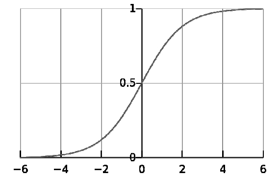
图6-1 Sigmoid函数
从图中可以看出，当z=0时，g（z）=0.5。当z＞0时，g（z）＞0.5，当z越来越大时，g（z）无限接近于1。当z＜0时，g（z）＜0.5，当z越来越小时，g（z）无限接近于0。这正是我们想要的针对二元分类算法的预测函数。
问题来了，怎样把输入特征和预测函数结合起来呢？
结合线性回归函数的预测函数hθ （x）=θT x，假设令z（x）=θT x，则逻辑回归算法的预测函数如下：

下面来解读预测函数。
hθ （x）表示在输入值为x，参数为θ的前提条件下y=1的概率。用概率论的公式可以写成：
上面的概率公式可以读成：在输入x及参数θ条件下y=1的概率 ，这是个条件概率公式。由概率论的知识可以推导出
对二元分类法来说，这是个非黑即白的世界。
6.1.2 判定边界
逻辑回归算法的预测函数由下面两个公式给出的：
假定y=1的判定条件是hθ （x）≥0.5，y=0的判定条件是hθ （x）＜0.5，则可以推导出y=1的判定条件就是θT x≥0，y=0的判定条件就是θT
x＜0。所以，θT x=0即是我们的判定边界。
下面给出两个判定边界的例子。
假定有两个变量x1 ，x2 ，其逻辑回归预测函数是hθ （x）=g（θ0 +θ1 x1 +θ2 x2 ）。假设给定参数
那么可以得到判定边界-3+x1 +x2 =0，即x1 +x2 =3，如果以x1 为横坐标，x2
为纵坐标，则这个函数画出来就是一个通过（0，3）和（3，0）两个点的斜线。这条线就是判定边界，如图6-2左图所示。
图6-2 判定边界
其中，直线左下角为y=0，直线右上解为y=1。横坐标为x1 ，纵坐标为x2 。
如果预测函数是多项式 且给定
则可以得到判定边界函数 还是以x1 为横坐标，x2
为纵坐标，则这是一个半径为1的圆。圆内部是y=0，圆外部是y=1，如图6-2右图所示。
这是二阶多项式的情况，更一般的多阶多项式可以表达出更复杂的判定边界。
6.1.3 成本函数
我们不能使用线性回归模型的成本函数来推导逻辑回归的成本函数，因为那样的成本函数太复杂，最终很可能会导致无法通过迭代找到成本函数值最小的点。
为了容易地求出成本函数的最小值，我们分成y=1和y=0两种情况来分别考虑其预测值与真实值的误差。我们先考虑最简单的情况，即计算某个样本x，y其预测值与真实值的误差，我们选择的成本公式如下：
其中，hθ （x）表示预测为1的概率，log（x）为自然对数。我们以hθ （x）为横坐标，以成本值Cost（hθ
（x），y）为纵坐标，把上述两个公式分别画在二维平面上，如图6-3所示。
图6-3 成本函数
回顾成本的定义，成本是预测值与真实值的差异。当差异越大时，成本越大，模型受到的“惩罚”也越严重。
在图6-3左图中，当y=1时，随着hθ （x）的值（预测为1的概率）越来越大，预测值越来越接近真实值，其成本越来越小。在图6-3左图中，当y=0时，随着hθ
（x）的值（预测为1的概率）越来越大，预测值越来越偏离真实值，其成本越来越大。
思考： 符合上述规律的函数模型很多，为什么我们要选择自然对数函数来作为成本函数呢？
逻辑回归模型的预测函数是Sigmoid函数，而Sigmoid函数里有e的n次方运算，自然对数刚好是其逆运算，比如log（en
）=n。选择自然对数，最终会推导出形式优美的逻辑回归模型参数的迭代函数，而不需要去涉及对数运算和指数函数运算。这就是我们选择自然对数函数来作为成本函数的原因。更进一步，把输入值x从负无穷大到正无穷大映射到[0，1]区间的模型很多，逻辑回归算法为什么要选择Sigmoid函数作为预测函数的模型呢？严格地讲，不一定非要选择Sigmoid函数作为预测函数。但如果不选择Sigmoid函数，就需要重新选择性质接近的成本函数，这样才能在数学上得到既方便表达、效率又高的成本函数。
下面来看成本函数的统一写法问题 。分开表述的成本计算公式始终不方便，能不能合并成一个公式呢？考虑下面的公式：
由于是离散值，当y=1时，1-y=0，上式的后半部分为0；当y=0时，上式的前半部分为0。因此上式与分开表达的成本计算公式是等价的。
介绍到这里，成本函数就要隆重登场了。根据一个样本的成本计算公式，很容易写出所有样本的成本平均值，即成本函数：
6.1.4 梯度下降算法
和线性回归类似，我们使用梯度下降算法来求解逻辑回归模型参数。根据梯度下降算法的定义，可以得出：
这里的关键是求解成本函数的偏导数。最终推导出来的梯度下降算法公式为：
对公式推导过程感兴趣的同学，可以参阅本章扩展阅读的内容。
这个公式的形式和线性回归算法的参数迭代公式是一样的。当然，由于这里 而线性回归算法里hθ （x）=θT
x。所以，两者的形式一样，但数值计算方法则完全不同。
至此，我们就把逻辑回归算法的相关原理解释清楚了。
6.2 多元分类
逻辑回归模型可以解决二元分类问题，即y={0，1}，能不能用来解决多元分类问题呢？答案是肯定的。针对多元分类问题，y={0，1，2，…，n}，总共有n+1个类别。其解决思路是，首先把问题转化为二元分类问题，即y=0是一个类别，y={1，2，…，n}作为另外一个类别，然后计算这两个类别的概率；接着，把y=1作为一个类别，把y={0，2，…，n}作为另外一个类别，再计算这两个类别的概率。由此推广开，总共需要n+1个预测函数：
预测出来的概率最高的那个类别，就是样本所属的类别。
6.3 正则化
回忆第3章介绍的理论知识，过拟合是指模型很好地拟合了训练样本，但对新数据预测的准确性很差，这是因为模型太复杂了。解决办法是减少输入特征的个数，或者获取更多的训练样本。这里介绍的正则化也是用来解决模型过拟合问题的一个方法。
·保留所有的特征，减小特征的权重θj 的值。确保所有的特征对预测值都有少量的贡献。
·当每个特征xi 对预测值y都有少量的贡献时，这样的模型可以良好地工作，这就是正则化的目的，可以用它来解决特征过多时的过拟合问题。
6.3 正则化
回忆第3章介绍的理论知识，过拟合是指模型很好地拟合了训练样本，但对新数据预测的准确性很差，这是因为模型太复杂了。解决办法是减少输入特征的个数，或者获取更多的训练样本。这里介绍的正则化也是用来解决模型过拟合问题的一个方法。
·保留所有的特征，减小特征的权重θj 的值。确保所有的特征对预测值都有少量的贡献。
·当每个特征xi 对预测值y都有少量的贡献时，这样的模型可以良好地工作，这就是正则化的目的，可以用它来解决特征过多时的过拟合问题。
6.3.2 逻辑回归模型正则化
使用相同的思路，我们可以对逻辑回归模型的成本函数进行正则化，其方法也是在原来的成本函数基础上加上正则项：
相应地，正则化后的参数迭代公式为：
需要注意的是，上式中j≥1，因为θ0
没有参与正则化。另外需要留意，逻辑回归和线性回归的参数迭代算法看起来形式是一样的，但其实它们的算法不一样，因为两个式子的预测函数hθ
（x）不一样。针对线性回归hθ （x）=θT x，而针对逻辑回归
6.4 算法参数
在scikit-learn里，逻辑回归模型由类sklearn.linear_model.LogisticRegression实现。
1.正则项权重
我们上面介绍的正则项权重λ，在LogisticRegression里有个参数C与此对应，但成反比。即C值越大，正则项的权重越小，模型容易出现过拟合；C值越小，正则项权重越大，模型容易出现欠拟合。
2.L1/L2范数
创建逻辑回归模型时，有个参数penalty，其取值有’l1’或’l2’，这是什么意思呢？
这个实际上就是指定我们前面介绍的正则项 的形式。回顾之前介绍的内容，在成本函数里添加的正则项为这个实际上是个L2正则项，即把L2范数作为正则项。聪明的你猜到了，我们也可以添加L1范数来作为正则项。
L1范数作为正则项，会让模型参数θ稀疏化，即让模型参数向量里为0的元素尽量多。而L2范数作为正则项，则是让模型参数尽量小，但不会为0，即尽量让每个特征对预测值都有一些小的贡献。
问题来了，为什么会造成上述不同的结果呢？
要解释清楚原因，就需要先了解一下L1范数和L2范数的概念，它们都是针对向量的一种运算。为了简单起见，假设模型只有两个参数，它们构成一个二维向量θ=[θ1，θ2 ]，则L1范数为：
即L1范数是向量里元素的绝对值之和，L2范数为元素的平方和的开方根：
定义清楚了之后，我们来介绍它们作为正则项的效果有什么不同。回顾第5章介绍的内容，梯度下降算法在参数迭代的过程中，实际上是在成本函数的等高线上跳跃，并最终收敛在误差（为了避免误解，此处称未加正则项之前的成本为误差）最小的点上。我们先思考一下，正则项的本质是什么？正则项的本质是惩罚。模型在训练的过程中，如果没有遵守正则项所表达的规则，那么其成本会变大，即受到了惩罚，从而往正则项所表达的规则处收敛。成本函数在这两项规则的综合作用下，正则化后的模型参数应该收敛在误差等值线与正则项等值线相切的点上。
我们把L1范数和L2范数在二维坐标轴上画出其图形，即可直观地看到它们所表达的规则的不同。
如图6-4所示为使用matplotlib画的L1和L2范数示意图，感兴趣的读者可参阅随书代码ch06.01.ipynb。
在图6-4左图中，我们用的是L1范数来作为正则项，L1范数表示的是元素的绝对值之和，图中L1范数的值为1，其在θ1 ，θ2
坐标轴上的等值线是个正方形，虚线表示的是误差等值线。可以看到，误差等值线和L1范数等值线相切的点位于坐标轴上 。
在图6-4右图中，我们用的是L2范数来作为正则项，图中L2范数的值为1，在θ1 ，θ2
坐标轴上，它的等值线是一个圆。它和模型误差等值线相切的点，一般不在坐标轴上。
至此，我们就清楚了，L1范数作为正则项，会让模型参数稀疏化，而L2范数作为正则项，则会使模型的特征对预测值都有少量的贡献，避免模型过拟合。
作为推论，L1范数作为正则项，有以下几个用途。
·特征选择：它会让模型参数向量里的元素为0的点尽量多。因此可以排除掉那些对预测值没有什么影响的特征。从而简化问题。所以L1范数解决过拟合的措施，实际上是减少特征数量。
·可解释性：模型参数向量稀疏化后，只会留下那些对预测值有重要影响的特征。这样我们就容易解释模型的因果关系。比如，针对某种癌症的筛查，如果有100个特征，那么我们无从解释到底哪些特征对阳性呈关键作用。稀疏化后，只留下几个关键的特征，就容易看到因果关系。
由此可见，L1范数作为正则项，更多的是一个分析工具，而适合用来对模型求解。因为它会把不重要的特征直接去除。大部分情况下，我们解决过拟合问题，还是选择L2范数作为正则项，这也是scikit-learn里的默认值。
图6-4 L1、L2范数
6.5 实例：乳腺癌检测
本节来看一个实例，使用逻辑回归算法解决乳腺癌检测问题。我们需要先采集肿瘤病灶造影图片，然后对图片进行分析，从图片中提取特征，再根据特征来训练模型。最终使用模型来检测新采集到的肿瘤病灶造影，以便判断肿瘤是良性的还是恶性的。这是个典型的二元分类问题。
6.5.1 数据采集及特征提取
在工程应用中，数据采集和特征提取工作往往决定着项目的成败。读者可以思考一下，我们要获取足够多数量的良性和恶性分布合理的肿瘤病灶造影图片，需要多大的线下工作？当然，这一工作一般会以科研中心和医院合作的形式来获取数据。其次，拿到病灶造影图片后，要分析图片、提取特征，这也是个费心伤神的工作。哪些特征有助于我们预测肿瘤的良性或恶性？这都是值得深入思考和实践的问题。最后，决定要提取的特征集合，还需要编写图片处理程序，以便从病灶造影图片中提出我们需要的特征。
为了简单起见，我们直接加载scikit-learn自带的一个乳腺癌数据集。这个数据集是已经采集后的数据：
代码详情
1 | # 载入数据from sklearn.datasets import load_breast_cancer cancer = load_breast_cancer()X = cancer.datay = cancer.targetprint('data shape: {0}; no. positive: {1}; no. negative: {2}'.format( X.shape, y[y==1].shape[0], y[y==0].shape[0]))print(cancer.data[0]) |
上述代码输出结果如下：
代码详情
1 | data shape: (569, 30); no. positive: 357; no. negative: 212[ 1.79900000e+01 1.03800000e+01 1.22800000e+02 1.00100000e+03 1.18400000e-01 2.77600000e-01 3.00100000e-01 1.47100000e-01 2.41900000e-01 7.87100000e-02 1.09500000e+00 9.05300000e-01 8.58900000e+00 1.53400000e+02 6.39900000e-03 4.90400000e-02 5.37300000e-02 1.58700000e-02 3.00300000e-02 6.19300000e-03 2.53800000e+01 1.73300000e+01 1.84600000e+02 2.01900000e+03 1.62200000e-01 6.65600000e-01 7.11900000e-01 2.65400000e-01 4.60100000e-01 1.18900000e-01] |
我们可以看到，数据集中总共有569个样本，每个样本有30个特征，其中357个阳性（y=1）样本，212个阴性（y=0）样本。同时，我们还打印出一个样本数据，以便直观地进行观察。
为了强调特征提取工作的重要性，这里介绍一下这些特征值的物理含义，读者也可以思考一下，如果让你来提取特征，你会怎么做？
这个数据集总共从病灶造影图片中提取了以下10个关键属性。
·radius：半径，即病灶中心点离边界的平均距离。
·texture：纹理，灰度值的标准偏差。
·perimeter：周长，即病灶的大小。
·area：面积，也是反映病灶大小的一个指标。
·smoothness：平滑度，即半径的变化幅度。
·compactness：密实度，周长的平方除以面积的商，再减1，即
·concavity：凹度，凹陷部分轮廓的严重程度。
·concave points：凹点，凹陷轮廓的数量。
·symmetry：对称性。
·fractal dimension：分形维度。
从这些指标里，可以看出，有些指标属于“复合”指标，即由其他的指标经过运算得到的。比如密实度，是由周长和面积计算出来的。不要小看这种运算构建出来的新特征，这是事物内在逻辑关系的体现。
举个例子，我们需要监控数据中心中每台物理主机的运行情况，其中CPU占用率、内存占用率、网络吞吐量是几个重要的指标。问：有台主机CPU占用率80%，这个主机状态是否正常？要不要发布告警？答：看情况。仅从CPU占用率来看还不能判断主机是否正常，还要看内存占用情况和网络吞吐量情况。如果此时内存占用也成比例上升，且网络吞吐量也在合理的水平，那么造成这一状态的可能是用户访问的流量过大，导致主机负荷增加，不需要告警。但如果内存占用、网络吞量和CPU占用不在同一量级，那么这台主机就可能处于不正常的状态。所以，我们需要构建一个复合特征，如CPU占用率和内存占用率的比值，以及CPU占用率和网络吞吐量的比值，这样构造出来的特征更真实地体现出了现实问题中的内在规则。
所以，提取特征时，不妨从事物的内在逻辑关系入手，分析已有特征之间的关系，从而构造出新的特征 。这一方法在实际工程应用中是常用的特征提取手段。
回到我们讨论的乳腺癌数据集的特征问题中，实际上它只关注10个特征，然后又构造出了每个特征的标准差及最大值，这样每个特征就又衍生出了两个特征，所以总共就有了30个特征。可以通过cancer.feature_names变量来查看这些特征的名称。
6.5.2 模型训练
阅读过前面章节的读者应该很熟悉这里的步骤了，因为scikit-learn提供了一致的接口调用，使用起来非常方便。
首先，我们把数据集分成训练数据集和测试数据集。
代码详情
1 | from sklearn.model_selection import train_test_splitX_train, X_test, y_train, y_test = train_test_split(X, y, test_size=0.2) |
然后，我们使用LogisticRegression模型来训练，并计算训练数据集的评分数据和测试数据集的评分数据：
代码详情
1 | # 模型训练from sklearn.linear_model import LogisticRegression model = LogisticRegression()model.fit(X_train, y_train) train_score = model.score(X_train, y_train)test_score = model.score(X_test, y_test)print('train score: {train_score:.6f}; test score: {test_score:.6f}'.format( train_score=train_score, test_score=test_score)) |
在笔者计算机上的输出如下：
代码详情
1 | train score: 0.953846; test score: 0.973684 # 看起来效果不错 |
我们还可以看一下测试样本中，有几个是预测正确的：
代码详情
1 | # 样本预测y_pred = model.predict(X_test)print('matchs: {0}/{1}'.format(np.equal(y_pred, y_test).shape[0], y_test. shape[0])) |
笔者计算机上的输出如下：
代码详情
1 | matchs: 114/114 |
总共114个测试样本，全部预测正确。这里有个疑问，为什么全部都预测正确，而testscore却只有0.973684，而不是1呢？答案是，scikit-learn不是使用这个数据来计算分数，因为这个数据不能完全反映误差情况，而是使用预测概率数据来计算模型评分。
针对二元分类问题，LogisticRegression模型会针对每个样本输出两个概率，即为0的概率和为1的概率，哪个概率高就预测为哪个类别。
我们可以找出针对测试数据集，模型预测的“自信度”低于90%的样本。怎样找出这些样本呢？我们先计算出测试数据集里的每个样本的预测概率数据，针对每个样本，它会有两个数据，一是预测其为阳性的概率，另外一个是预测其为阴性的概率。接着找出预测为阴性的概率大于0.1的样本，然后在结果集里，找出预测为阳性的概率也大于0.1的样本，这样就找出了模型预测“自信度”低于90%的样本。这是因为所有类别的预测概率加起来，一定是100%，两个都大于0.1，则其最大的值一定是小于90%，即“自信度”不足90%。我们可以看下概率数据：
代码详情
1 | # 预测概率：找出预测概率低于 90% 的样本y_pred_proba = model.predict_proba(X_test) # 计算每个测试样本的预测概率# 打印出第一个样本的数据，以便读者了解数据形式print('sample of predict probability: {0}'.format(y_pred_proba[0])) # 找出第一列，即预测为阴性的概率大于 0.1 的样本，保存在 result 里y_pred_proba_0 = y_pred_proba[:, 0] > 0.1result = y_pred_proba[y_pred_proba_0] # 在 result 结果集里，找出第二列，即预测为阳性的概率大于 0.1 的样本y_pred_proba_1 = result[:, 1] > 0.1print(result[y_pred_proba_1]) |
笔者计算机上的输出如下：
代码详情
1 | sample of predict probability: [ 1.00000000e+00 2.13344552e-47][[ 0.14162628 0.85837372] [ 0.77498894 0.22501106] [ 0.72147347 0.27852653] [ 0.14436391 0.85563609] [ 0.35342587 0.64657413] [ 0.89676523 0.10323477] [ 0.1337727 0.8662273 ] [ 0.1709261 0.8290739 ] [ 0.16402016 0.83597984] [ 0.79657204 0.20342796] [ 0.76368522 0.23631478]] |
我们使用model.predict_proba（）来计算概率，同时找出那些预测“自信度”低于90%的样本。可以看到，最没有把握的样本是[0.353425870.64657413]，即只有64.66%的概率是阳性。读者朋友们如果运行这个实例，输出结果可能会略有差异，因为训练样本和测试样本是随机分配的。
6.5.3 模型优化
我们使用LogisticRegression模型的默认参数训练出来的模型，准确性看起来还是挺高的。问题是，有没有优化空间呢？如果有，往哪个方向优化呢？
我们先尝试增加多项式特征，实际上，多项式特征和上文介绍的人为添加的复合特征类似，都是从已有特征经过数学运算得来的。只是这里的逻辑关系没那么明显。所幸，虽然我们不能直观地理解多项式特征的逻辑关系，但是有一些方法和工具可以用来过滤出那些对模型准确性有帮助的特征。
首先，我们使用Pipeline来增加多项式特征，就像在前面章节介绍的那样：
代码详情
1 | from sklearn.linear_model import LogisticRegressionfrom sklearn.preprocessing import PolynomialFeaturesfrom sklearn.pipeline import Pipeline # 增加多项式预处理def polynomial_model(degree=1, **kwarg): polynomial_features = PolynomialFeatures(degree=degree, include_bias=False) logistic_regression = LogisticRegression(**kwarg) pipeline = Pipeline([("polynomial_features", polynomial_features), ("logistic_regression", logistic_regression)]) return pipeline |
接着，增加二阶多项式特征，创建并训练模型：
代码详情
1 | import time model = polynomial_model(degree=2, penalty='l1') start = time.clock()model.fit(X_train, y_train) train_score = model.score(X_train, y_train)cv_score = model.score(X_test, y_test)print('elaspe: {0:.6f}; train_score: {1:0.6f}; cv_score: {2:.6f}'.format( time.clock()-start, train_score, cv_score)) |
我们使用L1范数作为正则项（参数penalty=’l1’），在笔者计算机上的输出如下：
代码详情
1 | elaspe: 0.504948; train_score: 0.997802; cv_score: 0.982456 |
可以看到，训练数据集评分和测试数据集评分都增加了。为什么使用L1范数作为正则项呢？前面介绍过，L1范数作为正则项，可以实现参数的稀疏化，即自动帮助我们选择出那些对模型有关联的特征。我们可以观察一下有多少个特征没有被丢弃，即其对应的模型参数θj
非0：
代码详情
1 | logistic_regression = model.named_steps['logistic_regression']print('model parameters shape: {0}; count of non-zero element: {1}'.format( logistic_regression.coef_.shape, np.count_nonzero(logistic_regression.coef_))) |
输出结果如下：
代码详情
1 | model parameters shape: (1, 495); count of non-zero element: 94 |
逻辑回归模型的coef_属性里保存的就是模型参数。从输出结果可以看到，增加二阶多项式特征后，输入特征由原来的30个增加到了495个，最终大多数特征都被丢弃，只保留了94个有效特征。
6.5.4 学习曲线
有的读者可能会问，怎么知道使用L1=范数作为正则项能提高算法的准确性？答案是：画出学习曲线。学习曲线是模型最有效的诊断工具之一，这也是之前章节一直强调的内容。
首先画出使用L1范数作为正则项所对应的一阶和二阶多项式的学习曲线：
代码详情
1 | from common.utils import plot_learning_curvefrom sklearn.model_selection import ShuffleSplit cv = ShuffleSplit(n_splits=10, test_size=0.2, random_state=0)title = 'Learning Curves (degree={0}, penalty={1})'degrees = [1, 2]penalty = 'l1' start = time.clock()plt.figure(figsize=(12, 4), dpi=144)for i in range(len(degrees)): plt.subplot(1, len(degrees), i + 1) plot_learning_curve(plt, polynomial_model(degree=degrees[i], penalty=penalty), title.format(degrees[i], penalty), X, y, ylim=(0.8, 1.01), cv=cv) print('elaspe: {0:.6f}'.format(time.clock()-start)) |
这段代码读者应该不会陌生吧，其输出的学习曲线如图6-5所示。
接着画出使用L2范数作为正则项所对应的一阶和二阶多项式的学习曲线：
代码详情
1 | penalty = 'l2' start = time.clock()plt.figure(figsize=(12, 4), dpi=144)for i in range(len(degrees)): plt.subplot(1, len(degrees), i + 1) plot_learning_curve(plt, polynomial_model(degree=degrees[i], penalty=penalty, solver='lbfgs'), title.format(degrees[i], penalty), X, y, ylim=(0.8, 1.01), cv=cv) print('elaspe: {0:.6f}'.format(time.clock()-start)) |
图6-5 L1范数学习曲线
学习曲线如图6-6所示。
图6-6 L2范数学习曲线
从图6-5和图6-6中可以明显地看出，使用二阶多项式并使用L1范数作为正则项的模型最优，因为它的训练样本评分最高，交叉验证样本评分也最高。从图中还可以看出，训练样本评分和交叉验证样本评分之间的间隙还比较大，我们可以采集更多的数据来训练模型，以便进一步优化模型。
本实例的代码，请参阅随书代码ch06.02.ipynb。
如果读者运行了示例代码，会发现画L1范数对应的学习曲线时，需要花比较长的时间，在笔者的计算机（Macbook Pro Retina，13-inch 2.6
GHz Intel Core i5）上，总共用时15.587002秒。原因是，scikit-learn的learning_curve（）函数在画学习曲线的过程中，要对模型进行多次训练，并计算交叉验证样本评分。同时，为了使曲线更平滑，针对每个点还会进行多次计算求平均值。这个就是ShuffleSplit类的作用。在我们这个实例里，只有569个训练样本，这是个很小的数据集。如果数据集增加100倍，甚至1000倍，拿出来画学习曲线将是场灾难。
问题来了，针对大数据集，怎样高效地画学习曲线？
答案很简单，我们可以从大数据集里选择一小部分数据来画学习曲线，待选择好最优的模型之后，再使用全部的数据集来训练模型。有个地方需要注意，我们要尽量保持选择出来的这部分数据的标签分布与大数据集的标签分布相同，如针对二元分类，阳性和阴性比例要一致。
6.6 拓展阅读
本章的扩展阅读涉及较多的数学知识，阅读有困难的同学可跳过。感兴趣的同学，可顺着笔者指引的一些资料，找到更多的阅读资料。
1.梯度下降公式推导
关于逻辑回归模型的梯度下降公式的推导过程，感兴趣的同学可以参阅笔者的一篇博客http://blog.kamidox.com/logistic-regression.html 。
2.向量形式
实际上，我们的预测函数就是写成向量形式的：
这个预测函数一次只计算一个训练样本的预测值，我们要怎样一次性计算出所有样本的预测值呢？
上述公式即可达到目的。其中g（x）为Sigmoid函数。X为m×n的矩阵，即数据集的矩阵表达。
成本函数也有对应的矩阵形式：
其中，y为目标值向量，h为一次性计算出来的所有样本的预测值。
3.算法性能优化
梯度下降算法的效率比较低，优化的梯度下降算法有Conjugate Gradient、BFGS、L-BFGS等。这些算法比较复杂，实现这些算法是数值计算专家的工作，一般工程人员只需要知道这些算法是怎么优化的以及怎么使用这些算法即可。感兴趣的读者可以搜索这些算法的关键词，会有大量的介绍资料。
6.7 复习题
1.逻辑回归模型是解决什么问题的模型？
2.逻辑回归模型的预测函数是什么？
3.逻辑回归模型的成本函数是什么？
4.逻辑回归模型的梯度下降算法中，其参数迭代公式是什么？
5.正则项有什么作用？
6.L1范式正则项和L2范式正则项有什么区别？
7.运行ch06.02.ipynb实例，修改代码，在不引入多项式特征的情况下，观察使用L1和L2范数作为正则项，其训练出来的模型参数有什么区别？
8.运行ch06.02.ipynb实例，试试用三阶多项式拟合模型有什么效果？引入三阶多项式后会有多少个特征？使用L1范数作为正则项，有多少项非零参数？
第7章 决策树
决策树是最经典的机器学习模型之一。它的预测结果容易理解，易于向业务部门解释，预测速度快，可以处理类别型数据和连续型数据。在机器学习的数据挖掘类求职面试中，决策树是面试官最喜欢的面试题之一。通过本章读者可以掌握以下内容：
·信息熵及信息增益的概念，以及决策树的分裂的原则；
·决策树的创建及剪枝算法；
·scikit-learn中决策树算法的相关参数；
·使用决策树预测泰坦尼克号幸存者实例；
·scikit-learn中模型参数选择的工具及使用方法；
·聚合算法及随机森林算法的原理。
7.1 算法原理
决策树是一个类似于流程图的树结构，分支节点表示对一个特征进行测试，根据测试结果进行分类，树叶节点代表一个类别。如图7-1所示，我们用决策树来决定下班后的安排。
图7-1 决策树
我们分别对精力指数和情绪指数两个特征进行测试，并根据测试结果决定行为的类别。每选择一个特征进行测试，数据集就被划分成多个子数据集。接着继续在子数据集上选择特征，并进行数据集划分，直到创建出一个完整的决策树。创建好决策树模型后，只要根据下班后的精力和情绪情况，从根节点一路往下即可预测出下班后的行为。
问题来了，在创建决策树的过程中，要先对哪个特征进行分裂？比如针对图7-1中的例子，先判断精力指数进行分裂还是先判断情绪指数进行分裂？要回答这个问题，我们需要从信息的量化谈起。
7.1.1 信息增益
我们天天在谈论信息，那么信息要怎么样来量化呢？1948年，香农在他著名的《通信的数学原理》中提出了信息熵
（Entropy）的概念，从而解决了信息的量化问题。香农认为，一条信息的信息量和它的不确定性有直接关系。一个问题不确定性越大，要搞清楚这个问题，需要了解的信息就越多，其信息熵就越大。信息熵的计算公式为：
其中，P（x）表示事件x出现的概率。例如，一个盒子里分别有5个白球和5个红球，随机取出一个球。问：这个球是红色的还是白色的？这个问题的信息量多大呢？由于红球和白球出现的概率都是1/2，代入信息熵公式，可以得到其信息熵为：
即，这个问题的信息量是1
bit。对，你没有看错，信息量的单位就是比特。我们要确定这个球是红色的还是白色的，只需要1比特的信息就够了。再举一个极端的例子，一个盒子里有10个白球，随机取出一个球，这个球是什么颜色的？这个问题的信息量是多少呢？答案是0，因为这是一个确定的事件，其概率P（x）=1，我们代入香农的信息熵公式，即可得到其信息熵为0。即，我们不需要再获取任何新的信息，即可知道这个球一定是白色的。
回到决策树的构建问题上，当我们要构建一个决策树时，应该优先选择哪个特征来划分数据集呢？答案是：遍历所有的特征，分别计算，使用这个特征划分数据集前后信息熵的变化值，然后选择信息熵变化幅度最大的那个特征，来优先作为数据集划分依据。即选择信息增益
最大的特征作为分裂节点。
比如，一个盒子里共有红、白、黑、蓝4种颜色的球共16个，其中红球2个，白球2个，黑球4个，蓝球8个。红球和黑球的体积一样，都为1个单位；白球和蓝球的体积一样，都为2个单位。红球、白球和黑球的质量一样，都是1个单位，蓝球的质量为2个单位。
我们应该优先选择体积这个特征，还是优先选择质量这个特征来作为数据集划分依据呢？根据前面介绍的结论，我们先计算基础信息熵，即划分数据集前的信息熵。从已知信息容易知道，红球、白球、黑球、蓝球出现的概率分别为2/16，、2/16、4/16、8/16，因此基础信息熵为：
接着使用体积来划分数据集，此时会划分出两个数据集，第一个子数据集里是红球和黑球，第二个子数据集里是白球和蓝球，我们计算这种划分方式的信息熵。其中第一个子数据集里，红球2个，黑球4个，其概率分别为2/6和4/6，因此第一个子数据集的信息熵为：
第二个子数据集里，白球2个，蓝球8个，其概率分别为2/10和8/10，因此第二个子数据集的信息熵为：
因此，使用体积来划分数据集后，其信息熵为H（D1 ）=H（D1sub1 ）+H（D1sub2 ）=1.640224，其信息增益为H（Dbase ）-H（D1
）=1.75-1.640224=0.109776，如图7-2a所示。
图7-2 信息增益
如果我们使用质量来划分数据集，也会划分出两个数据集，第一个子数据集里是红球、白球和黑球，第二个子数据集里是只有蓝球。我们计算这种划分方式的信息熵。针对第一个子数据集，红球、白球和黑球出现的概率分别是2/8，、2/8、4/8，其信息熵为：
第二个子数据集里只有蓝球，其概率为1，因此其信息熵H（D2sub2
）=0。我们得出使用使用质量来划分数据集时的信息熵为1.5，其信息增益为1.75-1.5=0.25。如图7-2b所示。由于使用质量划分数据集比使用体积划分数据集得到了更高的信息增益，所以我们优先选择质量这个特征来划分数据集。
下面来讨论信息增益的物理意义。
我们以概率P（x）为横坐标，以信息熵Entropy为纵坐标，把信息熵和概率的函数关系Entropy=-P（x）log2
P（x）在二维坐标轴上画出来，如图7-3所示。
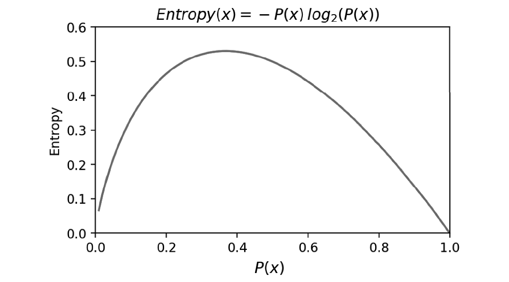
图7-3 信息熵与概率
从这个函数关系可以看出来，当概率P（x）越接近0或越接近1时，信息熵的值越小，其不确定性越小，即数据越“纯”。典型地，当概率值为1时，此时数据是最“纯净”的，因为只有一种类别的数据，已经消除了不确定性，其信息熵为0。我们在特征选择时，选择信息增益最大的特征，在物理上，即让数据尽量往更纯净的方向上变换。因此，我们得出，信息增益是用来衡量数据变得更有序、更纯净的程度的指标。
熵是热力学中表征物质状态的参量之一，其物理意义是体系混乱程度的度量，被香农借用过来，作为信息量的度量。著名的熵增原理是这样描述的：
熵增原理就是孤立热力学系统的熵不减少，总是增大或者不变。一个孤立系统不可能朝低熵的状态发展，即不会变得有序。
用白话讲就是，如果没有外力的作用，这个世界将是越来越无序的。人活着，在于尽量让熵变低，即让世界变得更有序，降低不确定性。当我们在消费资源时，是一个增熵的过程。我们把有序的食物变成了无序的垃圾。例如，笔者在写书或读者在看书的过程，可以理解为减熵过程。我们通过写作和阅读，减少了不确定的信息，从而实现了减熵的过程。人生价值的实现，在于消费资源（增熵过程）来获取能量，经过自己的劳动付出（减熵过程），让世界变得更加纯净有序，信息增益（减熵量-增熵量）即是衡量人生价值的尺度。希望笔者在暮年之时，回首往事，能自信地说，我给这个世界带来的信息增益是正数，且已经尽力做到最大了。
7.1.2 决策树的创建
决策树的构建过程，就是从训练数据集中归纳出一组分类规则，使它与训练数据矛盾较小的同时具有较强的泛化能力。有了信息增益来量化地选择数据集的划分特征，使决策树的创建过程变得容易了。决策树的创建基本上分以下几步。
（1）计算数据集划分前的信息熵。
（2）遍历所有未作为划分条件的特征，分别计算根据每个特征划分数据集后的信息熵。
（3）选择信息增益最大的特征，并使用这个特征作为数据划分节点来划分数据。
（4）递归地处理被划分后的所有子数据集，从未被选择的特征里继续选择最优数据划分特征来划分子数据集。
问题来了，递归过程什么时候结束呢？一般来讲，有两个终止条件，一是所有的特征都用完了，即没有新的特征可以用来进一步划分数据集。二是划分后的信息增益足够小了，这个时候就可以停止递归划分了。针对这个停止条件，需要事先选择信息增益的门限值来作为结束递归的条件。
使用信息增益作为特征选择指标的决策树构建算法，称为ID3算法。
1.离散化
细心的读者可能会发现一个问题：如果一个特征是连续值怎么办呢？我们以本章开头的图7-1为例，假设我们有个精力测试仪器，测出来的是一个0~100的数字，这是个连续值，这个时候怎么用决策树来建模呢？答案是：离散化。我们需要对数据进行离散化处理。例如，当精力指数小于等于40时标识为低，当大于40且小于等于70时标识为中，当大于70时标识为高。经过离散处理后，就可以用来构建决策树了。要离散化成几个类别，这个往往和具体的业务相关。
2.正则项
最大化信息增益来选择特征，在决策树的构建过程中，容易造成优先选择类别最多的特征来进行分类。举一个极端的例子，我们把某个产品的唯一标识符ID作为特征之一加入到数据集中，那么构建决策树时，就会优先选择产品ID来作为划分特征，因为这样划分出来的数据，每个叶子节点只有一个样本，划分后的子数据集最“纯净”，其信息增益最大。
这不是我们希望看到的结果。解决办法是，计算划分后的子数据集的信息熵时，加上一个与类别个数成正比的正则项，来作为最后的信息熵。这样，当算法选择的某个类别较多的特征，使信息熵较小时，由于受到类别个数的正则项惩罚，导致最终的信息熵也比较大。这样通过合适的参数，可以使算法训练得到某种程度的平衡。
另外一个解决办法是使用信息增益 比 来作为特征选择的标准。具体可参阅本章的扩展阅读。
3.基尼不纯度
我们知道，信息熵是衡量信息不确定性的指标，实际上也是衡量信息“纯度”的指标。除此之外，基尼不纯度（Gini impurity）也是衡量信息不纯度的指标，其计算公式如下：
其中，P（x）是样本属于这个类别的概率。如果所有的样本都属于一个类别，此时P（x）=1，则Gini（D）=0，即数据不纯度最低，纯度最高。我们以概率P（x）作为横坐标，以这个类别的基尼不纯度Gini（D）=P（x）（1-P（x））作为纵坐标，在坐标轴上画出其函数关系，如图7-4所示。
图7-4 基尼不纯度
从图中可以看出，其形状和信息熵的形状几乎一样。CART算法使用基尼不纯度来作为特征选择标准，CART也是一种决策树构建算法，具体可参阅扩展阅读部分的内容。
7.1.3 剪枝算法
使用决策树模型拟合数据时，容易造成过拟合。解决过拟合的方法是对决策树进行剪枝处理。决策树的剪枝有两种思路：前剪枝（Pre-Pruning）和后剪枝（Post-Pruning）。
1.前剪枝
前剪枝是在构造决策树的同时进行剪枝。在决策树的构建过程中，如果无法进一步降低信息熵的情况下，就会停止创建分支。为了避免过拟合，可以设定一个阈值，信息熵减小的数量小于这个阈值，即使还可以继续降低熵，也停止继续创建分支。这种方法称为前剪枝。还有一些简单的前剪枝方法，如限制叶子节点的样本个数，当样本个数小于一定的阈值时，即不再继续创建分支。
2.后剪枝
后剪枝是指决策树构造完成后进行剪枝。剪枝的过程是对拥有同样父节点的一组节点进行检查，判断如果将其合并，信息熵的增加量是否小于某一阈值。如果小于阈值，则这一组节点可以合并一个节点。后剪枝是目前较普遍的做法。后剪枝的过程是删除一些子树，然后用子树的根节点代替，来作为新的叶子节点。这个新叶子节点所标识的类别通过大多数原则来确定，即把这个叶子节点里样本最多的类别，作为这个叶子节点的类别。
后剪枝算法有很多种，其中常用的一种称为降低错误率剪枝法（Reduced-Error Pruning）。其思路是，自底向上，从已经构建好的完全决策树中找出一个子树，然后用子树的根节点代替这棵子树，作为新的叶子节点。叶子节点所标识的类别通过大多数原则来确定。这样就构建出一个新的简化版的决策树。然后使用交叉验证数据集来测试简化版本的决策树，看看其错误率是不是降低了。如果错误率降低了，则可以使用这个简化版的决策树代替完全决策树，否则还是采用原来的决策树。通过遍历所有的子树，直到针对交叉验证数据集，无法进一步降低错误率为止。
对其他剪枝算法感兴趣的读者，可以搜索decision tree pruning来获取更多信息。
7.2 算法参数
scikit-learn使用sklearn.tree.DecisionTreeClassifier类来实现决策树分类算法。其中几个典型的参数解释如下。
·criterion：特征选择算法。一种是基于信息熵，另外一种是基于基尼不纯度。有研究表明，这两种算法的差异性不大，对模型的准确性没有太大的影响。相对而言，信息熵运算效率会低一些，因为它有对数运算。更详细的信息，可通过搜索decision tree gini vs.entropy获取。
·splitter：创建决策树分支的选项，一种是选择最优的分支创建原则，另外一种是从排名靠前的特征中，随机选择一个特征来创建分支，这个方法和正则项的效果类似，可以避免过拟合问题。
·max_depth：指定决策树的最大深度。通过指定该参数，用来解决模型过拟合问题。
·min_samples_split：这个参数指定能创建分支的数据集的大小，默认是2。如果一个节点的数据样本个数小于这个数值，则不再创建分支。这也是一种前剪枝的方法。
·min_samples_leaf：创建分支后的节点样本数量必须大于等于这个数值，否则不再创建分支。这也是一种前剪枝的方法。
·max_leaf_nodes：除了限制最小的样本节点个数，该参数可以限制最大的样本节点个数。
·min_impurity_split：可以使用该参数来指定信息增益的阈值。决策树在创建分支时，信息增益必须大于这个阈值，否则不创建分支。
从这些参数可以看到，scikit-learn有一系列的参数用来控制决策树生成的过程，从而解决过拟合问题。其他参数请参阅scikit-learn官方文档。
7.3 实例：预测泰坦尼克号幸存者
众所周知，泰坦尼克号是历史上最严重的一起海难事故的主角。我们通过决策树模型，来预测哪些人可能成为幸存者。数据集来自https://www.kaggle.com/c/titanic。笔者已经下载下来，并放在随书代码datasets/titanic目录下。
数据集中总共有两个文件，都是csv格式的数据。其中，train.csv是训练数据集，包含已标注的训练样本数据。test.csv是我们的模型要进行幸存者预测的数据。我们的任务就是根据train.csv里的数据训练模型来，然后使用这个模型来预测test.csv里的数据，最后把预测结果提交到kaggle.com上。
7.3.1 数据分析
train.csv是一个892行、12列的数据表格。意味着我们有891个训练样本（扣除表头），每个样本有12个特征，我们需要先分析这些特征，以便决定哪个特征可以用来进行模型训练。
·PassengerId：乘客的ID号，这是个顺序编号，用来唯一地标识一名乘客。这个特征和幸存与否无关，我们不使用这个特征。
·Survived：1表示幸存，0表示遇难。这个是我们的标注数据。
·Pclass：仓位等级，是很重要的特征。看过电影的读者都知道，高仓位等级的乘客能更快地到达甲板，从而更容易获救。
·Name：乘客名字，这个特征和幸存与否无关，我们会丢弃这个特征。
·Sex：乘客性别，看过电影的读者都知道，由于救生艇数量不够，船长让妇女和儿童先上救生艇。所以这也是个很重要的特征。
·Age：乘客性别，儿童会优先上救生艇，身强力壮者幸存概率也会高一些。
·SibSp：兄弟姐妹同在船上的数量。
·Parch：同船的父辈人员数量。
·Ticket：乘客票号。我们不使用这个特征。
·Fare：乘客的体热指标。
·Cabin：乘客所在的船舱号。实际上这个特征和幸存与否有一定的关系，比如最早被水淹没的船舱位置，其乘客的幸存概率要低一些。但由于这个特征有大量的丢失数据，而且没有更多的数据来对船舱进行归类，因此我们丢弃这个特征的数据。
·Embarked：乘客登船的港口。我们需要把港口数据转换为数值型数据。
我们需要加载csv数据，并做一些预处理，包括：
·提取Survived列的数据作为模型的标注数据。
·丢弃不需要的特征数据。
·对数据进行转换，以便模型处理。比如性别数据，我们需要转换为0和1。
·处理缺失数据。比如年龄这个特征，有很多缺失的数据。
pandas是完成这些任务的理想软件包。我们先把数据从文件里读取出来：
代码详情
1 | import pandas as pddef read_dataset(fname): # 指定第一列作为行索引 data = pd.read_csv(fname, index_col=0) # 丢弃无用的数据 data.drop(['Name', 'Ticket', 'Cabin'], axis=1, inplace=True) # 处理性别数据 data['Sex'] = (data['Sex'] == 'male').astype('int') # 处理登船港口数据 labels = data['Embarked'].unique().tolist() data['Embarked'] = data['Embarked'].apply(lambda n: labels.index(n)) # 处理缺失数据 data = data.fillna(0) return data train = read_dataset('datasets/titanic/train.csv') |
pandas是一个功能强大的时间序列数据集处理工具，具体用法可参阅官网pandas.pydata.org
处理完的数据样本如图7-5所示。
图7-5 数据样本
7.3.2 模型训练
首先，需要把Survived列提取出来作为标签，然后在原数据集中将其丢弃。同时把数据集分成训练数据集和交叉验证数据集。
代码详情
1 | from sklearn.model_selection import train_test_split y = train['Survived'].valuesX = train.drop(['Survived'], axis=1).values X_train, X_test, y_train, y_test = train_test_split(X, y, test_size=0.2) print('train dataset: {0}; test dataset: {1}'.format( X_train.shape, X_test.shape)) |
笔者计算机上的输出如下：
代码详情
1 | train dataset: (712, 7); test dataset: (179, 7) |
接下来，使用scikit-learn的决策树模型对数据进行拟合。
代码详情
1 | from sklearn.tree import DecisionTreeClassifier clf = DecisionTreeClassifier()clf.fit(X_train, y_train)train_score = clf.score(X_train, y_train)test_score = clf.score(X_test, y_test)print('train score: {0}; test score: {1}'.format(train_score, test_score)) |
笔者计算机上的输出如下：
代码详情
1 | train score: 0.983146067416; test score: 0.787709497207 |
从输出数据中可以看出，针对训练样本评分很高，但针对交叉验证数据集评分比较低，两者差距较大。很明显，这是过拟合的特征。解决决策树过拟合的方法是剪枝，包括前剪枝和后剪枝。不幸的是，scikit-learn不支持后剪枝，但提供一系列的模型参数进行前剪枝。例如，我们通过max_depth参数限定决策树的深度，当决策树达到限定的深度时，就不再进行分裂了。这样就可以在一定程度上避免过拟合。
7.3.3 优化模型参数
问题来了，难道我们要手动一个个地去试参数，然后找出最优的参数吗？程序员都是信奉DRY（Do not Repeat Yourself）原则的群体，一个最直观的解决办法是选择一系列参数的值，然后分别计算用指定参数训练出来的模型的评分数据。还可以把两者的关系画出来，直观地看到参数值与模型准确度的关系。
以模型深度max_depth为例，我们先创建一个函数，它使用不同的模型深度训练模型，并计算评分数据。
代码详情
1 | # 参数选择 max_depthdef cv_score(d): clf = DecisionTreeClassifier(max_depth=d) clf.fit(X_train, y_train) tr_score = clf.score(X_train, y_train) cv_score = clf.score(X_test, y_test) return (tr_score, cv_score) |
接着构造参数范围，在这个范围内分别计算模型评分，并找出评分最高的模型所对应的参数。
代码详情
1 | depths = range(2, 15)scores = [cv_score(d) for d in depths]tr_scores = [s[0] for s in scores]cv_scores = [s[1] for s in scores] # 找出交叉验证数据集评分最高的索引best_score_index = np.argmax(cv_scores)best_score = cv_scores[best_score_index]best_param = depths[best_score_index] # 找出对应的参数print('best param: {0}; best score: {1}'.format(best_param, best_score)) |
笔者计算机上的输出如下：
代码详情
1 | best param: 7; best score: 0.837988826816 |
可以看到，针对模型深度这个参数，最优的值是7，其对应的交叉验证数据集评分为0.83799。我们还可以把模型参数和模型评分画出来，更直观地观察其变化规律。
代码详情
1 | plt.figure(figsize=(6, 4), dpi=144)plt.grid()plt.xlabel('max depth of decision tree')plt.ylabel('score')plt.plot(depths, cv_scores, '.g-', label='cross-validation score')plt.plot(depths, tr_scores, '.r--', label='training score')plt.legend() |
笔者计算机上的输出如图7-6所示。
使用同样的方法，我们可以考察参数min_impurity_split。这个参数用来指定信息熵或基尼不纯度的阈值，当决策树分裂后，其信息增益低于这个阈值时，则不再分裂。
代码详情
1 | def cv_score(val): clf = DecisionTreeClassifier(criterion='gini', min_impurity_split=val) clf.fit(X_train, y_train) tr_score = clf.score(X_train, y_train) cv_score = clf.score(X_test, y_test) return (tr_score, cv_score) # 指定参数范围，分别训练模型并计算评分values = np.linspace(0, 0.5, 50)scores = [cv_score(v) for v in values]tr_scores = [s[0] for s in scores]cv_scores = [s[1] for s in scores] # 找出评分最高的模型参数best_score_index = np.argmax(cv_scores)best_score = cv_scores[best_score_index]best_param = values[best_score_index]print('best param: {0}; best score: {1}'.format(best_param, best_score)) # 画出模型参数与模型评分的关系plt.figure(figsize=(6, 4), dpi=144)plt.grid()plt.xlabel('threshold of entropy')plt.ylabel('score')plt.plot(values, cv_scores, '.g-', label='cross-validation score')plt.plot(values, tr_scores, '.r--', label='training score')plt.legend() |
图7-6 模型深度与模型评分
笔者计算机上的输出如下：
代码详情
1 | best param: 0.214285714286; best score: 0.849162011173 |
其对应的参数与模型分数的关系如图7-7所示。
我们把[0，0.5]之间50等分，以每个等分点作为信息增益阈值来训练一次模型，并计算模型评分数据。从图中可以看出，当阈值接近0.5时，模型的训练评分和交叉验证评分都急剧下降，说明模型出现了欠拟合。读者可以思考一下，把决策树特征选择的标准由基尼不纯度改为信息熵，即把criterion=’gini’改为criterion=’entropy’后，图形有什么变化？为什么？修改完后，是否需要重新调整代码中values的范围？
图7-7 阈值与模型评分关系图
7.3.4 模型参数选择工具包
细心的读者会发现我们介绍的模型参数优化方法有两个问题。其一，数据不稳定。读者朋友们可以试着运行一下示例代码，每次重新把数据集划分成训练数据集和交叉验证数据集后，选择出来的模型参数就不是最优的了。例如，原来选择出来的决策树深度为7是最优的，第二次计算出来的决策树的最优深度可能变成了6。其二，不能一次选择多个参数。例如，我们想要考察max_depth和min_samples_leaf两个结合起来的最优参数就没办法实现。
问题一的原因是，每次把数据集划分为训练样本和交叉验证样本时，是随机划分的，这样导致每次的训练数据集是有差异的，训练出来的模型也有差异。解决这个问题的方法是多次计算，求平均值。具体来讲，就是针对模型的某个特定参数值，多次划分数据集，多次训练模型，计算出这个参数值时的最低评分、最高评分及平均评分。在第3章介绍学习曲线时，我们使用过这个方法。问题二的解决方法比较简单，把代码再优化一下，能处理多个参数组合即可。
所幸，我们不需要实现这些代码。scikit-learn在sklearn.model_selection包里提供了大量的模型选择和评估的工具供我们使用。针对以上问题，可以使用GridSearchCV类来解决。下面先看一下怎样用GridSearchCV类选择一个参数的最优值：
代码详情
1 | from sklearn.model_selection import GridSearchCV thresholds = np.linspace(0, 0.5, 50)# 设置参数矩阵param_grid = {'min_impurity_split': thresholds} clf = GridSearchCV(DecisionTreeClassifier(), param_grid, cv=5)clf.fit(X, y)print("best param: {0}\nbest score: {1}".format(clf.best_params_, clf.best_score_))plot_curve(thresholds, clf.cv_results_, xlabel='gini thresholds') |
笔者计算机上的输出结果如下：
代码详情
1 | best param: {'min_impurity_split': 0.2040816326530612}best score: 0.82379349046 |
其中关键的参数是param_grid，它是一个字典，字典关键字所对应的值是一个列表。GridSearchCV会枚举列表里的所有值来构建模型，多次计算训练模型，并计算模型评分，最终得出指定参数值的平均评分及标准差。另外一个关键的参数是cv，它用来指定交叉验证数据集的生成规则，代码中的cv=5表示每次计算都把数据集分成5份，拿其中一份作为交叉验证数据集，其他的作为训练数据集。最终得出的最优参数及最优评分保存在clf.best_params_和clf.best_score_里。此外，clf.cv_results_保存了计算过程的所有中间结果。我们可以拿这个数据来画出模型参数与模型评分的关系图，如图7-8所示。
代码详情
1 | def plot_curve(train_sizes, cv_results, xlabel): train_scores_mean = cv_results['mean_train_score'] train_scores_std = cv_results['std_train_score'] test_scores_mean = cv_results['mean_test_score'] test_scores_std = cv_results['std_test_score'] plt.figure(figsize=(6, 4), dpi=144) plt.title('parameters turning') plt.grid() plt.xlabel(xlabel) plt.ylabel('score') plt.fill_between(train_sizes, train_scores_mean - train_scores_std, train_scores_mean + train_scores_std, alpha=0.1, color="r") plt.fill_between(train_sizes, test_scores_mean - test_scores_std, test_scores_mean + test_scores_std, alpha=0.1, color="g") plt.plot(train_sizes, train_scores_mean, '.--', color="r", label="Training score") plt.plot(train_sizes, test_scores_mean, '.-', color="g", label="Cross-validation score") plt.legend(loc="best") |
图7-8 阈值与模型评分
接下来看一下如何在多组参数之间选择最优的参数：
代码详情
1 | from sklearn.model_selection import GridSearchCV entropy_thresholds = np.linspace(0, 1, 50)gini_thresholds = np.linspace(0, 0.5, 50) # 设置参数矩阵param_grid = [{'criterion': ['entropy'], 'min_impurity_split': entropy_thresholds}, {'criterion': ['gini'], 'min_impurity_split': gini_thresholds}, {'max_depth': range(2, 10)}, {'min_samples_split': range(2, 30, 2)}] clf = GridSearchCV(DecisionTreeClassifier(), param_grid, cv=5)clf.fit(X, y)print("best param: {0}\nbest score: {1}".format(clf.best_params_, clf.best_score_)) |
笔者计算机上输出的结果如下：
代码详情
1 | best param: {'min_impurity_split': 0.530612, 'criterion': 'entropy'}best score: 0.823793 |
代码中，关键部分还是param_grid参数，它是一个列表，列表中的每个元素都是一个字典。例如，针对列表中的第一个字典，选择信息熵作为决策树特征选择的判断标准，同时其阈值范围是[0，1]之间分了50等分。GridSearchCV会针对列表中的每个字典进行迭代，最终比较列表中每个字典所对应的参数组合，选择出最优的参数。关于GridSearchCV的更详细信息，可参阅scikit-learn的官方文档。
最后基于好奇，使用最优参数的决策树到底是什么样呢？我们可以使用sklearn.tree.export_graphviz（）函数把决策树模型参数导出到文件中，然后使用graphviz工具包生成决策树示意图。关于如何生成决策树示意图，以及本章实例的所有相关代码，请参阅ch07.02.ipynb。
7.4 拓展阅读
7.4.1 熵和条件熵
在决策树创建过程中，我们会计算以某个特征创建分支后的子数据集的信息熵。用数学语言来描述实际上是计算条件熵 ，即满足某个条件的前提下的信息熵。
关于信息熵和条件熵的相关概念，感兴趣的读者可以阅读吴军老师的《信息的度量和作用》一文，其收录在吴军老师的《数学之美》这本书里。在这本书中，吴军老师用平实的语言，把复杂的数学概念解释得“入木三分”，即使你只有高中的数学水平，也可以领略到数学的“优雅”和“威力”。
7.4.2 决策树的构建算法
本章重点介绍的决策树构建算法是ID3算法，它是1986年由Ross Quinlan提出的。1993年，该算法作者发布了新的决策树构建算法C
4.5，作为ID3算法的改进，主要体现在：
·增加了对连续值的处理，方法是使用一个门限值作为连续值的划分条件，从而把数据离散化。
·自动处理特征值缺失问题，处理方法是直接把这个样本抛弃，不参与计算信息增益比。
·使用信息增益比作为特征选择标准。
·采用后剪枝算法处理过拟合，即等决策树创建完之后，再通过合并叶子节点的方式进行剪枝。
此后，该算法作者又发布了改进的商业版本C 5.0，它运算效率更高，使用内存更小，创建出来的决策树更小，并且准确性更高，适合大数据集的决策树构建。
除了前面介绍的使用基尼不纯度来构建决策树的CART之外，还有其他知名的决策树构建算法，如CHAID、MARS等。感兴趣的读者可以搜索相关关键字，了解更多信息。
7.5 集合算法
集合算法（Ensemble）是一种元算法（Meta-algorithm），它利用统计学采样原理，训练出成百上千个不同的算法模型。当需要预测一个新样本时，使用这些模型分别对这个样本进行预测，然后采用少数服从多数原则，决定新样本的类别。集合算法可以有效地解决过拟合问题。在scikit-learn里，所有的集合算法都实现在sklearn.ensemble包里。
7.5.1 自助聚合算法Bagging
自助聚合在大部分英文资料里一般称为Bagging，它是Bootstrap Aggregating的缩写。它的核心思想是，采用有放回
的采样规则，从m个样本的原数据集里进行n（n≤m）次采样，构成一个包含n个样本的新训练数据集，然后拿这个新训练数据集来训练模型。重复上次过程B次，得到B个模型。当有新样本需要进行预测时，拿这B个模型分别对这个样本进行预测，然后采用投票方式（分类问题）或求平均值方式（回归问题）得到新样本的预测值。
所谓的有放回采样规则是指，在m个数据集里，随机取出一个样本放到新数据集里，然后把这个样本放回原数据集，继续随机采样，直到达到采样次数n为止。由此可见，随机采样出的数据集里可能有重复数据，并且原数据集里，不一定每个数据都会出现在新采样出的数据集里。
单一模型往往容易对数据噪声敏感，从而造成高方差（High Variance）。自助聚合算法可以降低对数据噪声的敏感性，从而提高模型准确性和稳定性。这种方法不需要额外地输入，只是简单地对同一个数据集训练出多个模型即可实现。当然，这并不是说没有代价，自助聚合算法一般会增加模型训练的计算量。
在scikit-learn里，由BaggingClassifier和BaggingRegressor分别实现分类和回归的Bagging算法。
7.5.2 正向激励算法boosting
大部分中文文献里是直接使用英文boosting来称呼正向激励算法。笔者的这个翻译没有被广泛采用，但笔者认为这个翻译道出了算法原理的核心精神。其算法原理是，初始化时，针对有m个训练样本的数据集，给每个样本都分配一个初始权重，然后使用这个带权重的数据集来训练模型。训练出这个模型后，针对这个模型预测错误
的样本，增加其权重值，然后拿这个新的带权重的数据集来训练出一个新模型。重复上述过程B次，训练出B个模型。它与Bagging算法的区别如下：
·采样规则不同，Bagging算法是采用有放回的随机采样规则。而boosting是使用增大错误预测样本的权重的方法，这一方法相当于加强对错误预测的样本的学习力度，从而提高模型准确性。
·训练方式不同，Bagging算法可以并行训练多个模型。而boosting算法只能串行训练，因为下一个模型依赖于上一个模型的预测结果。
·模型权重不同，Bagging算法训练出来的B个模型权重是一样的。而boosting算法训练出来的模型本身带有权重信息，在对新样本进行预测时，每个模型的权重是不一样的。单个模型的权重由模型训练的效果来决定，即准确性高的模型权重更高。
boosting算法实现有很多种，其中最著名的是AdaBoost算法。在scikit-learn里由AdaBoostClassifier和AdaBoostRegressor分别实现分类和回归算法。
7.5.3 随机森林
随机森林在自助聚合算法的基础上更进一步，对特征应用自助聚合算法。即，每次训练时，不拿所有的特征来训练，而是随机选择一个特征的子集来进行训练。随机森林算法有两个关键参数，一是构建的决策树的个数t，二是构建单棵决策树特征的个数f。假设，针对一个有m个样本、n个特征的数据集，则其算法原理如下。
1.单棵决策树的构建
·采用有放回采样，从原数据集中经过m次采样，获取到一个有m个样本的数据集（这个数据集里可能有重复的样本）。
·从n个特征里，采用无放回采样规则，从中取出f个特征作为输入特征。
·在新数据集上（即m个样本，f个特征的数据集上），构建决策树。
·重复上述过程t次，构建出t棵决策树。
2.随机森林的分类结果
生成t棵决策树之后，对于每个新的测试样例，综合多棵决策树的预测结果来作为随机森林的预测结果。具体为，如果目标为数字类型，取t棵决策树的预测值的平均值作为预测结果；如果目标为分类问题，采取少数服从多数，取单棵树分类结果最多的那个类别作为整个随机森林的分类结果。
思考： 为什么随机森林要选取特征的子集来构建决策树？
假如某个输入特征对预测结果是强关联的，那么如果选择全部的特征来构建决策树时，这个特征都会在所有的决策树里体现。由于这个特征和预测结果强关联，会造成所有的决策树都强烈地反映这个特征的“倾向”性，从而导致无法很好地解决过拟合问题。我们在讨论线性回归算法时，通过增加正则项来解决过拟合问题，它的原理就是确保每个特征都对预测结果有少量的贡献，从而避免单个特征对预测结果有过大贡献导致的过拟合问题。这里的原理是一样的。
在scikit-learn里，由RandomForestClassifier和RandomForestRegressor分别实现随机森林的分类和回归算法。
7.5.4 ExtraTrees算法
随机森林在构建决策树的过程中，会使用信息熵（或基尼不纯度），然后选择信息增益最大的特征来进行分裂。而ExtraTrees是直接从这些特征里随机选择一个特征来分裂，从而避免了过拟合问题。
在scikit-learn里，由ExtraTreesClassifier和ExtraTreesRegressor分别实现ExtraTrees分类和回归算法。
7.6 复习题
1.什么是信息熵？其计算公式是什么？
2.什么是信息增益？
3.在决策树创建过程中，用什么方法来选择特征，从而进行数据集的划分？
4.决策树如何处理连续值的特征？
5.除了信息增益外，还有什么标准可以用来选择决策树的特征？
6.解决决策树过拟合的方法有哪些？
7.DecisionTreeClassifier提供了哪些参数来解决决策树过拟合问题？
8.运行ch07.02.ipynb的实例代码，试着考察min_samples_split这个参数的变化与模型准确性的关系。
9.请读者登录https://www.kaggle.com，注册一个账号。以ch07.02.ipynb代码为基础，按照https://www.kaggle.com/c/titanic#evaluation的要求，计算test.csv的预测值，并把结果提交到kaggle.com上。
10.针对本章的预测泰坦尼克号幸存者数据集，使用随机森林对模型进行训练，观察训练出的模型的准确性和稳定性。
第8章 支持向量机
支持向量机简称SVM，是Support Vector Machine的缩写。SVM是一种分类算法，在工业界和学术界都有广泛的应用。特别是针对数据集较小的情况下，往往其分类效果比神经网络好。本章涵盖的内容如下：
·支持向量机的原理及松弛系数的作用；
·支持向量机的核函数及常见核函数的对比；
·scikit-learn中的支持向量机算法；
·使用支持向量机来实现乳腺癌检测实例。
8.1 算法原理
SVM的最大特点是能构造出最大间距 的决策边界，从而提高分类算法的鲁棒性。
8.1.1 大间距分类算法
假设要对一个数据集进行分类，如图8-1所示，可以构造一个分隔线把圆形的点和方形的点分开。这个分隔线称为分隔超平面 （Separating hyperplane）。
从图8-1中可以明显看出，实线的分隔线比虚线的分隔线更好，因为使用实线的分隔线进行分类时，离分隔线最近的点到分隔线上的距离更大，即margin2>margin1。这段距离的两倍，称为间距
（margin）。那些离分隔超平面最近的点，称为支持向量 （support vector）。为了达到最好的分类效果，SVM的算法原理就是要找到一个分隔超平面，它能把数据集正确地分类 ，并且间距最大 。
首先，我们来看怎么计算间距。在二维空间里，可以使用方程w1 x1 +w2 x2 +b=0来表示分隔超平面。针对高维度空间，可写成一般化的向量形式，即wT
x+b=0。我们画出与分隔超平面平行的两条直线，分别穿过两个类别的支持向量（离分隔超平面距离最近的点）。这两条直线的方程分别为wT x+b=-1和wT
x+b=1，如图8-2所示。
图8-1 分隔超平面
图8-2 支持向量机
根据点到直线的距离公式，可以容易地算出支持向量A到分隔超平面的距离为：
由于点A在直线wT x+b=1上，因此wT A+b=1，代入即可得，支持向量A到分隔超平面的距离为为了使间距最大，我们只需要找到合适的参数w和b，使 最大即可。‖ w‖是向量w的L2范数，其计算公式为：

由此可得，求 的最大值，等价于求 ‖ w‖2 最小值：
其中n为向量w的维度。除了间距最大外，我们选出来的分隔超平面还要能正确地把数据集分类。问题来了，怎样在数学上表达出“正确地把数据集分类”这个描述呢？
回到图8-2中，可以容易地得出结论，针对方形的点，必定满足wT x+b≥1的约束条件。针对圆形的点x，必定满足wT
x+b≤-1的约束条件。类别是离散的值，我们使用-1来表示圆形的类别，用1来表示方形的类别，即y∈{-1,1}。针对数据集中的所有样本x（i） ，y（i），只要它们都满足以下的约束条件，则由参数w和b定义的分隔超平面即可正确地把数据集分类：
等等，怎么得出这个数学表达式的？
其技巧在于使用1和-1来定义类别标签。针对y（i） =1的情况，由于其满足wT x（i） +b≥1的约束，两边都乘以y（i）
后，大于号保持不变。针对y（i） =-1的情况，由于其满足wT x（i） +b≤-1的约束，两边都乘以y（i）
后，负负得正，并且小于号变成了大于号。这样，我们就可以用一个公式来表达针对两个不同类别的约束函数了。
在逻辑回归算法里，使用0和1作为类别标签，而在这里我们使用-1和1作为类别标签。其目的都是为了让数学表达尽量简洁。
一句话总结：求解SVM算法，就是在满足约束条件y（i） （wT x（i） +b）≥1的前提下，求解‖ w‖2 的最小值。
8.1.2 松弛系数
针对线性不可分的数据集，8.1.1节介绍的方法就失灵了，因为无法找到最大间距的分隔超平面，如图8-3左图所示。
解决这个问题的办法是引入一个参数ε，称为松弛系数 。然后把优化的目标函数变为：
图8-3 线性不可分
其中，m为数据集的个数，R为算法参数。其约束条件相应地变为：
怎么理解松弛系数呢？我们可以把εi 理解为数据样本x（i）
违反最大间距规则的程度，如图8-3右图所示，针对大部分“正常”的样本，即满足约束条件的样本ε=0。而对部分违反最大间距规则的样本ε＞0。而参数R则表示对违反最大间距规则的样本的“惩罚”力度。当R选择一个很大的值时，我们的目标函数对违反最大间距规则的点的“惩罚力度”将变得很大。当R选择一个比较小的值时，针对那些违反最大间距规则的样本，其“付出的代价”不是特别大，我们的模型就会倾向于允许部分点违反最大间距规则。我们可以把y（i）
（wT x（i） +b）作为横坐标，把样本由于违反约束条件所付出的代价Ji 作为纵坐标，可以画出如图8-4所示的关系图。
从图8-4可以清楚地看出来，针对那些没有违反约束条件y（i） （wT x（i） +b）≥1的样本，其成本为0。而针对那些违反了约束条件的样本y（i） （wT
x（i） +b）≥1-εi ，其成本与ε成正比，如图8-4中的斜线所示，斜线的斜率为R。
从这里的描述可知，引入松弛系数类似于逻辑回归算法里的成本函数引入正则项，目的都是为了纠正过拟合问题，让支持向量机对噪声数据有更强的适应性。如图8-3右图所示，当出现一些违反大间距规则的噪声样本时，仍然希望我们的分隔超平面是原来的样子，这就是松弛系数的作用。
图8-4 样本成本函数
8.2 核函数
什么是核函数？核函数是特征转换 函数。这是非常抽象的描述，本节的内容就是为了理解这个抽象的概念。
8.2.1 最简单的核函数
回顾8.1节介绍的内容，我们的任务是找出合适的参数w，b，使得由它们决定的分隔超平面、间距最大，且能正确地对数据集进行分类。间距最大是我们的优化目标，正确地对数据集进行分类是约束条件。用数学来表达，在满足约束条件y（i）
（wT x（i） +b）≥1，即y（i） （wT x（i） +b）-1≥0的前提下，求 的最小值。
拉格朗日乘子法 是解决约束条件下，求函数极值的理想方法。其方法是引入非负系数α来作为约束条件的权重：

公式中，针对数据集中的每个样本x（i） ，y（i） ，都有一个系数αi 与之对应。学习过微积分的读者都知道，极值处的偏导数为0。我们先求L对w的偏导数：
从而得到w和α的关系：
至此，读者应该知道，我们为什么要把求的最小值。其目的是为了使得w的数学表达尽量简洁优美。接着我们继续先求L对b的偏导数：
把 通过代数运算可得：
这个公式看起来很复杂。我们解释一下公式里各个变量的含义。其中，m是数据集的个数，α是拉格朗日乘子法引入的一个系数，针对数据集中的每个样本x（i），都有对应的αi 。x（i） 是数据集中第i个样本的输入，它是一个向量，y（i） 是数据集第i个样本的输出标签，其值为y（i） ∈{-1,1} 。
怎么求这个公式的最小值，是数值分析 （numerical analysis）这个数学分支要解决的问题，这是一个典型的二次规划
问题。目前广泛应用的是一个称为SMO （序列最小优化）的算法。这些内容不再进一步展开，感兴趣的读者可以查阅相关资料。
最后求解出来的α有个明显的特点，即大部分αi
=0，这个结论背后的原因很直观，因为只有那些支持向量所对应的样本，直接决定了间隙的大小，其他离分隔超平面太远的样本，对间隙大小根本没有影响。读者可以参考本章开头的图8-1加深一下印象。
读到这里，相信读者心里会有疑问：你用拉格朗日乘子法加上一大堆偏导数运算，最后推导出来的公式复杂到无法展开进一步论述其求解方法，那么做这些事情和公式推导的意义在哪里呢？实际上，推导出这个公式的主要目的是为了引入支持向量机的另外一个核心概念：核函数。
我们注意到L里的x（i） T x（j） 部分，其中x（i） 是一个特征向量，所以x（i）T x（j）
是一个数值，它是两个输入特征向量的内积。另外，我们的预测函数为：

当时 我们预测为类别1，当时，我们预测为类别-1。注意到预测函数里也包含式子x（i）T x。我们把K（x（i） ，x（j） ）=x（i）T x（j） 称为核函数。x（i）T x（j）
是两个向量内积，它的物理含义是衡量两个向量的相似性，典型地，当这两个向量相互垂直时，即完全线性无关，此时x（i）T x（j）
=0。引入核函数后，我们的预测函数就变成：
思考： 在8.1节内容中，根据图8-2，我们把方形类别的约束定义为wT x+b≥1，把圆形类别的约束定义为wT
x+b≤-1。而这里的预测函数，又以0为分界点，即针对输入特征向量x，当wT x+b＞0时，预测为方形类别，这是为什么呢？
8.2.2 相似性函数
请读者朋友思考一下，为什么我们需要引入核函数？假设我们有一个数据集，只有一个输入特征，要对这个数据集进行分类。由于只有一个输入特征，这些训练样本分布在一条直线上，此时我们很难找出一个分隔超平面来分隔这个数据集，如图8-5左图所示。
图8-5 相似性转换
为了解决这个问题，我们可以想办法，用一定的规则把这些无法进行线性分隔的样本，映射到更高维度的空间里，然后在高维度空间里找出分隔超平面。针对这个例子，把一维空间上的样本映射到二维空间，这样很容易就能找出一个分隔超平面把这些样本分离开，如图8-5右图所示。
SVM的核函数就是为了实现这种相似性映射 。从8.1节的内容我们知，最简单的核函数是K（x（i） ，x（j） ）=x（i） T x（j），它衡量的是两个输入特征向量的相似性。可以通过定义核函数K（x（i） ，x（j）
）来重新定义相似性，从而得到想要的映射。例如在基因测序领域，我们需要根据DNA分子的特征来定义相似性函数，即核函数。在文本处理领域，也可以自己定义核函数来衡量两个词之间的相似性。
怎样把低维度的空间映射到高维度的空间呢？大家是否还记得我们介绍过的一个解决欠拟合的方法，就是使用多项式来增加特征数，这个本质上就是从低维度映射到高维度。针对图8-5中的例子，我们的输入特征是一维的，即只有[x1
]变量，如果我们要变成二维的，一个方法是把输入特征变为此时的输入特征就变成了一个二维的向量。定义这种特征映射的函数为Φ（x），称之为相似性函数。针对输入特征向量x，经过Φ（x）作用后，会变成一个新的、更高维度的输入特征向量。这样在原来低维度计算相似性的运算x（i）T
x（j） ，就可以转换为高维度空间里进行相似性运算Φ（x（i） ）T Φ（x（j） ）。
思考： 核函数K（x（i） ，x（j） ）和相似性函数Φ（x）有什么关系？
相似性函数是特征映射函数，比如针对二维的特征向量[x1 ，x2 ]，我们可以定义相似性函数经过相似性函数转换后，二维的特征向量就变成了五维的特征向量。而核函数定义为特征向量的内积，经过相似性函数Φ（x）转换后，核函数即变为两个五维特征向量的内积，即K（x（i），x（j） ）=Φ（x（i） ）T Φ（x（j） ）。
这里我们介绍相似性函数Φ（x）的目的，是为了帮助大家理解核函数的生成过程有其背后的思想。在实际计算的过程中，我们不会计算相似性函数及其映射值，因为这样做的计算效率很低。例如，我们把二维的空间映射到n维的空间，如果n非常大，要在n维的空间里计算两个向量的内积，需要n2
次运算才可以完成，这个计算成本是非常高的。
8.2.3 常用的核函数
核函数一般和应用场景相关，例如我们说的在基因测序领域和在文本处理领域，它们的核函数可能是不一样的，有专门针对特定应用领域进行核函数开发和建模的科研人员在从事这方面的研究。虽然核函数和应用场景相关，但实际上还是有一些通用的、“万金油”式的核函数。常用的核函数有两种，一种是多项式核函数，顾名思义，是对输入特征向量增加多项式的一种相似性映射函，其数学表达为：
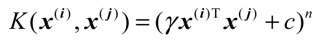
其中γ为正数，c为非负数。我们介绍过的线性核函数K（x（i） ，x（j） ）=x（i） T ，x（j）
是多项式核函数在n=1，γ=1，c=0处的一种特例。在二维空间里，K（x（i） ，x（j） ）=x（i）T ，x（j）
只能表达直线的分隔超平面，而多项式核函数K（x（i） ，x（j） ）=（γx（i）T x（j） +c）n 在n＞1时，可以表达更复杂的、非直线的分隔超平面。
另外一个常用的核函数是高斯核函数 ，其数学表达式为：
如果我们的输入特征是一维的标量，那么高斯核函数对应的形状就是一个反钟形的曲线，其参数σ控制反钟形的宽度，如图8-6所示。
图8-6 高斯核函数
由于K（x（i） ，x（j） ）=Φ（x（i） ）T Φ（x（j） ），经过合适的数学变换，可得高斯核函数对应的特征转换函数为：
注意前面无限多项的累加器其物理意义就是把特征向量转换到无限多维向量空间里，即高斯核函数可以把输入特征向量扩展到无限维空间里 。公式的推导过程会用到泰勒展开式，感兴趣的读者可以在YouTube上搜索Gaussian Kernel Hsuan-Tien Lin，这是林轩田的一个机器学习视频。
接下来看一下高斯核函数对应的预测函数：
其中K（x（i） ，x）是高斯核函数，而αi 只在支持向量对应的样本处不为0，其他的样本为0。由此得知，预测函数是中心点在支持向量处的高斯函数的线性组合，其线性组合的系数为αi y（i） 。因此，高斯核函数也称为RBF（Radial Basis Function）核函数，即反钟形函数的线性组合。
8.2.4 核函数的对比
本节将对我们学习的几个核函数进行对比，看看它们各有哪些优缺点。
1.线性函数
这是我们接触到的最简单的核函数，它直接计算两个输入特征向量的内积。它的优点是简单、运算效率高，因为不涉及复杂的变换；结果容易解释，因为总是能生成一个最简洁的线性分隔超平面。它的缺点也很明显，即对线性不可分的数据集没有很好的办法。
2.多项式核函数
多项式核函数通过多项式来作为特征映射函数，它的优点是可以拟合出复杂的分隔超平面。它的缺点是可选的参数太多，有γ，c，n这3个参数要选择，在实践过程中，选择一组合适的参数会变得比较困难；另外一个缺点是，多项式的阶数n不宜太高，否则会给模型求解带来一些计算的困难。典型地，当x（i）T
x（j） ＜1时，经过n次方运算后，会接近于0，而当x（i）T x（j） ＞1时，经过n次方运算后，又会变得非常大，这样核函数就会变得不够稳定。
3.高斯核函数
高斯核函数可以把输入特征映射到无限多维，所以它会比线性核函数功能上要强大很多，并且没有多项式核函数的数值计算那么困难，因为它的核函数计算出来的值永远在[0，1]之间。高斯核函数还有一个优点是参数容易选择，因为它只有一个参数σ。它的缺点是不容易解释，因为映射到无限多维向量空间这个事情显得太不直观；计算速度比较慢；容易造成过拟合，原因是映射到无限维向量空间，这是个非常复杂的模型，它会试图去拟合所有的样本，从而造成过拟合。
在实践中怎么选择核函数呢？更进一步，逻辑回归算法也可以用来解决分类问题，到底是用逻辑回归算法还是用SVM算法呢？假设n是特征个数；m是训练数据集的样本个数，一般可以按照下面的规则来选择算法。
如果n相对m来说比较大，例如n=10，000，m=10～1000，如文本处理问题，这个时候使用逻辑回归或线性函数的SVM算法都可以；如果n比较小，m中等大小。例如n=1～1000，m=10～10，000，那么可以使用高斯核函数的SVM算法；如果n比较小，m比较大，例如n=1～1000，m=50，000+，那么一般需要增加特征，此时需要使用多项式核函数或高斯核函数的SVM算法。
更一般性的算法选择原则是，针对数据量很大的问题，我们可以选择复杂一点的模型。虽然复杂模型容易造成过拟合，但由于数据量很大，可以有效地弥补过拟合问题。如果数据量比较小，一般需要选择简单一点的模型，否则很容易造成过拟合，此时要特别注意模型是否欠拟合，如果出现了欠拟合，可以使用增加多项式特征的方法纠正欠拟合问题。读到这里，读者的脑海里要想象出一幅过拟合和欠拟合时的学习曲线图。
本章所有的图片都是通过matplotlib库画出来的，感兴趣的读者可以参阅随书代码ch08.01.ipynb。
8.3 scikit-learn里的SVM
scikit-learn里对SVM的算法实现都在包sklearn.svm下面，其中SVC类是用来进行进行分类的任务，SVR是用来进行数值回归任务的。读者可能会有疑问，SVM是不是用来进行分类的算法吗，为什么可以用来进行数值回归？实际上，这只是数学上的一些扩展而已，在计算机里，可以用离散的数值计算来代替连续的数值回归。我们在k-近邻算法里已经看到过这种扩展实现。
我们以SVC为例，首先需要选择SVM的核函数，由参数kernel指定，其中linear表示本章介绍的线性函数，它只能产生直线形状的分隔超平面；poly表示本章介绍的多项式核函数，用它可以构建出复杂形状的分隔超平面；rbf表示高斯核函数。
不同的核函数需要指定不同的参数。针对线性函数，只需要指定参数C，它表示对不符合最大间距规则的样本的惩罚力度，即在8.1.2节介绍的系数R。针对多项式核函数，除了参数C外，还需要指定degree，它表示多项式的阶数。针对高斯核函数，除了参数C外，还需要指定gamma值，这个值对应的是8.2.3节中介绍的高斯核函数公式里的的值。
下面先来看一个最简单的例子。我们生成一个有两个特征、包含两种类别的数据集，然后用线性核函数的SVM算法进行分类：
代码详情
1 | from sklearn import svmfrom sklearn.datasets import make_blobs X, y = make_blobs(n_samples=100, centers=2, random_state=0, cluster_std=0.3)clf = svm.SVC(C=1.0, kernel='linear')clf.fit(X, y) plt.figure(figsize=(12, 4), dpi=144)plot_hyperplane(clf, X, y, h=0.01, title='Maximum Margin Hyperplan') |
输出的图形如图8-7所示，其中带有×标记的点即为支持向量，它保存在模型的support_vectors_里。
此处需要注意的是plot_hyperplane（）函数，其主要功能是画出样本点，同时画出分类区间。它的主要原理是使用numpy.meshgrid（）生成一个坐标矩阵，然后预测坐标矩阵中每个点所属的类别，最后用contourf（）函数，为坐标矩阵中不同类别的点填充不同的颜色。其中，contourf（）是画等高线并填充颜色的函数，具体可查阅matplotlib的官方文档。关于plot_hyperplane（）函数的详细实现，读者可参阅随书代码ch08.02.ipynb。
图8-7 大间距分类算法
接着来看另外一个例子，我们生成一个有两个特征、包含三种类别的数据集，然后分别构造4个SVM算法来拟合数据集，分别是线性核函数、三阶多项式核函数、γ=0.5的高斯核函数，以及γ=0.1的高斯核函数。最后把这4个SVM算法拟合出来的分隔超平面画出来。
代码详情
1 | from sklearn import svmfrom sklearn.datasets import make_blobs X, y = make_blobs(n_samples=100, centers=3, random_state=0, cluster_std=0.8)clf_linear = svm.SVC(C=1.0, kernel='linear')clf_poly = svm.SVC(C=1.0, kernel='poly', degree=3)clf_rbf = svm.SVC(C=1.0, kernel='rbf', gamma=0.5)clf_rbf2 = svm.SVC(C=1.0, kernel='rbf', gamma=0.1) plt.figure(figsize=(10, 10), dpi=144) clfs = [clf_linear, clf_poly, clf_rbf, clf_rbf2]titles = ['Linear Kernel', 'Polynomial Kernel with Degree=3', 'Gaussian Kernel with $\gamma=0.5$', 'Gaussian Kernel with $\gamma=0.1$']for clf, i in zip(clfs, range(len(clfs))): clf.fit(X, y) plt.subplot(2, 2, i+1) plot_hyperplane(clf, X, y, title=titles[i]) |
输出的图形如图8-8所示，其中带有标记的点即为支持向量。
图8-8左上角是线性核函数，它只能拟合出直线分隔超平面。右上角是三阶多项式核函数，它能拟合出复杂曲线分隔超平面。左下角是γ=0.5的高斯核函数，右下角是γ=0.1的高斯核函数，通过调整参数γ的值，可以调整分隔超平面的形状。典型地，γ值太大，越容易造成过拟合，γ值太小，高斯核函数会退化成线性核函数。读者可以修改随书代码ch08.02.ipynb，把gamma值改为100和0.1后看一下输出图形是什么样的。
图8-8 不同的SVM核函数对应的决策边界
思考：
请读者留意图8-8中左下角γ=0.5的高斯核函数的图片，带有ⅹ标记的点是支持向量。我们之前介绍过，离分隔超平面最近的点是支持向量，为什么很多离分隔超平面很远的点，也是支持向量呢？
原因是高斯核函数把输入特征向量映射到了无限维的向量空间里，在映射后的高维向量空间里，这些点其实是离分隔超平面最近的点。当回到二维向量空间中时，这些点“看起来”就不像是距离分隔超平面最近的点了，但实际上它们就是支持向量。
8.4 实例：乳腺癌检测
在第6章中我们使用逻辑回归算法进行了乳腺癌检测模型的学习和训练。本章使用支持向量机来解决这个问题。首先，我们载入数据：
代码详情
1 | # 载入数据from sklearn.datasets import load_breast_cancerfrom sklearn.model_selection import train_test_split cancer = load_breast_cancer()X = cancer.datay = cancer.targetprint('data shape: {0}; no. positive: {1}; no. negative: {2}'.format( X.shape, y[y==1].shape[0], y[y==0].shape[0])) X_train, X_test, y_train, y_test = train_test_split(X, y, test_size=0.2) |
输出如下：
代码详情
1 | data shape: (569, 30); no. positive: 357; no. negative: 212 |
可以看出，我们的数据集很小。高斯核函数太复杂，容易造成过拟合，模型效果应该不会很好。我们先用高斯核函数试一下看与我们猜测的是否一致：
代码详情
1 | from sklearn.svm import SVC clf = SVC(C=1.0, kernel='rbf', gamma=0.1)clf.fit(X_train, y_train)train_score = clf.score(X_train, y_train)test_score = clf.score(X_test, y_test)print('train score: {0}; test score: {1}'.format(train_score, test_score)) |
输出结果如下：
代码详情
1 | train score: 1.0; test score: 0.526315789474 |
训练数据集分数接近满分，而交叉验证数据集的评分很低，这是典型的过拟合现象。代码中选择了gamma参数为0.1，这个值相对已经比较小了。读者可以验证一下，把gamma参数改为0.0001看看是什么结果。
当然，我们完全可以自动来选择参数。第7章介绍过使用GridSearchCV来自动选择参数。我们看看如果使用高斯模型，最优的gamma参数值是多少，其对应的模型交叉验证评分是多少。
代码详情
1 | from common.utils import plot_param_curvefrom sklearn.model_selection import GridSearchCV gammas = np.linspace(0, 0.0003, 30)param_grid = {'gamma': gammas}clf = GridSearchCV(SVC(), param_grid, cv=5)clf.fit(X, y)print("best param: {0}\nbest score: {1}".format(clf.best_params_, clf.best_score_)) plt.figure(figsize=(10, 4), dpi=144)plot_param_curve(plt, gammas, clf.cv_results_, xlabel='gamma'); |
在笔者计算机上的输出结果如下：
代码详情
1 | best param: {'gamma': 0.00011379310344827585}best score: 0.936731107206 |
由此可见，即使是最好的gamma参数下，其平均最优得分也只是0.936731107206。我们选择在gamma为0.01时，画出学习曲线，更直观地观察模型拟合情况。
代码详情
1 | import timefrom common.utils import plot_learning_curvefrom sklearn.model_selection import ShuffleSplit cv = ShuffleSplit(n_splits=10, test_size=0.2, random_state=0)title = 'Learning Curves for Gaussian Kernel' start = time.clock()plt.figure(figsize=(10, 4), dpi=144)plot_learning_curve(plt, SVC(C=1.0, kernel='rbf', gamma=0.01), title, X, y, ylim=(0.5, 1.01), cv=cv) print('elaspe: {0:.6f}'.format(time.clock()-start)) |
画出来的图形如图8-9所示。
图8-9 高斯核函数
这是明显的过拟合现象，交叉验证数据集的评分非常低，且离训练数据集评分非常远。
接下来换一个模型，使用二阶多项式核函数来拟合模型，看看结果如何。
代码详情
1 | from sklearn.svm import SVC clf = SVC(C=1.0, kernel='poly', degree=2)clf.fit(X_train, y_train)train_score = clf.score(X_train, y_train)test_score = clf.score(X_test, y_test)print('train score: {0}; test score: {1}'.format(train_score, test_score)) |
笔者计算机上的输出结果如下：
代码详情
1 | train score: 0.978021978022; test score: 0.947368421053 |
看起来结果好多了。作为对比，我们画出一阶多项式和二阶多项式的学习曲线，观察模型的拟合情况。
代码详情
1 | import timefrom common.utils import plot_learning_curvefrom sklearn.model_selection import ShuffleSplit cv = ShuffleSplit(n_splits=5, test_size=0.2, random_state=0)title = 'Learning Curves with degree={0}'degrees = [1, 2] start = time.clock()plt.figure(figsize=(12, 4), dpi=144)for i in range(len(degrees)): plt.subplot(1, len(degrees), i + 1) plot_learning_curve(plt, SVC(C=1.0, kernel='poly', degree=degrees[i]), title.format(degrees[i]), X, y, ylim=(0.8, 1.01), cv=cv, n_jobs=4) print('elaspe: {0:.6f}'.format(time.clock()-start)) |
其输出的图形如图8-10所示。
图8-10 多项式核函数
从图中可以看出，二阶多项式核函数的拟合效果更好。平均交叉验证数据集评分可达0.950，最高时达到0.975。运行段示例代码的读者需要注意，二阶多项式核函数计算代价很高，在笔者的Macbook Pro上，运行了数分钟之久。
在第6章中，我们使用逻辑回归算法来处理乳腺癌检测问题时，使用二队多项式增加特征，同时使用L1范数作为正则项，其拟合效果比这里的支持向量机效果好。更重要的是，逻辑回归算法的运算效率远远高于二阶多项式核函数的支持向量机算法。当然，这里的支持向量机算法的效果还是比使用L2范数作为正则项的逻辑回归算法好的。由此可见，模型选择和模型参数调优，在工程实践中有着非常重要的作用的。
8.5 复习题
1.一句话总结支持向量机算法的最大特点。
2.在支持向量机里，为什么把类别标识定义为[-1，1]？
3.什么是松弛系数，它有什么作用？
4.一句话总结什么是核函数？什么是相似性函数？两者有什么关系？
5.常用的核函数有哪些？分别有什么特点？
6.运行随书代码ch08.02.ipynb，修改模型的参数，观察结果有什么变化。
7.阅读scikit-learn官方文档，试着用svm.LinearSVC来解决乳腺癌检测问题，并与逻辑回归模型对比看看哪个效果更好。提示：可以尝试指定penalty参数，使用L1范数作为正则项来构造支持向量机模型，并使用PolynomialFeatures来引入二阶多项式特征。
第9章 朴素贝叶斯算法
朴素贝叶斯（Naive Bayers）是一种基于概率统计的分类方法。它在条件独立假设的基础上，使用贝叶斯定理构建算法，在文本处理领域有广泛的应用。本章从条件概率谈起，介绍了贝叶斯定理，帮助读者理解算法原理，接着介绍了概率分布及连续值的处理，最后通过一个文档分类的例子介绍了如何使用朴素贝叶斯算法。本章涵盖的内容如下：
·条件概率及贝叶斯定理；
·朴素贝叶斯算法原理；
·多项式概率分布及高斯分布；
·使用朴素贝叶斯处理文档分类实例。
9.1 算法原理
要讲清楚算法原理，需要先清楚贝叶斯定理，它是一个条件概率公式。
9.1.1 贝叶斯定理
维基百科上有一个有意思的案例。某警察使用一个假冒伪劣的呼气测试仪来测试司机是否醉驾。假设这个仪器有5%的概率会把一个正常的司机判断为醉驾，但对真正醉驾的司机其测试结果是100%准确的。从过往的统计得知，大概有0.1%的司机为醉驾。假设该警察随机拦下一个司机，让他（她）做呼气测试，仪器测试结果为醉驾。仅凭这一结果判断，这位司机真的是醉驾的概率有多高？
90%？50%？真实的结果是不到2%。对，你没看错。如果我们没有通过其他方法（如闻司机身上的酒味），仅凭这个仪器的测试结果来判断，其实准确性是非常低的。
假设我们的样本里有1000人，根据过往的统计数据，这1000位司机里有0.1%的概率为真正醉驾，即有1位是真正醉驾的司机，999位是正常的。这1000位司机均拿这个劣质呼气测试仪来测试，则有多少人会被判断为醉驾？对这位真正醉驾的司机，他（她）无法蒙混过关，而对999位正常的司机，有5%的概率会被误判，所以总共有1+9995%个“倒霉蛋”会被仪器判断为醉驾。由此可得，所有被仪器判断为醉驾的司机里，真正醉驾的概率是1/（1+9995%）=1.96%。
实际上，贝叶斯定理是计算这类条件概率 问题的绝佳方法。我们记P（A|B）表示观察到事件B发生时事件A发生的概率，则贝叶斯定理的数学表达为：
回到例子里，我们记事件A为司机真正醉驾，事件B为仪器显示司机醉驾。则例子里要求解的问题即为P（A|B），即观察到仪器显示司机醉驾（事件B发生）时，司机真正醉驾（事件A发生）的概率是多少。P（A）表示司机真正醉驾的概率，这是先验概率，例子里的数值是0.1%。P（B|A）表示当司机真正醉驾时（事件A发生），仪器显示司机醉驾（事件B发生）的概率是多少，从例子里的数据得知是100%。P（B）表示仪器显示司机醉驾的概率，这里有两部分数据，针对真正醉驾的司机（0.1%），仪器能100%检测出来，因此这部分的数值为0.1%×100%；针对正常的司机（1-0.1%），仪器显示醉驾的概率为（1-0.1%）5%。代入贝叶斯定理即可得：
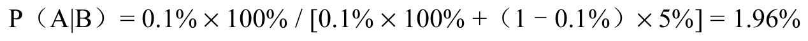
9.1.2 朴素贝叶斯分类法
假设有一个已标记的数据集[x（i） ，y（i） ]，其中y（i） ∈[C1 ,C2 , …,Cb ]，即数据集总共有b个类别； x（i） ∈[x1,x2 , …,xn ] ，即总共有n个输入特征。针对一个新的样本x，我们要预测y的值，即对x进行分类。这是个典型的机器学习里的分类问题。
对我们要求解的问题，使用统计学的语言可以描述为：当观察到输入样本是x时，其所属于的类别y=Ck 的概率，使用条件概率公式表示为：
其中，Ck ∈[C1 ,C2 , …,Cb ]，我们只需要分别求出所有b个类别的概率，然后取概率最大的那个Ck即是x所属的类别。直接求解上述公式比较困难，可以应用贝叶斯定理进行一次变换：
对于一个确定的数据集，Ck ，P（x）都是固定的值。因此：
其中，∝表示成正比的意思。因此，我们只需要求解，针对不同的Ck ∈[C1 ,C2 , …,Cb ] 的情况下，p（Ck ）P（x|Ck
）的最大值即可知道，x属于哪个类别。根据联合概率公式，可得：
对概率统计陌生的读者不要被专业术语吓到了，联合概率表示的是一种概率叠加。例如，你走在路上遇到美女是一个随机事件，美女对你一见钟情是另外一个随机事件，那么你在路上遇到美女且对你一见钟情的概率要怎么计算呢？即P（美女，对你一见钟情）的值是多少呢？使用概率叠加来计算，遇到美女的概率乘以是美女且对你一见钟情的概率（条件概率）。即：
我们从白日梦回到枯燥的数学中。又因为x是有n个特征向量，即x=[x1 ，x2 ，…，xn ]，可得：
根据链式法则及条件概率的定义，可以进一步推导公式：
咦，好像越推导越复杂了。那么是时候用上我们的法宝了。上述推导里，只用了贝叶斯定理，我们的法宝就是前面的定语“朴素
”。朴素指的是条件独立假设，即事件之间没有关联关系。例如，掷一个质地均匀的骰子两次，前后之间出现的数字是独立、不相关的，我们称这两个事件是条件独立的。朴素贝叶斯算法的前提是，输入特征需要满足条件独立假设。即，当i≠j时，xi
和xj 是不相关的，通俗地说就是xi 事件是否发生和xj 没关系。根据条件独立的原则：
有了这个公式，我们就可以简化为：
这样我们的最终推导结果就是：
其中， 是连乘符号。P（Ck ）表示每种类别出现的概率，这个值可以很容易地从数据集里统计出来。P（xi |Ck
）表示当类别为Ck 时，特征xi 出现的概率，这个值也可以从数据集中统计出来。这就是朴素贝叶斯分类法的数学原理。
9.2 一个简单的例子
我们先通过一个简单的例子，来看怎样应用朴素贝叶斯分类法。假设有以下关于驾龄、平均车速和性别的统计数据：
现在观察到一个驾龄为2年的人，平均车速为80。问：这个人的性别是什么？
假设C0 表示女，C1 表示男，x0 表示驾龄，x1 表示平均车速。我们先来计算这个人为女性的概率相对值。根据统计数据，女性司机的概率P（C0
）=5/10=0.5。驾龄为2年的女性司机的概率即P（x0 |C0 ）=1/10=0.1。平均车速为80的女性司机的概率P（x1 |C0
）=1/10=0.1。根据朴素贝叶斯分类法的数学公式：
接着计算这个人为男性的概率相对值。根据统计数据，不难得出男性司机的概率P（C1 ）=5/10=0.5。驾龄为2年的男性司机的概率P（x0 |C1
）=2/10=0.2。平均车速为80的男性司机的概率P（x1 |C1 ）=3/10=0.3。根据朴素贝叶斯分类法的数学公式：

从相对概率来看，这个人是男性的概率是女性的概率的6倍，据此判断这个人是男性。我们也可以从相对概率里算出绝对概率，即这个人是男性的概率是0.03/（0.03+0.005）=0.857。
9.3 概率分布
到目前为止，我们介绍的朴素贝叶斯分类法是根据数据集里的数据，计算出绝对概率来进行求解。再看一遍朴素贝叶斯分类法的数学公式：

其中，P（xi |Ck ）表示在类别Ck 里特征xi
出现的概率。这里有个最大的问题，如果数据集太小，那么从数据集里计算出来的概率偏差将非常严重。例如，观察一个质地均匀的骰子投掷6次的结果是[1，3，1，5，3，3]。质地均匀的骰子每个点出现的概率都是1/6，如果根据观察到的数据集去计算每个点的概率，和真实的概率相差将是非常大的。
怎么解决这个问题呢？答案是使用概率分布来计算概率，而不是从数据集里计算概率。为了讲清楚这个问题，需要从概率统计的基本概念谈起，那些对概率统计比较熟悉的读者可以直接跳过本节内容。
9.3.1 概率统计的基本概念
人的身高是一个连续的随机变量 ，而投掷一个骰子得到的点数则是一个离散随机变量。我们闭着眼睛随便找一个人，问这个人身高是170cm的可能性是多大呢？如果有一个函数，能描述人类身高的可能性，那么直接把170cm代入即可求出这个可能性。这个函数就是概率密度函数，也称为PDF（Probability Density Function）。典型的概率密度函数是高斯分布函数，如人类的身高就满足高斯分布的规律，在后面会详细介绍。
再例如，投掷一个质地均匀的骰子，得到6的概率是多少？大家都知道答案是1/6。假如有一个函数f（x），能描述骰子出现x点数（[
x∈[1,6]）的概率，那么把x代入即可得到概率，这个函数称为概率质量函数 ，即PMF（Probability Mass Function）。那么为什么还要使用概率质量函数呢？一是在数学上追求统一性，二是并不是所有的离散随机变量的概率分布都像投掷一次骰子这么直观。例如投掷6次质地均匀的骰子，得到4个4的概率是多少？相信好学的你会陷入沉思并感叹：这个问题不好算啊。这个时候如果有概率质量函数，就可轻松求解啦。
总结一下，随机变量
分成两种，一种是连续随机变量，另外一种是离散随机变量。概率密度函数描述的是连续随机变量在某个特定值的可能性，概率质量函数描述的是离散随机变量在某个特定值的可能性。而概率分布
则是描述随机变量取值的概率规律。
9.3.2 多项式分布
抛一枚硬币，要么出现正面，要么出现反面（假设硬币不会立起来）。假如出现正面的概率是p，则出现反面的概率就是1-p。符合这种规律的概率分布，称为伯努利分布
（Bernoulli Distribution）。其概率质量函数为：
其中，k
∈[0,1]，p是出现1的概率。例如，一枚质地均匀的硬币被抛一次，得到正面的概率为0.5，这是众所周知的答案。我们代入上述公式，也可以得到相同的结果，即f
(1;0.5)=0.5。
更一般的情况，即不止两种可能性时，假设每种可能性是pi ，则满足 条件的概率分布，称为类别分布（Categorical Distribution）。例如投掷一个骰子，则会出现6种可能性，所有的可能性加起来的概率为1。类别分布的概率质量函数为：
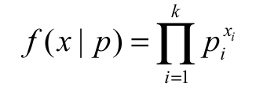
其中， 是连乘符号，k是类别的数量，pi 是第i种类别的概率，xi
当且仅当类别x为类别i时，其值为1，其他情况其值为0。例如，针对质地均匀的骰子，k的值为6，pi
的值为1/6。问：投掷这个骰子得到3的概率是多少？答案是1/6。我们代入概率质量函数验算一下，针对所有i≠3的情况，xi =0，针对i=3的情况，xi =1，所以容易算出f（3|p）=1/6。
停停停，你都快把我绕晕了，这么简单的问题为什么要弄得这么复杂呢？笔者仿佛听到读者在报怨了。前面都是铺垫，接下来介绍的内容才是精华。再往下看，你就能知道我们把问题复杂化的原因，也能看到数学之美。
那我们开始吧。问：一枚质地均匀的硬币被抛10次，出现3次正面的概率是多少？这是个典型的二项式分布
问题。二项式分布指的是把符合伯努利分布的实验做了n次，结果1出现0次，1次，2次…n次的概率分别是多少，它的概率质量函数为：
其中，k是结果1出现的次数，k∈[0,1,…,n]，n是实验的总次数，p是在一次实验中结果1出现的概率。怎么理解这个公式呢？我们总共进行了n次实验，那么出现k次结果1的概率为pk，剩下的必定是结果0的次数，即出现了n-k次，其概率为（1-p）n-k。公式前面的系数表示的是组合，即k次结果1可以是任意的组合，比如可能是前k次是结果1，也可能是最后k次出现的是结果1。回到最初的问题：一枚质地均匀的硬币被抛10次，出现3次正面的概率是多少？代入二项式分布的概率质量函数，得到：
我们再看一个更简单的例子。问：一枚质地均匀的硬币被抛1次，出现0次正面的概率是多少？代入二项式分布的概率质量函数，得到：
其中，0的阶乘为1，即0!=1。结果跟我们预期的相符，当实验只做一次时，二项式分布退化为伯努利分布。
多项式分布 是指满足类别分布的实验，连续做n次后，每种类别出现的特定次数组合的概率分布情况。假设，xi 表示类别i出现的次数，pi
表示类别i在单次实验中出现的概率。当满足前提条件 时，由随机变量xi 构成的随机向量X=[x1 ，…，xk
]满足以下分布函数：
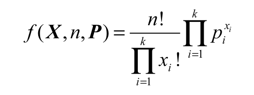
其中，P是由各个类别的概率构成的向量，即P=[p1 ，…，pk
]，k表示类别的总数，n表示实验进行的总次数。理解这个公式也比较简单，可以把理解为按照特定顺序，所有类别出现的某个特定的次数组合的概率，如投6次骰子，出现（1，2，3，4，5，6）这样特定顺序组合的概率。前面的系数表示组合的个数，如投6次骰子，每个点数都出现一次，可以是（1，2，3，4，5，6），也可以是（1，3，2，4，5，6）。
我们看一个例子，同时投掷6个质地均匀的骰子，出现（1，2，3，4，5，6）这种组合的概率是多少？我们可以把这个问题转换成连续6次投掷质地均匀的骰子，每个类别都出现一次的概率。这是个典型的多项式分布
问题，其中随机向量X=[1，1，1，1，1，1]，代入多项式分布的概率质量函数可得：
好了，是时候解决之前那个让你深思的问题了：将质地均匀的骰子投掷6次，得到4个4的概率是多少？我们需要把这个问题转换为二项式分布
问题。投掷1次骰子时，得到4的概率是1/6，得到其他点数（非4）的概率是5/6。现在需要计算投掷6次骰子得到4个4的概率，代入二项式分布的概率质量函数可得：
我们再来算一下同时投掷6个质地均匀的骰子，出现5个1的概率是多少？还是转换为二项式分布问题：
在我国的厦门和台湾地区，中秋博饼是一个盛大的传统活动，相传是郑成功为了缓解士兵的中秋思乡之情发明的一种游戏。很多公司中秋节都会组织中秋博饼活动，奖品从牙膏、牙刷、洗衣粉、食用油到洗发水、购物卡等生活用品样样俱有。往往这个时候员工都会玩得很开心。其规则是，所有参与的玩家轮流同时投掷6个骰子，根据掷出的不同点数组合，发放对应奖项的奖品。游戏设有一个状元、两个对堂及其他数量不等的不同名目的奖项。状元的点数组合是4个4、6个4或者5个相同点数的骰子组合，如5个1、5个2等。如果是顺子，即（1，2，3，4，5，6）的组合，则为对堂。参加过中秋博饼活动的读者经常会有这样的体会：状元奖品早就被博走了，可是对堂奖品却还有今天就从概率的角度来看看为什么会出现这个现象。根据上文例子的计算结果，出现对堂的概率是0.015432099，而出现状元的概率是0.008037551+60.000643004=0.011895575（忽略6个4的超级状元组合）。说明古人在发明这种游戏时，还是充分考虑过概率的，即博出状元奖项的概率还是比对堂要低的。不过，由于对堂有两份奖品，算起来虽然对堂出现的概率比状元高，但需要出现两次才能把全部对堂的奖品消耗完，而其概率又不足状元的两倍。这就解释了为什么往往状元奖项已经被博走了，可是还有对堂奖品的原因。
简单总结一下，二项式分布描述的是多次伯努利实验中，某个结果出现次数的概率。多项式分布描述的是多次进行满足类别分布的实验中，所有类别出现的次数组合的分布。
二项式分布和多项式分布结合朴素贝叶斯算法，经常被用来实现文章分类算法。例如，有一个论坛需要对用户的评论进行过滤，屏蔽不文明的评论。首先需要有一个经过标记的数据集，我们称为语料库。假设使用人工标记的方法对评论进行人工标记，标记为1表示包含不文明用语的评论，标记为0表示正常评论。
假设我们的词库大小为k，则文章中出现的某个词可以看成是一次满足k个类别的类别分布实验。我们知道，一篇评论是由n个词组成的，因此一篇文章可以看成是进行n次符合类别分布的实验后的产物。由此得知，一篇评论文章服从多项式分布，它是词库里的所有词语出现的次数组合构成的随机向量。一般情况下，词库比较大，评论文章只是由少量词组成，所以这个随机向量是很稀疏的，即大部分元素为0。通过分析语料库，我们容易统计出每个词出现不文明评论及正常评论文章里的概率，即pi
的值。同时，针对待预测的评论文章，我们可以统计出词库里的所有词在这篇文章里的出现次数，即xi 的值及评论文章的词语个数n。代入多项式分布的概率质量函数：
我们可以求出，待预测的评论文章构成的随机向量X，其为不文明评论的相对概率。同理也可求出其为正常评论的相对概率，通过比较两个相对概率，就可以对这篇文章输出一个预测值。当然，实际应用中，涉及大量的自然语言处理的手段，包括中文分词技术、词的数学表示等，在此不一一展开。
9.3.3 高斯分布
在前面的车速和性别预测的例子里，对于平均车速，笔者故意给出了离散值，实际上它是一个连续值。这个时候怎么用朴素贝叶斯算法来处理呢？答案是，可以用区间把连续值转换为离散值。例如，我们把[0，40]之间的平均车速作为一个级别，把[40，80]之间的平均车速作为一个级别，再把80以上的车速作为另外一个级别。这样就可以把连续的值变成离散的值，从而使用朴素贝叶斯分类法进行处理。另外一个方法，是使用连续随机变量的概率密度函数，把数值转换为一个相对概率。本节介绍的高斯分布就是这样的方法。
高斯分布（Gaussian Distribution）也称为正态分布（Normal Distribution），是自然界最常见的一种概率密度函数。人的身高满足高斯分布，特别高和特别矮的人出现的相对概率都比较低。人的智商也符合高斯分布，特别聪明的天才和特别笨的人出现的相对概率都比较低。高斯分布的概率密度函数为：
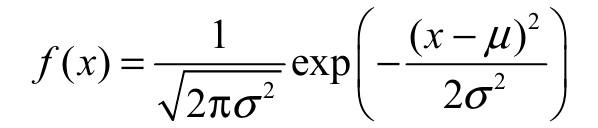
其中，x为随机变量的值，f（x）为随机变量的相对概率，μ为样本的平均值，其决定了高斯分布曲线的位置，σ为标准差，其决定了高斯分布的幅度，σ值越大，分布越分散，值越小，分布越集中。典型的高斯分布如图9-1所示。
图9-1 高斯分布
这里需要提醒读者注意高斯分布的概率密度函数和支持向量机里的高斯核函数的区别。二者的核心数学模型是相同的，但目的不同。
9.4 连续值的处理
首先来看一个来自维基百科的例子。假设，有一组身体特征的统计数据如下：
假设某人身高6英尺、体重130英磅、脚掌8英寸，请问此人的性别是什么？
根据朴素贝叶斯公式：
针对待预测的这个人的数据x，我们只需要分别求出男性和女性的相对概率：
然后取相对概率较高的性别为预测值即可。这里的困难在于，所有的特征都是连续变量，无法根据统计数据计算概率。当然，这里我们可以用区间法，把连续变量转换为离散变量，然后再计算概率。但由于数据量较小，这显然不是个好方法。由于人类身高、体重、脚掌尺寸满足高斯分布，因此更好的办法是使用高斯分布的概率密度函数来求相对概率。
首先，针对男性和女性，分别求出每个特征的平均值和方差：
接着利用高斯分布的概率密度函数，来求解男性身高为6英尺的相对概率：
这里的关键是把连续值（身高）作为输入，通过高斯分布的概率密度函数的处理，直接转换为相对概率。注意这里是相对概率，所以其值大于1并未违反概率论规则。
使用相同的方法，可以算出以下数值：
由于p（Male）=0.5，因此这个人是男性的相对概率为：
使用相同的方法，可以算出这个人为女性的相对概率为5.3778×10-4。从数据可知，这个人为女性的概率比男性的概率高了5个数量级，因此我们判断这个人为女性。
9.5 实例：文档分类
在scikit-learn里，朴素贝叶斯算法在sklearn.naive_bayes包里实现，包含了本章介绍的几种典型的概率分布算法。其中GaussianNB实现了高斯分布的朴素贝叶斯算法，MultinomialNB实现了多项式分布的朴素贝叶斯算法，BernoulliNB实现了伯努利分布的朴素贝叶斯算法。朴素贝叶斯算法在自然语言领域有广泛的应用，本节我们用MultinomialNB来实现文档自动分类。
9.5.1 获取数据集
本节使用的数据集来自mlcomp.org上的20news-18828，读者可以直接访问http://mlcomp.org/datasets/379下载（免费注册后即可下载）。如果你下载了随书代码，也可以在datasets/mlcomp/dataset-379-20news-18828.zip找到笔者下载好的数据集。下载完数据集后，解压到datasets/mlcomp/目录下，解压后会在datasets/mlcomp下生成一个名为379的目录，其目录下包含3个子目录和一个名为metadata的介绍文件：
代码详情
1 | $ cd ~/code/datasets/mlcomp$ ls 379metadata raw test train |
我们将使用train子目录下的文档进行模型训练，然后使用test子目录下的文档进行模型测试。train子目录下包含20个子目录，每个子目录代表一种文档的类型，子目录下的所有文档都是属于目录名称所标识的文档类型。读者可以随意浏览数据集，以便对数据集有一个感性的认识。例如，datasets/mlcomp/379/train/rec.autos/6652-103421是一个讨论汽车主题的帖子：
代码详情
1 | Hahahahahaha. gasp pant Hm, I’m not sure whether the above was just a silly remark or a serious remark. But in case there are some misconceptions,I think Henry Robertson hasn’t updated his data file on Korea since…mid 1970s. Owning a car in Korea is no longer a luxury. Most middle class people in Korea can afford a car and do have at least one car. The problem in Korea,especially in Seoul, is that there are just so many privately-owned cars,as well as taxis and buses, the rush-hour has become a 24 hour phenomenon and that there is no place to park. Last time I heard, back in January, the Kim Administration wanted to legislate a law requireing a potential car owner to provide his or her own parking area, just like they do in Japan.Also, Henry would be glad to know that Hyundai isn’t the only car manufacturer in Korea. Daewoo has always manufactured cars and I believe Kia is back in business as well. Imported cars, such as Mercury Sable are becoming quite popular as well, though they are still quite expensive.Finally, please ignore Henry’s posting about Korean politics and bureaucracy. He’s quite uninformed. |
9.5.2 文档的数学表达
怎样把一个文档表达为计算机可以理解并处理的信息，是自然语言处理中的一个重要课题，完整的内容可以写成鸿篇巨著。本节简单介绍TF-IDF的原理，以便读者更好地理解本文介绍的实例。
TF-IDF是一种统计方法，用以评估一个词语对于一份文档的重要程度。TF表示词频 （Term Frequency），对一份文档而言，词频是特定词语在这篇文档里出现的次数除以文档的词语总数。例如，一篇文档总共有1000个词，其中“朴素贝叶斯”出现了5次，“的”出现了25次，“应用”出现了12次，那么它们的词频分别是0.005、0.025和0.012。
IDF表示一个词的逆向文档频率指数 （Inverse Document Frequency），可以由总文档数目除以包含该词语的文档的数目，再将得到的商取对数得到，它表达的是词语的权重指数。例如，我们的数据集总共有10000篇文档，其中“朴素贝叶斯”只出现在10篇文档中，则其权重指数
“的”在所有的文档中都出现过，则其权重指数IDF=log（1）=0。“应用”在1000篇文档中出现，则其权重指数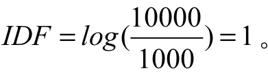
计算出每个词的词频和权重指数后，两者相乘，即可得到这个词在文档中的重要程度。词语的重要性随着它在文档中出现的次数呈正比例增加，但同时会随着它在语料库中出现的频率呈反比下降。关于TF-IDF在搜索引擎上的应用，可参阅吴军老师的《数学之美》里的《如何确定网页和查询的相关性》一文。
有了TF-IDF这个工具，我们就可以把一篇文档转换为一个向量。首先，可以从数据集（在自然语言处理领域也称为corpus，即语料库）里提取出所有出现的词语，我们称为词典。假设词典里总共有10000个词语，则每个文档都可转化为一个10000维的向量。其次，针对我们要转换的文档里出现的每个词语，都去计算其TF-IDF的值，并把这个值填入文档向量里这个词所对应的元素上。这样就完成了把一篇文档转换为一个向量的过程。一个文档往往只会由词典里的一小部分词语构成，这就意味着这个向量里的大部分元素都是0。
所幸，上述过程不需要我们自己写代码去完成，scikit-learn软件包里实现了把文档转换为向量的过程。首先，把训练用的语料库读入内存：
代码详情
1 | from time import timefrom sklearn.datasets import load_files print("loading train dataset ...")t = time()news_train = load_files('datasets/mlcomp/379/train')print("summary: {0} documents in {1} categories.".format( len(news_train.data), len(news_train.target_names)))print("done in {0} seconds".format(time() - t)) |
其中，datasets/mlcomp/379/train目录下放的就是我们的语料库，其中包含20个子目录，每个子目录的名字表示的是文档的类别，子目录下包含这种类别的所有文档。load_files（）函数会从这个目录里把所有的文档都读入内存，并且自动根据所在的子目录名称打上标签。其中，news_train.data是一个数组，里面包含了所有文档的文本信息。news_train.target也是一个数组，包含了所有文档所属的类别，而news_train.target_names则是类别的名称，因此，如果我们想知道第一篇文档所属的类别名称，只需要通过代码news_train.target_names[news_train.target[0]]即可得到。
上述代码在笔者计算机上的输出如下：
代码详情
1 | loading train dataset ...summary: 13180 documents in 20 categories.done in 0.212177991867 seconds |
不难看到，我们的语料库里总共有13180个文档，其中分成20个类别。接着需要把这些文档全部转换为由TF-IDF表达的权重信息构成的向量：
代码详情
1 | from sklearn.feature_extraction.text import TfidfVectorizer print("vectorizing train dataset ...")t = time()vectorizer = TfidfVectorizer(encoding='latin-1')X_train = vectorizer.fit_transform((d for d in news_train.data))print("n_samples: %d, n_features: %d" % X_train.shape)print("number of non-zero features in sample [{0}]: {1}".format( news_train.filenames[0], X_train[0].getnnz()))print("done in {0} seconds".format(time() - t)) |
其中，TfidfVectorizer类是用来把所有的文档转换为矩阵，该矩阵每行都代表一个文档，一行中的每个元素代表一个对应的词语的重要性，词语的重要性由TF-IDF来表示。熟悉scikit-learn API的读者应该清楚，其fit_transform（）方法是fit（）和transform（）合并起来。其中，fit（）会先完成语料库分析、提取词典等操作，transform（）会把对每篇文档转换为向量，最终构成一个矩阵，保存在X_train变量里。这段代码在笔者计算机上的输出如下：
代码详情
1 | vectorizing train dataset ...n_samples: 13180, n_features: 130274number of non-zero features in sample [datasets/mlcomp/379/train/talk.politics.misc/17860-178992]: 108done in 4.15024495125 seconds |
由程序的输出可以知道，我们的词典总共有130274个词语，即每篇文档都可转换为一个130274维的向量。第一篇文档中，只有108个非零元素，即这篇文档总共由108个不重复的单词组成，在这篇文档中出现的这108个单词的TF-IDF值会被计算出来，并保存在向量中的指定位置上。X_train是一个维度为13180130274的稀疏矩阵。
9.5.3 模型训练
费了好些功夫，终于把文档数据转换为scikit-learn里典型的训练数据集矩阵：矩阵的每一行表示一个数据样本，矩阵的每一列表示一个特征。然后可以直接使用MultinomialNB对数据集进行训练：
代码详情
1 | from sklearn.naive_bayes import MultinomialNB print("traning models ...".format(time() - t))t = time()y_train = news_train.targetclf = MultinomialNB(alpha=0.0001)clf.fit(X_train, y_train)train_score = clf.score(X_train, y_train)print("train score: {0}".format(train_score))print("done in {0} seconds".format(time() - t)) |
其中，alpha表示平滑参数，其值越小，越容易造成过拟合，值太大，容易造成欠拟合，具体可参阅复习题的内容。这段代码在笔者计算机上的输出如下：
代码详情
1 | traning models ...train score: 0.997875569044done in 0.274363040924 seconds |
接着，我们加载测试数据集，并用一篇文档来预测其是否准确。测试数据集在datasets/mlcomp/379/test目录下，我们用前面介绍的相同的方法先加载数据集：
代码详情
1 | print("loading test dataset ...")t = time()news_test = load_files('datasets/mlcomp/379/test')print("summary: {0} documents in {1} categories.".format( len(news_test.data), len(news_test.target_names)))print("done in {0} seconds".format(time() - t)) |
笔者计算机上的输出如下：
代码详情
1 | loading test dataset ...summary: 5648 documents in 20 categories.done in 0.117918014526 seconds |
可见，我们的测试数据集共有5648篇文档。接着，我们把文档向量化：
代码详情
1 | print("vectorizing test dataset ...")t = time()X_test = vectorizer.transform((d for d in news_test.data))y_test = news_test.targetprint("n_samples: %d, n_features: %d" % X_test.shape)print("number of non-zero features in sample [{0}]: {1}".format( news_test.filenames[0], X_test[0].getnnz()))print("done in %fs" % (time() - t)) |
这里需要注意，vectorizer变量是我们处理训练数据集时用到的向量化的类的实例，此处我们只需要调用transform（）进行TF-IDF数值计算即可，不需要再调用fit（）进行语料库分析了。这段代码在笔者计算机上的输出如下：
代码详情
1 | vectorizing test dataset ...n_samples: 5648, n_features: 130274number of non-zero features in sample [datasets/mlcomp/379/test/rec.autos/7429-103268]: 61done in 2.915759s |
这样，我们的测试数据集也转换为了一个维度为5648130274的稀疏矩阵。可以取测试数据集里的第一篇文档初步验证一下，看看训练出来的模型能否正确地预测这个文档所属的类别：
代码详情
1 | pred = clf.predict(X_test[0])print("predict: {0} is in category {1}".format( news_test.filenames[0], news_test.target_names[pred[0]]))print("actually: {0} is in category {1}".format( news_test.filenames[0], news_test.target_names[news_test.target[0]])) |
这段代码在笔者计算机上的输出如下：
代码详情
1 | predict: datasets/mlcomp/379/test/rec.autos/7429-103268 is in category rec.autosactually: datasets/mlcomp/379/test/rec.autos/7429-103268 is in category rec.autos |
看来预测的结果和实际结果是相符的。
9.5.4 模型评价
虽然通过验证，说明我们训练的模型是可用的，但是不能通过一个样本的预测来评价模型的准确性。我们需要对模型有个全方位的评价，所幸scikit-learn软件包提供了全方位的模型评价工具。
首先需要对测试数据集进行预测：
代码详情
1 | print("predicting test dataset ...")t0 = time()pred = clf.predict(X_test)print("done in %fs" % (time() - t0)) |
笔者计算机上的输出如下：
代码详情
1 | predicting test dataset ...done in 0.090978s |
接着使用classification_report（）函数来查看一下针对每个类别的预测准确性：
代码详情
1 | from sklearn.metrics import classification_report print("classification report on test set for classifier:")print(clf)print(classification_report(y_test, pred, target_names=news_test.target_names)) |
笔者计算机上的输出如下：
代码详情
1 | classification report on test set for classifier:MultinomialNB(alpha=0.0001, class_prior=None, fit_prior=True) precision recall f1-score support alt.atheism 0.90 0.91 0.91 245 comp.graphics 0.80 0.90 0.85 298 comp.os.ms-windows.misc 0.82 0.79 0.80 292comp.sys.ibm.pc.hardware 0.81 0.80 0.81 301 comp.sys.mac.hardware 0.90 0.91 0.91 256 comp.windows.x 0.88 0.88 0.88 297 misc.forsale 0.87 0.81 0.84 290 rec.autos 0.92 0.93 0.92 324 rec.motorcycles 0.96 0.96 0.96 294 rec.sport.baseball 0.97 0.94 0.96 315 rec.sport.hockey 0.96 0.99 0.98 302 sci.crypt 0.95 0.96 0.95 297 sci.electronics 0.91 0.85 0.88 313 sci.med 0.96 0.96 0.96 277 sci.space 0.94 0.97 0.96 305 soc.religion.christian 0.93 0.96 0.94 293 talk.politics.guns 0.91 0.96 0.93 246 talk.politics.mideast 0.96 0.98 0.97 296 talk.politics.misc 0.90 0.90 0.90 236 talk.religion.misc 0.89 0.78 0.83 171 avg / total 0.91 0.91 0.91 5648 |
从输出结果中可以看出，针对每种类别都统计了查准率、召回率和F1-Score（忘记这些概率的读者，可查阅第3章的内容）。此外，还可以通过confusion_matrix（）函数生成混淆矩阵，观察每种类别被错误分类的情况。例如，这些被错误分类的文档是被错误分类到哪些类别里的：
代码详情
1 | from sklearn.metrics import confusion_matrix cm = confusion_matrix(y_test, pred)print("confusion matrix:")print(cm) |
笔者计算机上的输出如下：
代码详情
1 | confusion matrix:[[224 0 0 0 0 0 0 0 0 0 0 0 0 0 2 5 0 0 1 13] [1 267 5 5 2 8 1 1 0 0 0 2 3 2 1 0 0 0 0 0] [1 13 230 24 4 10 5 0 0 0 0 1 2 1 0 0 0 0 1 0] [0 9 21 242 7 2 10 1 0 0 1 1 7 0 0 0 0 0 0 0] [0 1 5 5 233 2 2 2 1 0 0 3 1 0 1 0 0 0 0 0] [0 20 6 3 1 260 0 0 0 2 0 1 0 0 2 0 2 0 0 0] [0 2 5 12 3 1 235 10 2 3 1 0 7 0 2 0 2 1 4 0] [0 1 0 0 1 0 8 300 4 1 0 0 1 2 3 0 2 0 1 0] [0 1 0 0 0 2 2 3 283 0 0 0 1 0 0 0 0 0 1 1] [0 1 1 0 1 2 1 2 0 297 8 1 0 1 0 0 0 0 0 0] [0 0 0 0 0 0 0 0 2 2 298 0 0 0 0 0 0 0 0 0] [0 1 2 0 0 1 1 0 0 0 0 284 2 1 0 0 2 1 2 0] [0 11 3 5 4 2 4 5 1 1 0 4 266 1 4 0 1 0 1 0] [1 1 0 1 0 2 1 0 0 0 0 0 1 266 2 1 0 0 1 0] [0 3 0 0 1 1 0 0 0 0 0 1 0 1 296 0 1 0 1 0] [3 1 0 1 0 0 0 0 0 0 1 0 0 2 1 280 0 1 1 2] [1 0 2 0 0 0 0 0 1 0 0 0 0 0 0 0 236 1 4 1] [1 0 0 0 0 1 0 0 0 0 0 0 0 0 0 3 0 290 1 0] [2 1 0 0 1 1 0 1 0 0 0 0 0 0 0 1 10 7 212 0] [16 0 0 0 0 0 0 0 0 0 0 0 0 0 0 12 4 1 4 134]] |
从第一行数据中可以看出，类别0（alt.atheism）的文档，有13个被错误地分类到类别19（talk.religion.misc）里。当然，我们还可以把混淆矩阵进行数据可视化处理：
代码详情
1 | # Show confusion matrixplt.figure(figsize=(8, 8), dpi=144)plt.title('Confusion matrix of the classifier')ax = plt.gca()ax.spines['right'].set_color('none')ax.spines['top'].set_color('none')ax.spines['bottom'].set_color('none')ax.spines['left'].set_color('none')ax.xaxis.set_ticks_position('none')ax.yaxis.set_ticks_position('none')ax.set_xticklabels([])ax.set_yticklabels([])plt.matshow(cm, fignum=1, cmap='gray')plt.colorbar(); |
笔者计算机上的输出如图9-2所示。
图9-2 混淆矩阵
除对角线外，其他地方颜色越浅，说明此处错误越多。通过这些数据，我们可以详细分析样本数据，找出为什么某种类别会被错误地分类到另一种类别里，从而进一步优化模型。本节介绍的实例在随书代码ch09.02.ipynb里。
9.6 复习题
1.什么是贝叶斯定理？
2.朴素贝叶斯分类法的数学原理是什么？其中朴素二字意味着什么？
3.什么是二项式分布？
4.多项式分布有什么特点？
5.高斯分布的概率密度函数在二维坐标轴上的形状是什么样的？
6.使用朴素贝叶斯分类法时，使用概率分布函数来计算概率，与从数据集里直接统计出概率相比，有什么优点？
7.运行本章实例的随书代码ch09.02.ipynb，请画出alpha=0.0001的学习曲线。
8.使用sklearn.model_selection.GridSearchCV类，给算法参数alpha选择一个最合适的值。提示：读者可参阅第7章的相关内容。
第10章 PCA算法
PCA是Principal Component Analysis的缩写，中文称为主成分分析法。它是一种维数约减（Dimensionality Reduction）算法，即把高维度数据 在损失最小 的情况下转换为低维度数据
的算法。显然，PCA可以用来对数据进行压缩，可以在可控的失真范围内提高运算速度。本章涵盖的内容如下：
·PCA算法的原理及运算步骤；
·使用Numpy实现简化版的PCA算法，并与scikit-learn的结果进行比较；
·PCA的物理含义；
·PCA的数据还原率及应用；
·通过一个人脸识别程序观察PCA的重要作用实例。
10.1 算法原理
我们先从最简单的情况谈起。假设需要把一个二维数据减为一维数据，要怎么做呢？如图10-1所示，我们可以想办法找出一个向量u（1），以便让二维数据的点（方形点）到这个向量所在的直线上的平均距离最短 ，即投射误差最小。
这样就可以在失真最小的情况下，把二维数据转换为向量u（1） 所在直线上的一维数据。再进一步，假如需要把三维数据降为二维数据时，我们需要找出两个向量u（1），u（2） ，以便让三维数据的点在这两个向量所决定的平面上的投射误差最小。
如果从数学角度来一般地描述PCA算法就是，当需要从n维数据降为k维数据时，需要找出k个向量u（1） ，u（2） ，…，u（k），把n维的数据投射到这k个向量决定的线性空间里，最终使投射误差最小化 的过程。
思考： 什么情况下，进行PCA运算时误差为0？如图10-1所示，当这些二维数据在同一条直线上时，进行PCA运算后，误差为0。
问题来了，怎样找出投射误差最小的k个向量呢？要完整地用数学公式推导出这个方法，涉及较多高级线性代数的知识我们就此略过。感兴趣的读者可进一步阅读本章扩展阅读部分的内容。下面我们直接介绍PCA算法求解的一般步骤。

图10-1 二维转一维
假设有一个数据集，用m×n维的矩阵A表示。矩阵中每一行表示一个样本，每一列表示一个特征，总共有m个样本，每个样本有n个特征。我们的目标是减少特征个数，只保留最重要的k个特征。
10.1.1 数据归一化和缩放
数据归一化和缩放是一种数学技巧，旨在提高PCA运算时的效率。数据归一化的目标是使特征的均值为0。数据归一化公式为：
其中，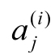 是指i个样本的第j个特征的值，μj
表示的是第j个特征的均值。当不同的特征值不在同一个数量级上的时候，还需要对数据进行缩放。数据归一化再缩放的公式为：
其中，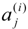 是指i个样本的第j个特征的值，μj 表示的是第j个特征的均值，sj 表示第j个特征的范围，即
10.1.2 计算协方差矩阵的特征向量
针对预处理后的矩阵X，先计算其协方差矩阵 （Covariance Matrix）：
其中，Σ表示协方差矩阵，用大写的Sigma表示，大写的Sigma和累加运算符看起来几乎一样，但这里其实是一个数学符号而已，不是累加运算。计算结果Σ将是一个n×n的矩阵。
接着通过奇异值分解来计算协方差矩阵的特征向量 （eigenvectors）：
其中，svd是奇异值分解（Singular Value Decomposition）运算，是高级线性代数的内容。经过奇异值分解后，有3个返回值，其中矩阵U是个n×n的矩阵，如果我们选择U的列作为向量，那么我们将得到n个列向量u（1），u（2） ，…，u（n） ，这些向量就是协方差矩阵的特征向量。它表示的物理意义是，协方差矩阵Σ可以由这些特征向量进行线性组合得到。
10.1.3 数据降维和恢复
得到特征矩阵后，就可以对数据进行降维处理了。假设降维前的值为x（i） ，降维后为z （i） ，那么：
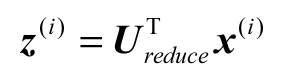
其中，Ureduce =[u（1） ，u（2） ，…，u（k） ]，它选取自矩阵U的前k个向量，Ureduce 称为主成分特征矩阵，它是数据降维和恢复的关键中间变量。看一下数据维度，Ureduce 是n×k的矩阵，因此 是k×n的矩阵，x（i）
是n×1的向量，因此 z （i） 是k×1的向量。这样即完成了数据的降维操作。
也可以用矩阵运算一次性转换多个向量，提高效率。假设X是行向量x（i） 组成的矩阵，则：
其中，X是m×n的矩阵，因此降维后的矩阵Z也是一个m×k的矩阵。
从物理意义角度来看，Z(i) 就是x（i） 在Ureduce
构成的线性空间投射，并且其投射误差最小。要从数学上证明这个结论，将是一个非常复杂的过程。对其原理感兴趣的读者可以参阅本章的扩展阅读。
数据降维后，怎样恢复呢？从前面的计算公式我们知道，降维的数据计算公式 所以，如果要还原数据，可以使用下面的公式：
其中，Ureduce 是n×k维矩阵，Z(i) 是k维列向量。这样算出来的x（i） 就是n维列向量。
矩阵化数据恢复运算公式为：
其中，Xapprox 是还原回来的数据，是一个m×n的矩阵，每行表示一个训练样例。Z是一个m×k的矩阵，是降维后的数据。
10.2 PCA算法示例
假设我们的数据集总共有5个记录，每个记录有2个特征，这样构成的矩阵A为：
我们的目标是把二维数据降为一维数据。为了更好地理解PCA的计算过程，分别使用Numpy和sklearn对同一个数据进行PCA降维处理。
10.2.1 使用Numpy模拟PCA计算过程
下面我们使用Numpy来模拟PCA降维的过程。首先需要对数据进行预处理：
代码详情
1 | A = np.array([[3, 2000], [2, 3000], [4, 5000], [5, 8000], [1, 2000]], dtype='float')# 数据归一化mean = np.mean(A, axis=0)norm = A - mean# 数据缩放scope = np.max(norm, axis=0) - np.min(norm, axis=0)norm = norm / scopenorm |
由于两个特征的均值不在同一个数量级，我们同时对数据进行了缩放。在笔者的计算机上输出如下：
代码详情
1 | array([[ 0. , -0.33333333], [-0.25 , -0.16666667], [ 0.25 , 0.16666667], [ 0.5 , 0.66666667], [-0.5 , -0.33333333]]) |
接着对协方差矩阵进行奇异值分解，求解其特征向量：
代码详情
1 | U, S, V = np.linalg.svd(np.dot(norm.T, norm))U |
在笔者的计算机上的输出如下：
代码详情
1 | array([[-0.67710949, -0.73588229], [-0.73588229, 0.67710949]]) |
由于需要把二维数据降为一维，因此只取特征矩阵的第一列来构造出Ureduce：
代码详情
1 | U_reduce = U[:, 0].reshape(2,1)U_reduce |
其输出如下：
代码详情
1 | array([[-0.67710949], [-0.73588229]]) |
有了主成份特征矩阵，就可以对数据进行降维了：
代码详情
1 | R = np.dot(norm, U_reduce)R |
其输出如下：
代码详情
1 | array([[ 0.2452941 ], [ 0.29192442], [-0.29192442], [-0.82914294], [ 0.58384884]]) |
这样就把二维的数据降维为一维的数据了。如果需要还原数据，依照PCA数据恢复的计算公式，可得：
代码详情
1 | Z = np.dot(R, U_reduce.T)Z |
其输出如下：
代码详情
1 | array([[-0.16609096, -0.18050758], [-0.19766479, -0.21482201], [ 0.19766479, 0.21482201], [ 0.56142055, 0.6101516 ], [-0.39532959, -0.42964402]]) |
由于我们在数据预处理阶段对数据进行了归一化，并且做了缩放处理，所以需要进一步还原才能得到原始数据，这一步是数据预处理的逆运算。
代码详情
1 | np.multiply(Z, scope) + mean |
其中，numpy.multiply是矩阵的点乘运算，即对应的元素相乘。对矩阵基础不熟悉的读者，可以搜索矩阵点乘和叉乘的区别。上述代码的输出如下：
代码详情
1 | array([[ 2.33563616e+00, 2.91695452e+03], [ 2.20934082e+00, 2.71106794e+03], [ 3.79065918e+00, 5.28893206e+03], [ 5.24568220e+00, 7.66090960e+03], [ 1.41868164e+00, 1.42213588e+03]]) |
与原始矩阵A相比，恢复后的数据还是存在一定程度的失真，这种失真是不可避免的。个别读者可能会对2.91695452e+03数值感到奇怪，实际上它是一种科学计数法，e+03表示的是10的3次方，其表示的数值是2916.95452。
10.2.2 使用sklearn进行PCA降维运算
在sklearn工具包里，类sklearn.decomposition.PCA实现了PCA算法，使用方便，不需要了解具体的PCA运算步骤。但需要注意的是，数据的预处理需要自己完成，其PCA算法实现本身不进行数据预处理（归一化和缩放）。此处，我们选择MinMaxScaler类进行数据预处理。
代码详情
1 | from sklearn.decomposition import PCAfrom sklearn.pipeline import Pipelinefrom sklearn.preprocessing import MinMaxScaler def std_PCA(**argv): scaler = MinMaxScaler() pca = PCA(**argv) pipeline = Pipeline([('scaler', scaler), ('pca', pca)]) return pipeline pca = std_PCA(n_components=1)R2 = pca.fit_transform(A)R2 |
阅读过前面章节的读者，对Pipeline应该不会陌生，它的作用是把数据预处理和PCA算法组成一个串行流水线。这段代码在笔者计算机上的输出如下：
代码详情
1 | array([[-0.2452941 ], [-0.29192442], [ 0.29192442], [ 0.82914294], [-0.58384884]]) |
这个输出值就是矩阵A经过预处理及PCA降维后的数值。细心的读者会发现，此处的输出和10.2.1节使用Numpy降维后的输出刚好符号相反。这其实不是错误，只是降维后大家选择的坐标方向不同而已。
接着我们在sklearn里把数据恢复回来：
代码详情
1 | pca.inverse_transform(R2) |
这里的pca是一个Pipeline实例，其逆运算inverse_transform（）是逐级进行的，即先进行PCA还原，再执行预处理的逆运算。具体来说就是先调用PCA.inverse_transform（），然后再调用MinMaxScaler.inverse_transform（）。其输出如下：
代码详情
1 | array([[ 2.33563616e+00, 2.91695452e+03], [ 2.20934082e+00, 2.71106794e+03], [ 3.79065918e+00, 5.28893206e+03], [ 5.24568220e+00, 7.66090960e+03], [ 1.41868164e+00, 1.42213588e+03]]) |
读者可以对比一下，这里的输出和10.2.1节使用Numpy计算PCA时还原回来的数据是一致的。
10.2.3 PCA的物理含义
我们可以把前面例子中的数据在一个坐标轴上全部画出来，从而仔细地观察PCA降维过程的物理含义，如图10-2所示。
图10-2 PCA的物理含义
图中正方形的点是原始数据经过预处理后（归一化、缩放）的数据，圆形的点是从一维恢复到二维后的数据。同时，我们画出主成分特征向量u（1） ，u（2），根据图10-2的直观印象，介绍几个有意思的结论：首先，圆形点实际上就是方形点在向量u（1）
所在的直线上的投射点，所谓的降维，实际上就是方形的点在主成分特征向量 u（1）
上的投影。所谓的PCA数据恢复，并不是真正的恢复，只是把降维后的坐标转换为原坐标系中的坐标而已。针对我们的例子，只是把由向量u（1）
决定的一维坐标系中的坐标转换为原始二维坐标系中的坐标。其次，主成分特征向量u（1） ，u（2）
是相互垂直的。再次，方形点和圆形点之间的距离，就是PCA数据降维后的误差。
建议读者阅读10.02.ipynb代码，画出图10-2所示的图，从而理解PCA降维背后的物理含义。
10.3 PCA的数据还原率及应用
PCA算法可以用来对数据进行压缩，可以在可控的失真范围内提高运算速度。
10.3.1 数据还原率
使用PCA对数据进行压缩时，涉及失真的度量问题，即压缩后的数据能在多大程度上还原出原数据，我们称这一指标为数据还原率，用百分比表示。假设我们要求失真度不超过1%，即数据还原率达到99%，怎样来实现这个要求呢？k是主成分分析法中主成分的个数。可以用下面的公式作为约束条件，从而选择合适的误差范围下，最合适的k值：
其中，分子部分表示平均投射误差的平方；分母部分表示所有训练样例到原点距离的平均值。这里的物理意义用术语可以描述为99%的数据真实性被保留下来了。简单地理解为压缩后的数据还原出原数据的准确度为99%。另外，常用的比率还有0.05，这个时候数据还原率就是95%。在实际应用中，可以根据要解决问题的场景来决定这个比率。
假设我们的还原率要求是99%，那么用下面的算法来选择参数k：
（1）让k=1。
（2）运行PCA算法，计算出
（3）利用计算投射误差率，并判断是否满足要求，如果不满足要求，k=k+1，继续步骤（2）；如果满足要求，k即是我们选择的参数。
这个算法较容易理解，但实际上效率非常低，因为每做一次循环都需要运行一遍PCA算法。另一个更高效的方法是，利用协方差矩阵进行奇异值分解返回的S矩阵：[U,S,V]=svd(Σ)。其中，S是个nx
n对角矩阵，即只有对角线上的值非零时其他元素均为0。
从数学上可以证明，投射误差率也可以使用下面的公式计算：
这样运算效率大大提高了，我们只需要进行一次svd运算即可。
10.3.2 加快监督机器学习算法的运算速度
PCA的一个典型应用是用来加快监督学习的速度 。
例如，我们有m个训练数据(x(1) ,y(1) )，(x(2) ,y(2) ),…,(x(m) ,y(m) ),其中，x（1）
是10000维的数据，想像一下，如果这是个图片分类问题，如果输入的图片是100x100分辨率的，那么我们就有10000维的输入数据。
使用PCA来加快算法运算速度时，我们把输入数据分解出来x（1） ，x（2） ，…，x（m），然后运用PCA算法对输入数据进行降维压缩，得到降维后的数据z（1） ，z（2） ，…，z（m） ，最后得到新的训练样例（z（1） ，y（1）
），（z（2） ，y（2） ），（z（m） ，y（m） ）。利用新的训练样例训练出关于压缩后的变量z的预测函数hθ （z）。
思考： 针对图片分类问题，使用PCA算法进行数据降维，与直接把图片进行缩放处理相比，有什么异同点？
需要注意，PCA算法只用来处理训练样例，运行PCA算法得到的转换参数Ureduce 可以用来对交叉验证数据集进行转换。当然，还需要相应地对数据进行归一化处理或对数据进行缩放。
10.4 实例：人脸识别
本节我们使用英国剑桥AT&T实验室的研究人员自拍的一组照片（AT&TLaboratories Cambridge），来开发一个特定的人脸识别系统。人脸识别，本质上是个分类问题，我们需要把人脸图片当成训练数据集，对模型进行训练。训练好的模型，就可以对新的人脸照片进行类别预测。这就是人脸识别系统的原理。
10.4.1 加载数据集
读者可以到数据集的主页http://www.cl.cam.ac.uk/research/dtg/attarchive/facesataglance.html，查看数据集里所有400张照片的缩略图。数据集总共包含40位人员的照片，每个人10张照片。读者可以在代码里下载数据集，也可以直接使用笔者下载好的数据集。笔者下载好的数据集在随书代码目录datasets/olivetti.pkz下。
下载完照片，就可以使用下面的代码来加载这些照片了：
代码详情
1 | import timeimport loggingfrom sklearn.datasets import fetch_olivetti_faces logging.basicConfig(level=logging.INFO, format='%(asctime)s %(message)s') data_home='datasets/'logging.info('Start to load dataset')faces = fetch_olivetti_faces(data_home=data_home)logging.info('Done with load dataset') |
加载的图片数据集保存在faces变量里，scikit-learn已经替我们把每张照片做了初步的处理，剪裁成64×64大小且人脸居中显示。这一步至关重要，否则我们的模型将被大量的噪声数据，即图片背景干扰。因为人脸识别的关键是五官纹理和特征，每张照片的背景都不同，人的发型也可能经常变化，这些特征都应该尽量排队在输入特征之外。最后，要成功加载数据集，还需要安装Python的图片处理工具包Pillow，否则无法对图片进行解码，读者可参阅第2章开发环境搭建中的内容。
成功加载数据后，其data里保存的就是按照scikit-learn要求的训练数据集，target里保存的就是类别目标索引。我们通过下面的代码，将数据集的概要信息显示出来：
代码详情
1 | X = faces.datay = faces.targettargets = np.unique(faces.target)target_names = np.array(["c%d" % t for t in targets])n_targets = target_names.shape[0]n_samples, h, w = faces.images.shapeprint('Sample count: {}\nTarget count: {}'.format(n_samples, n_targets))print('Image size: {}x{}\nDataset shape: {}\n'.format(w, h, X.shape)) |
笔者计算机上的输出如下：
代码详情
1 | Sample count: 400Target count: 40Image size: 64x64Dataset shape: (400, 4096) |
从输出可知，总共有40位人物的照片，图片总数是400张，输入特征有4096个。为了后续区分不同的人物，我们用索引号给目标人物命名，并保存在变量target_names里。为了更直观地观察数据，从每个人物的照片里随机选择一张显示出来。先定义一个函数来显示照片阵列：
代码详情
1 | def plot_gallery(images, titles, h, w, n_row=2, n_col=5): """显示图片阵列""" plt.figure(figsize=(2 * n_col, 2.2 * n_row), dpi=144) plt.subplots_adjust(bottom=0, left=.01, right=.99, top=.90, hspace=.01) for i in range(n_row * n_col): plt.subplot(n_row, n_col, i + 1) plt.imshow(images[i].reshape((h, w)), cmap=plt.cm.gray) plt.title(titles[i]) plt.axis('off') |
输入参数images是一个二维数据，每一行都是一个图片数据。在加载数据时，fetch_olivetti_faces（）函数已经帮我们做了预处理，图片的每个像素的RGB值都转换成了[0，1]的浮点数。因此，我们画出来的照片将是黑白的，而不是彩色的。在图片识别领域，一般情况下用黑白照片就可以了，可以减少计算量，也会让模型更准确。
接着分成两行显示出这些人物的照片：
代码详情
1 | n_row = 2n_col = 6 sample_images = Nonesample_titles = []for i in range(n_targets): people_images = X[y==i] people_sample_index = np.random.randint(0, people_images.shape[0], 1) people_sample_image = people_images[people_sample_index, :] if sample_images is not None: sample_images = np.concatenate((sample_images, people_sample_ image), axis=0) else: sample_images = people_sample_image sample_titles.append(target_names[i]) plot_gallery(sample_images, sample_titles, h, w, n_row, n_col) |
代码中，X[y==i]可以选择出属于特定人物的所有照片，随机选择出来的照片都放在sample_images数组对象里，最后使用我们之前定义的函数plot_gallery（）把照片画出来，如图10-3所示。

图10-3 人物照片
从图片中可以看到，fetch_olivetti_faces（）函数帮我们剪裁了中间部分，只留下脸部特征。如果想对比原图的读者，可以到数据库主页http://www.cl.cam.ac.uk/research/dtg/attarchive/facedatabase.html下载原图对比。
最后，把数据集划分成训练数据集和测试数据集：
代码详情
1 | from sklearn.model_selection import train_test_split X_train, X_test, y_train, y_test = train_test_split( X, y, test_size=0.2, random_state=4) |
10.4.2 一次失败的尝试
我们使用支持向量机来实现人脸识别：
代码详情
1 | from sklearn.svm import SVC start = time.clock()print('Fitting train datasets ...')clf = SVC(class_weight='balanced')clf.fit(X_train, y_train)print('Done in {0:.2f}s'.format(time.clock()-start)) |
我们指定SVC的class_weight参数，让SVC模型能根据训练样本的数量来均衡地调整权重，这对不均匀的数据集，即目标人物的照片数量相差较大的情况是非常有帮助的。由于总共只有400张照片，数据规模较小，模型运行时间不长，因此在笔者计算机上只用了1秒多。
接着，针对测试数据集进行预测：
代码详情
1 | start = time.clock()print("Predicting test dataset ...")y_pred = clf.predict(X_test)print('Done in {0:.2f}s'.format(time.clock()-start)) |
最后，分别使用confusion_matrix和classification_report来查看模型分类的准确性。
代码详情
1 | from sklearn.metrics import confusion_matrix cm = confusion_matrix(y_test, y_pred, labels=range(n_targets))print("confusion matrix:\n")np.set_printoptions(threshold=np.nan)print(cm) |
np.set_printoptions（）是为了确保完整地输出cm数组的内容，这是因为这个数组是40×40的，默认情况下不会全部输出。笔者计算机上的输出如下：
代码详情
1 | [[0 0 0 0 0 0 0 0 0 0 0 1 0 0 0 0 0 0 0 0 0 0 0 0 0 0 0 0 0 0 0 0 0 0 0 0 0 0 0 0] [0 0 0 0 0 0 0 0 0 0 0 1 0 0 0 0 0 0 0 0 0 0 0 0 0 0 0 0 1 0 0 0 0 0 1 0 0 0 0 0] [0 0 0 0 0 0 0 0 0 0 0 1 0 0 0 0 0 0 0 0 0 0 0 0 0 0 0 0 1 0 0 0 0 0 0 0 0 0 0 0] [0 0 0 0 0 0 0 0 0 0 0 1 0 0 0 0 0 0 0 0 0 0 0 0 0 0 0 0 0 0 0 0 0 0 0 0 0 0 0 0] [0 0 0 0 0 0 0 0 0 0 0 0 0 0 0 0 0 0 0 0 0 0 0 0 0 0 0 0 0 0 0 0 0 0 1 0 0 0 0 0] [0 0 0 0 0 0 0 0 0 0 0 1 0 0 0 0 0 0 0 0 0 0 0 0 0 0 0 0 0 0 0 0 0 0 0 0 0 0 0 0] [0 0 0 0 0 0 0 0 0 0 0 4 0 0 0 0 0 0 0 0 0 0 0 0 0 0 0 0 0 0 0 0 0 0 0 0 0 0 0 0] [0 0 0 0 0 0 0 0 0 0 0 2 0 0 0 0 0 0 0 0 0 0 0 0 0 0 0 0 0 0 0 0 0 0 0 0 0 0 0 0] [0 0 0 0 0 0 0 0 0 0 0 4 0 0 0 0 0 0 0 0 0 0 0 0 0 0 0 0 0 0 0 0 0 0 0 0 0 0 0 0] [0 0 0 0 0 0 0 0 0 0 0 2 0 0 0 0 0 0 0 0 0 0 0 0 0 0 0 0 0 0 0 0 0 0 0 0 0 0 0 0] [0 0 0 0 0 0 0 0 0 0 0 1 0 0 0 0 0 0 0 0 0 0 0 0 0 0 0 0 0 0 0 0 0 0 0 0 0 0 0 0] [0 0 0 0 0 0 0 0 0 0 0 0 0 0 0 0 0 0 0 0 0 0 0 0 0 0 0 0 0 0 0 0 0 0 0 0 0 0 0 0] [0 0 0 0 0 0 0 0 0 0 0 3 0 0 0 0 0 0 0 0 0 0 0 0 0 0 0 0 0 0 0 0 0 0 1 0 0 0 0 0] [0 0 0 0 0 0 0 0 0 0 0 4 0 0 0 0 0 0 0 0 0 0 0 0 0 0 0 0 0 0 0 0 0 0 0 0 0 0 0 0] [0 0 0 0 0 0 0 0 0 0 0 0 0 0 0 0 0 0 0 0 0 0 0 0 0 0 0 0 0 0 0 0 0 0 1 0 0 0 0 0] [0 0 0 0 0 0 0 0 0 0 0 1 0 0 0 0 0 0 0 0 0 0 0 0 0 0 0 0 0 0 0 0 0 0 0 0 0 0 0 0] [0 0 0 0 0 0 0 0 0 0 0 1 0 0 0 0 0 0 0 0 0 0 0 0 0 0 0 0 0 0 0 0 0 0 2 0 0 0 0 0] [0 0 0 0 0 0 0 0 0 0 0 2 0 0 0 0 0 0 0 0 0 0 0 0 0 0 0 0 0 0 0 0 0 0 0 0 0 0 0 0] [0 0 0 0 0 0 0 0 0 0 0 2 0 0 0 0 0 0 0 0 0 0 0 0 0 0 0 0 0 0 0 0 0 0 0 0 0 0 0 0] [0 0 0 0 0 0 0 0 0 0 0 0 0 0 0 0 0 0 0 0 0 0 0 0 0 0 0 0 1 0 0 0 0 0 1 0 0 0 0 0] [0 0 0 0 0 0 0 0 0 0 0 1 0 0 0 0 0 0 0 0 0 0 0 0 0 0 0 0 0 0 0 0 0 0 0 0 0 0 0 0] [0 0 0 0 0 0 0 0 0 0 0 0 0 0 0 0 0 0 0 0 0 0 0 0 0 0 0 0 2 0 0 0 0 0 0 0 0 0 0 0] [0 0 0 0 0 0 0 0 0 0 0 3 0 0 0 0 0 0 0 0 0 0 0 0 0 0 0 0 0 0 0 0 0 0 0 0 0 0 0 0] [0 0 0 0 0 0 0 0 0 0 0 0 0 0 0 0 0 0 0 0 0 0 0 0 0 0 0 0 2 0 0 0 0 0 0 0 0 0 0 0] [0 0 0 0 0 0 0 0 0 0 0 1 0 0 0 0 0 0 0 0 0 0 0 0 0 0 0 0 0 0 0 0 0 0 2 0 0 0 0 0] [0 0 0 0 0 0 0 0 0 0 0 3 0 0 0 0 0 0 0 0 0 0 0 0 0 0 0 0 0 0 0 0 0 0 0 0 0 0 0 0] [0 0 0 0 0 0 0 0 0 0 0 2 0 0 0 0 0 0 0 0 0 0 0 0 0 0 0 0 0 0 0 0 0 0 0 0 0 0 0 0] [0 0 0 0 0 0 0 0 0 0 0 2 0 0 0 0 0 0 0 0 0 0 0 0 0 0 0 0 0 0 0 0 0 0 0 0 0 0 0 0] [0 0 0 0 0 0 0 0 0 0 0 0 0 0 0 0 0 0 0 0 0 0 0 0 0 0 0 0 0 0 0 0 0 0 0 0 0 0 0 0] [0 0 0 0 0 0 0 0 0 0 0 0 0 0 0 0 0 0 0 0 0 0 0 0 0 0 0 0 0 0 0 0 0 0 2 0 0 0 0 0] [0 0 0 0 0 0 0 0 0 0 0 0 0 0 0 0 0 0 0 0 0 0 0 0 0 0 0 0 0 0 0 0 0 0 2 0 0 0 0 0] [0 0 0 0 0 0 0 0 0 0 0 3 0 0 0 0 0 0 0 0 0 0 0 0 0 0 0 0 0 0 0 0 0 0 0 0 0 0 0 0] [0 0 0 0 0 0 0 0 0 0 0 0 0 0 0 0 0 0 0 0 0 0 0 0 0 0 0 0 2 0 0 0 0 0 0 0 0 0 0 0] [0 0 0 0 0 0 0 0 0 0 0 0 0 0 0 0 0 0 0 0 0 0 0 0 0 0 0 0 2 0 0 0 0 0 0 0 0 0 0 0] [0 0 0 0 0 0 0 0 0 0 0 0 0 0 0 0 0 0 0 0 0 0 0 0 0 0 0 0 0 0 0 0 0 0 0 0 0 0 0 0] [0 0 0 0 0 0 0 0 0 0 0 1 0 0 0 0 0 0 0 0 0 0 0 0 0 0 0 0 0 0 0 0 0 0 1 0 0 0 0 0] [0 0 0 0 0 0 0 0 0 0 0 1 0 0 0 0 0 0 0 0 0 0 0 0 0 0 0 0 2 0 0 0 0 0 0 0 0 0 0 0] [0 0 0 0 0 0 0 0 0 0 0 1 0 0 0 0 0 0 0 0 0 0 0 0 0 0 0 0 0 0 0 0 0 0 0 0 0 0 0 0] [0 0 0 0 0 0 0 0 0 0 0 0 0 0 0 0 0 0 0 0 0 0 0 0 0 0 0 0 2 0 0 0 0 0 0 0 0 0 0 0] [0 0 0 0 0 0 0 0 0 0 0 2 0 0 0 0 0 0 0 0 0 0 0 0 0 0 0 0 0 0 0 0 0 0 0 0 0 0 0 0]] |
confusion matrix理想的输出，是矩阵的对角线上有数字，其他地方都没有数字。但我们的结果显示不是这样的。可以明显看出，很多图片都被预测成索引为12的类别了。结果看起来完全不对，这是怎么回事呢？我们再看一下classification_report的结果：
代码详情
1 | from sklearn.metrics import classification_report print(classification_report(y_test, y_pred, target_names=target_names)) |
输出结果如下：
代码详情
1 | precision recall f1-score support c0 0.00 0.00 0.00 1 c1 0.00 0.00 0.00 3 c2 0.00 0.00 0.00 2 c3 0.00 0.00 0.00 1 c4 0.00 0.00 0.00 1 c5 0.00 0.00 0.00 1 c6 0.00 0.00 0.00 4 c7 0.00 0.00 0.00 2 c8 0.00 0.00 0.00 4 c9 0.00 0.00 0.00 2 c10 0.00 0.00 0.00 1 c11 0.00 0.00 0.00 0 c12 0.00 0.00 0.00 4 c13 0.00 0.00 0.00 4 c14 0.00 0.00 0.00 1 c15 0.00 0.00 0.00 1 c16 0.00 0.00 0.00 3 c17 0.00 0.00 0.00 2 c18 0.00 0.00 0.00 2 c19 0.00 0.00 0.00 2 c20 0.00 0.00 0.00 1 c21 0.00 0.00 0.00 2 c22 0.00 0.00 0.00 3 c23 0.00 0.00 0.00 2 c24 0.00 0.00 0.00 3 c25 0.00 0.00 0.00 3 c26 0.00 0.00 0.00 2 c27 0.00 0.00 0.00 2 c28 0.00 0.00 0.00 0 c29 0.00 0.00 0.00 2 c30 0.00 0.00 0.00 2 c31 0.00 0.00 0.00 3 c32 0.00 0.00 0.00 2 c33 0.00 0.00 0.00 2 c34 0.00 0.00 0.00 0 c35 0.00 0.00 0.00 2 c36 0.00 0.00 0.00 3 c37 0.00 0.00 0.00 1 c38 0.00 0.00 0.00 2 c39 0.00 0.00 0.00 2 avg / total 0.00 0.00 0.00 80 |
40个类别里，查准率、召回率、F1 Score全为0，不能有更差的预测结果了。问题是为什么？哪里出了差错？
10.4.3 使用PCA来处理数据集
解决上述问题的一个办法是使用PCA来给数据降维，只选择前k个最重要的特征。问题来了，选择多少个特征合适呢？即怎么确定k的值？在本章第3节我们讨论过，PCA算法可以通过下面的公式来计算失真幅度：
在scikit-learn里，可以从PCA模型的explained_variance_ratio_变量里获取经PCA处理后的数据还原率。这是一个数组，所有元素求和即可知道我们选择的k值的数据还原率，数值越大说明失真越小，随着k值的增大，数值会无限接近于1。
利用这一特性，可以让k取值10~300之间，每隔30进行一次取样。在所有的k值样本下，计算经过PCA算法处理后的数据还原率。然后根据数据还原率要求，来确定合理的k值。针对我们的情况，选择失真度小于5%，即PCA处理后能保留95%的原数据信息。其代码如下：
代码详情
1 | from sklearn.decomposition import PCA print("Exploring explained variance ratio for dataset ...")candidate_components = range(10, 300, 30)explained_ratios = []start = time.clock()for c in candidate_components: pca = PCA(n_components=c) X_pca = pca.fit_transform(X) explained_ratios.append(np.sum(pca.explained_variance_ratio_))print('Done in {0:.2f}s'.format(time.clock()-start)) |
根据不同的k值，构建PCA模型，然后调用fit_transform（）函数来处理数据集，再把模型处理后数据还原率，放入explained_ratios数组。接着把这个数组画出来：
代码详情
1 | plt.figure(figsize=(10, 6), dpi=144)plt.grid()plt.plot(candidate_components, explained_ratios)plt.xlabel('Number of PCA Components')plt.ylabel('Explained Variance Ratio')plt.title('Explained variance ratio for PCA')plt.yticks(np.arange(0.5, 1.05, .05))plt.xticks(np.arange(0, 300, 20)); |
笔者计算机上输出的图形如图10-4所示。
图10-4 数据还原率与k的关系
图10-4中横坐标表示k值，纵坐标表示数据还原率。从图中可以看出，要保留95%以上的数据还原率，k值选择140即可。根据图10-4，也可以非常容易地找出不同的数据还原率所对应的k值。为了更直观地观察和对比在不同数据还原率下的数据，我们选择数据还原率分别在95%、90%、80%、70%、60%的情况下，画出经PCA处理后的图片。从图10-4中不难看出，这些数据还原率对应的k值分别是140、75、37、19、8。
为了方便，这里直接选择在图10-3里画出的人物的前5位作为我们的样本图片。每行画出5个图片，先画出原图，接着再画出每行在不同数据还原率下对应的图片。
代码详情
1 | n_row = 1n_col = 5 sample_images = sample_images[0:5]sample_titles = sample_titles[0:5] plotting_images = sample_imagesplotting_titles = [title_prefix('orig', t) for t in sample_titles]candidate_components = [140, 75, 37, 19, 8]for c in candidate_components: print("Fitting and projecting on PCA(n_components={}) ...".format(c)) start = time.clock() pca = PCA(n_components=c) pca.fit(X) X_sample_pca = pca.transform(sample_images) X_sample_inv = pca.inverse_transform(X_sample_pca) plotting_images = np.concatenate((plotting_images, X_sample_inv), axis=0) sample_title_pca = [title_prefix('{}'.format(c), t) for t in sample_ titles] plotting_titles = np.concatenate((plotting_titles, sample_title_pca), axis=0) print("Done in {0:.2f}s".format(time.clock() - start)) print("Plotting sample image with different number of PCA conpoments ...")plot_gallery(plotting_images, plotting_titles, h, w, n_row * (len(candidate_components) + 1), n_col) |
代码里，我们把所有的图片收集进plotting_images数组，然后调用前面定义的plot_gallery（）函数一次性地画出来。在笔者计算机上画出来的图片如图10-5所示。
图10-5中第1行显示的是原图，第2行显示的是数据还原度在95%处，即k=140的图片；第2行显示的是数据还原度在90%处，即k=90的图片；依此类推。读者可以直观地观察到，原图和95%数据还原率的图片没有太大差异。另外，即使在k=8时，图片依然能比较清楚地反映出人物的脸部特征轮廓。
图10-5 不同数据还原率下的图片对比
10.4.4 最终结果
接下来问题就变得简单了。我们选择k=140作为PCA参数，对训练数据集和测试数据集进行特征提取。
代码详情
1 | n_components = 140 print("Fitting PCA by using training data ...")start = time.clock()pca = PCA(n_components=n_components, svd_solver='randomized', whiten=True).fit(X_train)print("Done in {0:.2f}s".format(time.clock() - start)) print("Projecting input data for PCA ...")start = time.clock()X_train_pca = pca.transform(X_train)X_test_pca = pca.transform(X_test)print("Done in {0:.2f}s".format(time.clock() - start)) |
接着使用GridSearchCV来选择一个最佳的SVC模型参数，然后使用最佳参数对模型进行训练。
代码详情
1 | from sklearn.model_selection import GridSearchCV print("Searching the best parameters for SVC ...")param_grid = {'C': [1, 5, 10, 50, 100], 'gamma': [0.0001, 0.0005, 0.001, 0.005, 0.01]}clf = GridSearchCV(SVC(kernel='rbf', class_weight='balanced'), param_grid, verbose=2, n_jobs=4)clf = clf.fit(X_train_pca, y_train)print("Best parameters found by grid search:")print(clf.best_params_) |
这一步执行时间比较长，因为GridSearchCV使用矩阵式搜索法，对每组参数组合进行一次训练，然后找出最好的参数的模型。我们通过设置n_jobs=4来启动4个线程并发执行，同时设置verbose=2来输出一些过程信息。最终选择出来的最佳模型参数如下：
代码详情
1 | Best parameters found by grid search:{'C': 10, 'gamma': 0.001} |
接着使用这一模型对测试样本进行预测，并且使用confusion_matrix输出预测准确性信息。
代码详情
1 | start = time.clock()print("Predict test dataset ...")y_pred = clf.best_estimator_.predict(X_test_pca)cm = confusion_matrix(y_test, y_pred, labels=range(n_targets))print("Done in {0:.2f}.\n".format(time.clock()-start))print("confusion matrix:")np.set_printoptions(threshold=np.nan)print(cm) |
笔者计算机上的输出结果如下：
代码详情
1 | Predict test dataset ...Done in 0.11. confusion matrix:[[1 0 0 0 0 0 0 0 0 0 0 0 0 0 0 0 0 0 0 0 0 0 0 0 0 0 0 0 0 0 0 0 0 0 0 0 0 0 0 0] [1 2 0 0 0 0 0 0 0 0 0 0 0 0 0 0 0 0 0 0 0 0 0 0 0 0 0 0 0 0 0 0 0 0 0 0 0 0 0 0] [0 0 1 0 0 0 0 0 0 0 0 0 0 0 0 0 0 0 0 0 0 0 0 0 0 1 0 0 0 0 0 0 0 0 0 0 0 0 0 0] [0 0 0 1 0 0 0 0 0 0 0 0 0 0 0 0 0 0 0 0 0 0 0 0 0 0 0 0 0 0 0 0 0 0 0 0 0 0 0 0] [0 0 0 0 1 0 0 0 0 0 0 0 0 0 0 0 0 0 0 0 0 0 0 0 0 0 0 0 0 0 0 0 0 0 0 0 0 0 0 0] [0 0 0 0 0 1 0 0 0 0 0 0 0 0 0 0 0 0 0 0 0 0 0 0 0 0 0 0 0 0 0 0 0 0 0 0 0 0 0 0] [0 0 0 0 0 0 3 0 0 0 0 0 0 0 0 0 1 0 0 0 0 0 0 0 0 0 0 0 0 0 0 0 0 0 0 0 0 0 0 0] [0 0 0 0 0 0 0 2 0 0 0 0 0 0 0 0 0 0 0 0 0 0 0 0 0 0 0 0 0 0 0 0 0 0 0 0 0 0 0 0] [0 0 0 0 0 0 0 0 4 0 0 0 0 0 0 0 0 0 0 0 0 0 0 0 0 0 0 0 0 0 0 0 0 0 0 0 0 0 0 0] [0 0 0 0 0 0 0 0 0 2 0 0 0 0 0 0 0 0 0 0 0 0 0 0 0 0 0 0 0 0 0 0 0 0 0 0 0 0 0 0] [0 0 0 0 0 0 0 0 0 0 1 0 0 0 0 0 0 0 0 0 0 0 0 0 0 0 0 0 0 0 0 0 0 0 0 0 0 0 0 0] [0 0 0 0 0 0 0 0 0 0 0 0 0 0 0 0 0 0 0 0 0 0 0 0 0 0 0 0 0 0 0 0 0 0 0 0 0 0 0 0] [0 0 0 0 0 0 0 0 0 0 0 0 4 0 0 0 0 0 0 0 0 0 0 0 0 0 0 0 0 0 0 0 0 0 0 0 0 0 0 0] [0 0 0 0 0 0 0 0 0 0 0 0 0 4 0 0 0 0 0 0 0 0 0 0 0 0 0 0 0 0 0 0 0 0 0 0 0 0 0 0] [0 0 0 0 0 0 0 0 0 0 0 0 0 0 1 0 0 0 0 0 0 0 0 0 0 0 0 0 0 0 0 0 0 0 0 0 0 0 0 0] [0 0 0 0 0 0 0 0 0 0 0 0 0 0 0 1 0 0 0 0 0 0 0 0 0 0 0 0 0 0 0 0 0 0 0 0 0 0 0 0] [0 0 0 0 0 0 0 0 0 0 0 0 0 0 0 0 3 0 0 0 0 0 0 0 0 0 0 0 0 0 0 0 0 0 0 0 0 0 0 0] [0 0 0 0 0 0 0 0 0 0 0 0 0 0 0 0 0 2 0 0 0 0 0 0 0 0 0 0 0 0 0 0 0 0 0 0 0 0 0 0] [0 0 0 0 0 0 0 0 0 0 0 0 0 0 0 0 0 0 2 0 0 0 0 0 0 0 0 0 0 0 0 0 0 0 0 0 0 0 0 0] [0 0 0 0 0 0 0 0 0 0 0 0 0 0 0 0 0 0 0 2 0 0 0 0 0 0 0 0 0 0 0 0 0 0 0 0 0 0 0 0] [0 0 0 0 0 0 0 0 0 0 0 0 0 0 0 0 0 0 0 0 1 0 0 0 0 0 0 0 0 0 0 0 0 0 0 0 0 0 0 0] [0 0 0 0 0 0 0 0 0 0 0 0 0 0 0 0 0 0 0 0 0 2 0 0 0 0 0 0 0 0 0 0 0 0 0 0 0 0 0 0] [0 0 0 0 0 0 0 0 0 0 0 0 0 0 0 0 0 0 0 0 0 0 3 0 0 0 0 0 0 0 0 0 0 0 0 0 0 0 0 0] [0 0 0 0 0 0 0 0 0 0 0 0 0 0 0 0 0 0 0 0 0 0 0 2 0 0 0 0 0 0 0 0 0 0 0 0 0 0 0 0] [0 0 0 0 0 0 0 0 0 0 0 0 0 0 0 0 0 0 0 0 0 0 0 0 3 0 0 0 0 0 0 0 0 0 0 0 0 0 0 0] [0 0 0 0 0 0 0 0 0 0 0 0 0 0 0 0 0 0 0 0 0 0 1 0 0 2 0 0 0 0 0 0 0 0 0 0 0 0 0 0] [0 0 0 0 0 0 0 0 0 0 0 0 0 0 0 0 0 0 0 0 0 0 0 0 0 0 2 0 0 0 0 0 0 0 0 0 0 0 0 0] [0 0 0 0 0 0 0 0 0 0 0 0 0 0 0 0 0 0 0 0 0 0 0 0 0 0 0 2 0 0 0 0 0 0 0 0 0 0 0 0] [0 0 0 0 0 0 0 0 0 0 0 0 0 0 0 0 0 0 0 0 0 0 0 0 0 0 0 0 0 0 0 0 0 0 0 0 0 0 0 0] [0 0 0 0 0 0 0 0 0 0 0 0 0 0 0 0 0 0 0 0 0 0 0 0 0 0 0 0 0 2 0 0 0 0 0 0 0 0 0 0] [0 0 0 0 0 0 0 0 0 0 0 0 0 0 0 0 0 0 0 0 0 0 0 0 0 0 0 0 0 0 2 0 0 0 0 0 0 0 0 0] [0 0 0 0 0 0 0 0 0 0 0 0 0 0 0 0 0 0 0 0 0 0 0 0 0 0 0 0 0 0 0 3 0 0 0 0 0 0 0 0] [0 0 0 0 0 0 0 0 0 0 0 0 0 0 0 0 0 0 0 0 0 0 0 0 0 0 0 0 0 0 0 0 2 0 0 0 0 0 0 0] [0 0 0 0 0 0 0 0 0 0 0 0 0 0 0 0 0 0 0 0 0 0 0 0 0 0 0 0 0 0 0 0 0 2 0 0 0 0 0 0] [0 0 0 0 0 0 0 0 0 0 0 0 0 0 0 0 0 0 0 0 0 0 0 0 0 0 0 0 0 0 0 0 0 0 0 0 0 0 0 0] [0 0 0 0 0 0 0 0 0 0 0 0 0 0 0 0 0 0 0 0 0 0 0 0 0 0 0 0 0 0 0 0 0 0 0 2 0 0 0 0] [0 0 0 0 0 0 0 0 0 0 0 0 0 0 0 0 0 0 0 0 0 0 0 0 0 0 0 0 0 0 0 0 0 0 0 0 3 0 0 0] [0 0 0 0 0 0 0 0 0 0 0 0 0 0 0 0 0 0 0 0 0 0 0 0 0 0 0 0 0 0 0 0 0 0 0 0 0 1 0 0] [0 0 0 0 0 0 0 0 0 0 0 0 0 0 0 0 0 0 0 0 0 0 0 0 0 0 0 0 0 0 0 0 0 0 0 0 0 0 2 0] [0 0 0 0 0 0 0 0 0 0 0 0 0 0 0 0 0 0 0 0 0 0 0 0 0 0 0 0 0 0 0 0 0 0 0 0 0 0 0 2]] |
从输出的对角线上的数据可以看出，大部分预测结果都正确。我们再使用classification_report输出分类报告，查看测准率，召回率及F1
Score。
代码详情
1 | print(classification_report(y_test, y_pred, target_names=target_names)) |
笔者计算机上的输出结果如下：
代码详情
1 | precision recall f1-score support c0 0.50 1.00 0.67 1 c1 1.00 0.67 0.80 3 c2 1.00 0.50 0.67 2 c3 1.00 1.00 1.00 1 c4 1.00 1.00 1.00 1 c5 1.00 1.00 1.00 1 c6 1.00 0.75 0.86 4 c7 1.00 1.00 1.00 2 c8 1.00 1.00 1.00 4 c9 1.00 1.00 1.00 2 c10 1.00 1.00 1.00 1 c11 1.00 1.00 1.00 4 c12 1.00 1.00 1.00 4 c13 1.00 1.00 1.00 1 c14 1.00 1.00 1.00 1 c15 0.75 1.00 0.86 3 c16 1.00 1.00 1.00 2 c17 1.00 1.00 1.00 2 c18 1.00 1.00 1.00 2 c19 1.00 1.00 1.00 1 c20 1.00 1.00 1.00 2 c21 0.75 1.00 0.86 3 c22 1.00 1.00 1.00 2 c23 1.00 1.00 1.00 3 c24 0.67 0.67 0.67 3 c25 1.00 1.00 1.00 2 c26 1.00 1.00 1.00 2 c27 1.00 1.00 1.00 2 c28 1.00 1.00 1.00 2 c29 1.00 1.00 1.00 3 c30 1.00 1.00 1.00 2 c31 1.00 1.00 1.00 2 c32 1.00 1.00 1.00 2 c33 1.00 1.00 1.00 3 c34 1.00 1.00 1.00 1 c35 1.00 1.00 1.00 2 c36 1.00 1.00 1.00 2 avg / total 0.96 0.95 0.95 80 |
在总共只有400张图片，每位目标人物只有10张图片的情况下，测准率和召回率平均达到了0.95以上，这是一个非常了不起的性能。读者可以在ch10.03.ipynb文件里找到本节的示例代码。
10.5 拓展阅读
PCA算法的推导涉及大量的线性代数的知识。张洋先生的一篇博客《PCA的数学原理》，基本上做到了从最基础的内容谈起，一步步地推导出PCA算法，值得一读。
此外，孟岩先生的几篇博客中也介绍了矩阵及其相关运算的物理含义，深入浅出，读后犹如醍醐灌顶，这些博文分别是《理解矩阵（一）》，《理解矩阵（二）》和《理解矩阵（三）》。
最后推荐的是网易公开课的一个视频课程：麻省理工公开课《线性代数是一个质量很高的线性代数课程》，感兴趣的读者可以查阅。
10.6 复习题
1.什么是PCA算法？它的作用是什么？
2.PCA算法的计算过程是怎样的？
3.PCA算法的物理含义是什么？
4.是否可以用PCA算法来解决过拟合问题？为什么？
5.怎么样确定PCA算法时的k参数？
6.矩阵叉乘的物理意义是什么？
7.登录kaggle.com，从www.kaggle.com/c/digit-recognizer/data下载数字手写识别数据集，并对这个数据集进行训练，把训练结果提交到kaggle.com上。
第11章 k-均值算法
k-均值算法是一种典型的无监督机器学习算法，用来解决聚类问题（Clustering）。这也是本书介绍的唯一一个无监督的学习算法。但这并不意味着无监督机器学习不重要。相反，由于数据标记需要耗费巨大的资源，无监督或者半监督的学习算法近来逐渐受到学者青睐，原因是不需要对数据进行标记，可以大大减少工作量。本章涵盖的内容如下：
·k-均值算法的成本函数；
·k-均值算法的原理及计算步骤；
·通过一个简单的实例，介绍scikit-learn里的k-均值算法；
·使用k-均值算法进行文本分类；
·聚类问题的性能评估方法。
11.1 算法原理
读者需要注意聚类问题和分类问题的区别。针对监督式学习算法，如k-近邻算法，其输入数据是已经标记了的（x（1） ，y（1） ），（x（2） ，y（2）
）…，（x（m） ，y（m） ），目标是找出分类边界，然后对新的数据进行分类。而无监督式学习算法，如k-均值算法，只给出一组无标记的数据集x（1），x（2） ，…，x（m），目标是找出这组数据的模式特征，如哪些数据是同一种类型的，哪些数据是另外一种类型。典型的无监督式学习包括市场细分，即通过分析用户数据，把一个产品的市场进行细分，找出细分人群。另外一个是社交网络分析，分析社交网络中参与人员的不同特点，根据特点区分出不同群体。这些都是无监督式学习里的聚类（Clustering）问题。
k-均值算法算法包含以下两个步骤。
（1）给聚类中心分配点。计算所有的训练样例，把每个训练样例分配到距离其最近的聚类中心所在的类别里。
（2）移动聚类中心。新的聚类中心移动到这个聚类所有的点的平均值处。
一直重复做上面的动作，直到聚类中心不再移动为止，这时就探索出了数据集的结构了。
我们也可以用数学方法来描述k-均值算法。算法有两个输入信息，一是k，表示选取的聚类个数；另一个是训练数据集x（1） ，x（2） ，…，x（m） 。
（1）随机选择k个聚类中心u1 ，u2 ，…，uk 。
（2）从1~m中遍历所有的数据集，计算x（i） 分别到u1 ，u2 ，…，uk 的距离，记录距离最短的聚类中心点uj （1≤j≤k），然后把x（i）
这个点分配给这个聚类。即令c（i） =j。计算距离时，一般使用||x（i） -uj ||来计算。
（3）从1~k中遍历所有的聚类中心，移动聚类中心的新位置到这个聚类的均值处。即其中c表示分配给这个聚类的训练样例点的个数，x（d） 表示属于uj 这个类别的点。
（4）重复步骤（2），直到聚类中心不再移动为止。
11.1.1 k-均值算法成本函数
根据成本函数的定义，成本即模型预测值与实际值的误差，据此不难得出k-均值算法的成本函数：
其中，c（i） 是训练样例x（i） 分配的聚类序号； 是x（i）
所属聚类的中心点。k-均值算法的成本函数的物理意义就是，训练样例到其所属的聚类中心点的距离的平均值。
11.1.2 随机初始化聚类中心点
假设k是聚类的个数，m是训练样本的个数，那么必定有k＜m。在随机初始化时，随机从m个训练数据集里选择k个样本作为聚类中心点。这是正式推荐的随机初始化聚类中心的做法。
在实际解决问题时，最终的聚类结果会和随机初始化的聚类中心点有关。即不同的随机初始化的聚类中心点可能得到不同的最终聚类结果。因为成本函数可能会收敛在一个局部最优解，而不是全局最优解上。有一个解决方法就是多做几次随机初始化的动作，然后训练出不同的聚类中心点及聚类节点分配方案，然后用这些值算出成本函数，从中选择成本最小的那个函数。
假设我们做100次运算，步骤如下：
（1）随机选择k个聚类中心点。
（2）运行k-均值算法，算出c（1） ，c（2） ，…，c（m） 和u1 ，u2 ，…，uk 。
（3）使用c（1） ，c（2） ，…，c（m） 和u1 ，u2 ，…，uk 算出最终的成本值。
（4）记录最小的成本值，然后跳回步骤（1），直到达到最大运算次数。
这样就可以适当加大运算次数，从而求出全局最优解。
11.1.3 选择聚类的个数
怎样选择合适的聚类个数呢？实际上聚类个数和业务有紧密的关联，例如我们要对运动鞋的尺码大小进行聚类分析，那么是分成5个尺寸等级好还是分成10个尺寸等级好呢？这个是个业务问题而非技术问题。5个尺寸等级可以给生产和销售带来便利，但客户体验可能不好；10个尺寸等级客户体验好了，可能会给生产和库存造成不便。
从技术角度来讲，也有一些方法可以用来做一些判断的。我们可以把聚类个数作为横坐标，成本函数作为纵坐标，把成本和聚类个数的数据画出来。大体的趋势是随着k值越来越大，成本会越来越低。我们找出一个拐点，即在这个拐点之前成本下降比较快，在这个拐点之后，成本下降比较慢，那么很可能这个拐点所在的k值就是要寻求的最优解。
当然，这个技术方法并不总是有效的，因为很可能会得到一个没有拐点的曲线，这样，就必须和业务逻辑结合以便选择合适的聚类个数。
11.2 scikit-learn里的k-均值算法
scikit-learn里的k-均值算法由sklearn.cluster.KMeans类实现。下面通过一个简单的例子，来学习怎样在scikit-learn里使用k-均值算法。
我们先生成一组包含两个特征的200个样本：
代码详情
1 | from sklearn.datasets import make_blobs X, y = make_blobs(n_samples=200, n_features=2, centers=4, cluster_std=1, center_box=(-10.0, 10.0), shuffle=True, random_state=1); |
然后把样本画在二维坐标上，以便直观地观察：
代码详情
1 | plt.figure(figsize=(6,4), dpi=144)plt.xticks(())plt.yticks(())plt.scatter(X[:, 0], X[:, 1], s=20, marker='o'); |
结果如图11-1所示。
接着使用KMeans模型来拟合。我们设置类别数量为3，并计算出其拟合后的成本：
代码详情
1 | from sklearn.cluster import KMeans n_clusters = 3kmean = KMeans(n_clusters=n_clusters)kmean.fit(X);print("kmean: k={}, cost={}".format(n_clusters, int(kmean.score(X)))) |
笔者计算机上的输出如下：
代码详情
1 | kmean: k=3, cost=-668 |
图11-1 k-均值样本
KMeans.score（）函数计算k-均值算法拟合后的成本，用负数表示，其绝对值越大，说明成本越高。前面介绍过，k-均值算法成本的物理意义为训练样例到其所属的聚类中心点的距离的平均值，在scikit-learn里，其计算成本的方法略有不同，它是计算训练样例到其所属的聚类中心点的距离的总和 。
当然，我们还可以把分类后的样本及其所属的聚类中心都画出来，这样可以更直观地观察算法的拟合结果：
代码详情
1 | labels = kmean.labels_centers = kmean.cluster_centers_markers = ['o', '^', '*']colors = ['r', 'b', 'y'] plt.figure(figsize=(6,4), dpi=144)plt.xticks(())plt.yticks(()) # 画样本for c in range(n_clusters): cluster = X[labels == c] plt.scatter(cluster[:, 0], cluster[:, 1], marker=markers[c], s=20, c=colors[c])# 画出中心点plt.scatter(centers[:, 0], centers[:, 1], marker='o', c="white", alpha=0.9, s=300)for i, c in enumerate(centers): plt.scatter(c[0], c[1], marker='$%d$' % i, s=50, c=colors[i]) |
笔者计算机上的输出结果如图11-2所示。
图11-2 k=3的聚类拟合
前面说过，k-均值算法的一个关键参数是k，即聚类个数。从技术角度来讲，k值越大，算法成本越低，这个很容易理解。但从业务角度来看，不是k值越大越好。针对本节的例子，分别选择k=2，3，4这3种不同的聚类个数，来观察一下k-均值算法最终拟合的结果及其成本值。
我们可以把画出k-均值聚类结果的代码稍微改造一下，变成一个函数。这个函数会使用k-均值算法来进行聚类拟合，同时会画出按照这个聚类个数拟合后的分类情况：
代码详情
1 | def fit_plot_kmean_model(n_clusters, X): plt.xticks(()) plt.yticks(()) # 使用 k-均值算法进行拟合 kmean = KMeans(n_clusters=n_clusters) kmean.fit_predict(X) labels = kmean.labels_ centers = kmean.cluster_centers_ markers = ['o', '^', '*', 's'] colors = ['r', 'b', 'y', 'k'] # 计算成本 score = kmean.score(X) plt.title("k={}, score={}".format(n_clusters, (int)(score))) # 画样本 for c in range(n_clusters): cluster = X[labels == c] plt.scatter(cluster[:, 0], cluster[:, 1], marker=markers[c], s=20, c=colors[c]) # 画出中心点 plt.scatter(centers[:, 0], centers[:, 1], marker='o', c="white", alpha=0.9, s=300) for i, c in enumerate(centers): plt.scatter(c[0], c[1], marker='$%d$' % i, s=50, c=colors[i]) |
函数代码略微有点长，但通过注释应该不难理解函数的意图。函数接受两个参数，一个是聚类个数，即k的值，另一个是数据样本。有了这个函数，接下来的代码就简单了，可以很容易地分别对[2，3，4]3种不同的k值情况进行聚类分析，并把聚类结果可视化。
代码详情
1 | from sklearn.cluster import KMeans n_clusters = [2, 3, 4] plt.figure(figsize=(10, 3), dpi=144)for i, c in enumerate(n_clusters): plt.subplot(1, 3, i + 1) fit_plot_kmean_model(c, X) |
笔者计算机上的输出如图11-3所示。
图11-3 不同k值的聚类
读者可以在随书代码ch11.01.ipynb中找到本节的示例代码。
11.3 使用k-均值对文档进行聚类分析
本节介绍如何使用k-均值算法对文档进行聚类分析。假设有一个博客平台，用户在平台上发布博客，我们如何对博客进行聚类分析，以方便展示不同类别下的热门文章呢？
11.3.1 准备数据集
为了简化问题，避免进行中文分词，我们还是使用第9章用过的语料库，来自mlcomp.org上的20news-18828。如果读者没有阅读过第9章，请先阅读第9章9.5节的内容，清楚如下问题：
·如何获取语料库？这些语料库是什么内容？格式是什么样的？
·如何用数学来表达一个文档？
·如何在scikit-learn里把文档导入并转化为对应的数学表达？
阅读到这里，先假设读者对上述问题已经明白了，这是理解本节例子的基础。为了进一步简化问题，我们只选择语料库里的部分内容来进行聚类分析。假设选择sci.crypt、sci.electronics、sci.med和sci.space4个类别的文档进行聚类分析。我们到mlcomp原始语料库里的raw文件夹下，复制对应的文件夹到datasets/clustering/data目录下。如果读者已经下载了随书代码，也可以在datasets/clustering/clustering.tar.gz目录下找到笔者复制好的数据集。解压到datasets/clustering/data目录下，可以看到sci.crypt、sci.electronics、sci.med和sci.space这4个子目录，这个即是待分析的数据集。最终，数据集的文件夹结构如下：
代码详情
1 | datasets $ tree data -L 2clustering/├── clustering.tar.gz└── data ├── sci.crypt ├── sci.electronics ├── sci.med └── sci.space |
11.3.2 加载数据集
准备好数据集后，笔者再重复一遍本实例的任务：把datasets/clustering/data目录下的文档进行聚类分析。读者可能有疑问：这些文档不是按照文件夹已经分好类了吗？是的，这是人工标记了的数据。有了人工标记的数据，我们就可以检验k-均值算法进行聚类分析的性能。
首先需要导入数据：
代码详情
1 | from time import timefrom sklearn.datasets import load_files print("loading documents ...")t = time()docs = load_files('datasets/clustering/data')print("summary: {0} documents in {1} categories.".format( len(docs.data), len(docs.target_names)))print("done in {0} seconds".format(time() - t)) |
笔者计算机上的输出如下：
代码详情
1 | loading documents ...summary: 3949 documents in 4 categories.done in 0.0817620754242 seconds |
总共有3949篇文档，人工标记在4个类别里。接着把文档转化为TF-IDF向量：
代码详情
1 | from sklearn.feature_extraction.text import TfidfVectorizer max_features = 20000print("vectorizing documents ...")t = time()vectorizer = TfidfVectorizer(max_df=0.4, min_df=2, max_features=max_features, encoding='latin-1')X = vectorizer.fit_transform((d for d in docs.data))print("n_samples: %d, n_features: %d" % X.shape)print("number of non-zero features in sample [{0}]: {1}".format( docs.filenames[0], X[0].getnnz()))print("done in {0} seconds".format(time() - t)) |
这里需要注意TfidfVectorizer的几个参数的选择。其中，max_df=0.4表示如果一个单词在40%的文档里都出现过，则认为这是一个高频词，对文档聚类没有帮助，在生成词典时就会剔除这个词。min_df=2表示，如果一个单词的词频太低，只在两个以下（包含两个）的文档里出现，则也把这个单词从词典里剔除。max_features可以进一步过滤词典的大小，它会根据TF-IDF权重从高到低进行排序，然后取前面权重高的单词构成词典。
上述代码在笔者计算机上的输出如下：
代码详情
1 | vectorizing documents ...n_samples: 3949, n_features: 20000number of non-zero features in sample [datasets/clustering/data/sci.electronics/11902-54322]: 56done in 1.2915430069 seconds |
从输出可知，我们的一篇文章构成的向量是一个稀疏向量，其大部分元素都为0。这也容易理解，我们的词典大小为20000个，而示例文章中不重复的单词却只有56个。
11.3.3 文本聚类分析
接着前面的步骤，下面使用KMeans算法对文档进行聚类分析：
代码详情
1 | from sklearn.cluster import KMeans print("clustering documents ...")t = time()n_clusters = 4kmean = KMeans(n_clusters=n_clusters, max_iter=100, tol=0.01, verbose=1, n_init=3)kmean.fit(X);print("kmean: k={}, cost={}".format(n_clusters, int(kmean.inertia_)))print("done in {0} seconds".format(time() - t)) |
我们选择的聚类个数为4个。max_iter=100表示最多进行100次k-均值迭代。tol=0.1表示中心点移动距离小于0.1时就认为算法已经收敛，停止迭代。verbose=1表示输出迭代的过程信息。n_init=3表示进行3次k-均值运算后求平均值，前面介绍过，在算法刚开始迭代时，会随机选择聚类中心点，不同的中心点可能导致不同的收敛效果，因此多次运算求平均值的方法可以提供算法的稳定性。
由于笔者开启了迭代过程信息展示，输出了较多的信息：
代码详情
1 | clustering documents ...Initialization completeIteration 0, inertia 7548.338Iteration 1, inertia 3845.294...Iteration 17, inertia 3821.018Iteration 18, inertia 3821.016Converged at iteration 18Initialization completeIteration 0, inertia 7484.695Iteration 1, inertia 3842.812 ...Iteration 52, inertia 3824.223Iteration 53, inertia 3824.217Converged at iteration 53Initialization completeIteration 0, inertia 7535.568Iteration 1, inertia 3847.240...Iteration 22, inertia 3822.391Iteration 23, inertia 3822.389Converged at iteration 23kmean: k=4, cost=3821done in 2.81433701515 seconds |
从输出信息中可以看到，总共进行了3次k-均值聚类分析，分别做了195424次迭代后收敛。这样就把3949个文档进行自动分类了。kmean.labels_里保存的就是这些文档的类别信息。如我们所预料，len（kmean.labels_）的值是3949，还可以通过kmean.labels_[：100]查看前100个文档的分类情况。
代码详情
1 | array([0, 0, 0, 0, 0, 0, 1, 2, 3, 0, 0, 0, 0, 0, 3, 0, 1, 0, 0, 0, 3,0,3, 0, 0, 0, 0, 0, 1, 0, 0, 0, 0, 0, 0, 0, 0, 1, 2, 0, 0, 2, 0, 1,3,3, 0, 3, 0, 0, 1, 0, 3, 0, 0, 0, 0, 0, 0, 0, 0, 1, 2, 3, 0, 0, 0,0,1, 0, 0, 0, 0, 1, 0, 1, 0, 0, 0, 1, 0, 1, 0, 1, 1, 1, 0, 3, 3, 0,0,0, 0, 1, 1, 0, 0, 3, 3, 2], dtype=int32) |
我们还可以查看1000~1010这10个文档的聚类情况及其对应的文件名：
代码详情
1 | kmean.labels_[1000:1010] array([1, 1, 1, 0, 3, 0, 3, 1, 0, 0], dtype=int32) |
接着查看对应的文件名：
代码详情
1 | docs.filenames[1000:1010] array(['datasets/clustering/data/sci.crypt/10888-15289', 'datasets/clustering/data/sci.crypt/11490-15880', 'datasets/clustering/data/sci.crypt/11270-15346', 'datasets/clustering/data/sci.electronics/12383-53525', 'datasets/clustering/data/sci.space/13826-60862', 'datasets/clustering/data/sci.electronics/11631-54106', 'datasets/clustering/data/sci.space/14235-61437', 'datasets/clustering/data/sci.crypt/11508-15928', 'datasets/clustering/data/sci.space/13593-60824', 'datasets/clustering/data/sci.electronics/12304-52801'], dtype='|S52') |
对比两个输出可以看到，这10个文档基本上正确地归类了。需要说明的是，这里类别1表示sci.crypt，但这不是必然的对应关系。重新进行一次聚类分析可能就不是这个对应关系了。我们还可以选择k为3或2进行聚类分析，从而彻底打乱原来标记的类别的关系。
到这里，有读者可能比较好奇：在进行聚类分析过程中，哪些单词的权重最高，从而较容易地决定一个文章的类别？我们可以查看每种类别文档中，其权限最高的10个单词分别是什么：
代码详情
1 | from __future__ import print_function print("Top terms per cluster:") order_centroids = kmean.cluster_centers_.argsort()[:, ::-1] terms = vectorizer.get_feature_names()for i in range(n_clusters): print("Cluster %d:" % i, end='') for ind in order_centroids[i, :10]: print(' %s' % terms[ind], end='') print() |
理解这段代码的关键在于argsort（）函数，它的作用是把一个Numpy数组进行升序排列，返回的是排序后的索引。例如下面的示例代码：
代码详情
1 | a = np.array([10, 30, 20, 40])a.argsort() |
其输出如下：
代码详情
1 | array([0, 2, 1, 3]) |
即索引为0的元素（10）最小，其次是索引为2的元素（20），再次是索引为1的元素（30），最大的是索引为3的元素（40）。而[：：-1]运算是把升序变为降序，例如上述示例代码里a.argsort（）[：：-1]的输出为array（[3，1，2，0]）。
回到我们的代码里，由于kmean.cluster_centers_是二维数组，因此kmean.cluster_centers_.argsort（）[：，：：-1]语句的含义就是把聚类中心点的不同分量，按照从大到小的顺序进行排序，并且把排序后的元素索引保存在二维数组order_centroids里。vectorizer.get_feature_names（）将得到我们的词典单词，根据索引即可得到每个类别里权重最高的那些单词了。
上述代码在笔者计算机上的输出如下：
代码详情
1 | Top terms per cluster:Cluster 0: my any me by know your some do so hasCluster 1: key clipper chip encryption government keys will escrow we byCluster 2: pat digex access hst prb net mission shuttle steve servicingCluster 3: space henry nasa toronto moon zoo spencer launch gov alaska |
从上述权重最高的单词可以看出，Cluster 0的效果不好，因为那些单词太没特点了，可以是任何类别。而Cluster
1的效果比较高，一看就知道是关于网络安全的，对应的是sci.crypt这个类别。从高权重的单词里也可以猜得出来，Cluster 2和Cluster
3对应的分别是sci.med和sci.space。
读者可以在随书代码ch11.02.ipynb中找到本节的示例代码。
11.4 聚类算法性能评估
聚类性能评估比较复杂，不像分类问题那样直观。针对分类问题，我们可以直接计算被错误分类的样本数量，这样可以直接算出分类算法的准确率。聚类问题不能使用绝对数量的方法进行性能评估，直接的原因是，聚类分析后的类别与原来己标记的类别之间不存在必然的一一对应关系。更典型地，针对k-均值算法，我们可以选择k的数值不等于己标记的类别个数。
在第7章中简单介绍过“熵”的概念，它是信息论中最重要的基础概念。熵表示一个系统的有序程度，而聚类问题的性能评估，就是对比经过聚类算法处理后的数据的有序程度，与人工标记的类别的有序程度之间的差异。本节将介绍几个常用的聚类算法性能评估指标。
11.4.1 Adjust Rand Index
Adjust Rand Index是一种衡量两个序列相似性的算法。它的优点是，针对两个随机序列，它的值为负数或接近于0，而针对两个结构相同的序列，它的值接近于1。而且对类别标签不敏感。下面来看一个简单的例子：
代码详情
1 | from sklearn import metrics label_true = np.random.randint(1, 4, 6)label_pred = np.random.randint(1, 4, 6)print("Adjusted Rand-Index for random sample: %.3f" % metrics.adjusted_rand_score(label_true, label_pred))label_true = [1, 1, 3, 3, 2, 2]label_pred = [3, 3, 2, 2, 1, 1]print("Adjusted Rand-Index for same structure sample: %.3f" % metrics.adjusted_rand_score(label_true, label_pred)) |
笔者计算机上的输出如下：
代码详情
1 | Adjusted Rand-Index for random sample: -0.023Adjusted Rand-Index for same structure sample: 1.000 |
11.4.2 齐次性和完整性
根据条件熵分析，可以得到另外两个衡量聚类算法性能的指标，分别是齐次性（homogeneity）和完整性（completeness）。齐次性表示一个聚类元素只由一种类别的元素组成。完整性表示给定的已标记的类别，全部分配到一个聚类里。它们的值均介于[0，1]之间。下面通过一个简单的例子来解释这两个概念：
代码详情
1 | from sklearn import metrics label_true = [1, 1, 2, 2]label_pred = [2, 2, 1, 1]print("Homogeneity score for same structure sample: %.3f" % metrics.homogeneity_score(label_true, label_pred))label_true = [1, 1, 2, 2]label_pred = [0, 1, 2, 3]print("Homogeneity score for each cluster come from only one class: %.3f" % metrics.homogeneity_score(label_true, label_pred))label_true = [1, 1, 2, 2]label_pred = [1, 2, 1, 2]print("Homogeneity score for each cluster come from two class: %.3f" % metrics.homogeneity_score(label_true, label_pred))label_true = np.random.randint(1, 4, 6)label_pred = np.random.randint(1, 4, 6)print("Homogeneity score for random sample: %.3f" % metrics.homogeneity_score(label_true, label_pred)) |
笔者计算机上的输出如下：
代码详情
1 | Homogeneity score for same structure sample: 1.000Homogeneity score for each cluster come from only one class: 1.000Homogeneity score for each cluster come from two class: 0.000Homogeneity score for random sample: 0.633 |
针对第1组序列，其结构相同，因此其齐次性输出为1，表示完全一致。奇怪的事情来了，第2组样本[1，1，2，2]和[0，1，2，3]为什么输出也为1呢？答案就在齐次性的定义上，聚类元素只由一种已标记的类别元素组成时，其值为1。在我们的例子里，已标记为2个类别，而输出了4个聚类，这样就满足每个聚类元素均来自一种已标记的类别元素这一条件。同样的道理，针对第3组样本，由于每个聚类元素都来自2个类别的元素，因此其值为0；而针对随机的元素序列，它不为0，这是与Adjust Rand Index不同的地方。
接下来看一组完整性的例子：
代码详情
1 | from sklearn import metrics label_true = [1, 1, 2, 2]label_pred = [2, 2, 1, 1]print("Completeness score for same structure sample: %.3f" % metrics.completeness_score(label_true, label_pred))label_true = [0, 1, 2, 3]label_pred = [1, 1, 2, 2]print("Completeness score for each class assign to only one cluster: %.3f" % metrics.completeness_score(label_true, label_pred))label_true = [1, 1, 2, 2]label_pred = [1, 2, 1, 2]print("Completeness score for each class assign to two class: %.3f" % metrics.completeness_score(label_true, label_pred))label_true = np.random.randint(1, 4, 6)label_pred = np.random.randint(1, 4, 6)print("Completeness score for random sample: %.3f" % metrics.completeness_score(label_true, label_pred)) |
笔者计算机上的输出如下：
代码详情
1 | Completeness score for same structure sample: 1.000Completeness score for each class assign to only one cluster: 1.000Completeness score for each class assign to two class: 0.000Completeness score for random sample: 0.159 |
针对第1组序列，其结构相同，输出为1。针对第2组序列，由于符合完整性的定义，即每个类别的元素都被分配进了同一个聚类里，因此其完整性也为1。针对第3组序列，每个类别的元素都被分配进了两个不同的聚类里，因此其完整性为0。和齐次性一样，它对随机类别的判断能力也比较弱。
从上面的例子中可以看出，齐次性和完整性是一组互补的关系，我们可以把两个指标综合起来，称为V-measure分数。下面来看一个简单的例子：
代码详情
1 | from sklearn import metrics label_true = [1, 1, 2, 2]label_pred = [2, 2, 1, 1]print("V-measure score for same structure sample: %.3f" % metrics.v_measure_score(label_true, label_pred))label_true = [0, 1, 2, 3]label_pred = [1, 1, 2, 2]print("V-measure score for each class assign to only one cluster: %.3f" % metrics.v_measure_score(label_true, label_pred))print("V-measure score for each class assign to only one cluster: %.3f" % metrics.v_measure_score(label_pred, label_true))label_true = [1, 1, 2, 2]label_pred = [1, 2, 1, 2]print("V-measure score for each class assign to two class: %.3f" % metrics.v_measure_score(label_true, label_pred)) |
笔者计算机上的输出如下：
代码详情
1 | V-measure score for same structure sample: 1.000V-measure score for each class assign to only one cluster: 0.667V-measure score for each class assign to only one cluster: 0.667V-measure score for each class assign to two class: 0.000 |
针对第1组序列，其结构相同，V-measure输出的值也为1，表示同时满足齐次性和完整性。第2行和第3行的输出，表明V-measure符合对称性法则。
11.4.3 轮廓系数
上面介绍的聚类性能评估方法都需要有已标记的类别数据，这个在实践中是很难做到的。如果已经标记了数据，就会直接用有监督的学习算法，而无监督学习算法的最大优点就是不需要对数据集进行标记。轮廓系数可以在不需要已标记的数据集的前提下，对聚类算法的性能进行评估。
轮廓系数由以下两个指标构成。
·a：一个样本与其所在相同聚类的平均距离；
·b：一个样本与其距离最近的下一个聚类里的点的平均距离。
则针对这个样本，其轮廓系数s的值为：
针对一个数据集，其轮廓系数s为其所有样本的轮廓系数的平均值。轮廓系数的数值介于[-1，1]之间，-1表示完全错误的聚类，1表示完美的聚类，0表示聚类重叠。
针对前面的例子，可以分别计算本节介绍的几个聚类算法性能评估指标，综合来看聚类算法的性能：
代码详情
1 | from sklearn import metrics labels = docs.targetprint("Homogeneity: %0.3f" % metrics.homogeneity_score(labels, kmean.labels_))print("Completeness: %0.3f" % metrics.completeness_score(labels, kmean.labels_))print("V-measure: %0.3f" % metrics.v_measure_score(labels, kmean.labels_))print("Adjusted Rand-Index: %.3f" % metrics.adjusted_rand_score(labels, kmean.labels_))print("Silhouette Coefficient: %0.3f" % metrics.silhouette_score(X, kmean.labels_, sample_size=1000)) |
笔者计算机上的输出如下：
代码详情
1 | Homogeneity: 0.351Completeness: 0.505V-measure: 0.414Adjusted Rand-Index: 0.228Silhouette Coefficient: 0.004 |
这些数值是好是坏呢？坦白讲，只能算为一般。读者可以结合上述介绍的指标的含义，理解这些数值背后表达的意义。可能的一个原因是数据集质量不高，感兴趣的读者可以阅读原始的语料库，检验一下如果通过人工标记，是否能够标记出这些文章的正确分类。另外，针对Cluster
0的前10大TF-IDF权重的单词my、any、me、by、know、your、some、do、so、has，这些都是没有特征的单词，即使人工标记，也无法判断这些单词应该属于哪种类别的文章。
11.5 复习题
1.什么是k-均值算法？它和k-近邻算法有什么区别？
2.k-均值算法的基本迭代步骤是什么？
3.怎样选择k-均值算法的的k值？它和成本有什么关系？
4.运行ch11.02.ipynb示例代码，修改聚类个数n_clusters为2是什么结果？
5.聚类算法常见的性能评估指标有哪些？
后记
回顾与展望
本书涵盖了基本的机器学习算法，以及基于Python的scikit-learn软件包，介绍了这些算法的应用和实例。通过阅读本书，读者就会具备从事机器学习相关研究的基本技能。然而不得不承认，机器学习是一个涉及范围极广的前沿学科，在掌握了这些基础技能后，读者还需要在广度和深度两方面继续学习钻研。
1.数学基础
笔者写作本书的宗旨是淡化数学。但不得不承认，数学是机器学习的基础。良好的数学功底可以达到事半功倍的效果。机器学习主要涉及概率与统计、线性代数和微积分等学科。建议读者善用搜索引擎找一些视频教程，花一些时间把视频学习一遍，可以达到固本正源的目的。笔者在读大学时，觉得微积分和线性代数的用途不大，当进入机器学习这一行后，回顾之前大学里的数学课程，突然有种醍醐灌顶的感觉，一下子豁然开朗起来。
此外，MIT的《Mathematics for computer scienc》是一本不可多得的好书，读者可以找到看看。另外，强烈推荐吴军老师的《数学之美》，因为这本书把高深的数学知识写得深入浅出，引人入胜。
2.英语
机器学习是当下非常热门的前沿学科。前段时间，有人把中、美两国的机器学习和人工智能方面的实力做了对比。结论是，在人工智能应用领域，中、美旗鼓相当，但是在基础算法研究及基础架构开发方面，中国和美国还是有差距的。可以说，在这个方面，基本上还是美国的研究机构、大学院校和大公司（如Google、Facebook和Microsoft等）起主导作用。这就要求我们想要接触到最权威的第一手资料，必须要学好英语。学好英语，并且学会使用Google等搜索引擎，你会发现可学习的东西变得更多了。
3.横向对比学习
通过一本书想要掌握一门学科的内容基本上是不可能的，也是不现实的。笔者希望本书可以将广大读者带入机器学习的大门。在此也推荐几本同行前辈写的机器学习的优秀图书。这些图书都是笔者在学习机器学习这门学科的过程中看过不止一遍的好书。首先，李航老师的《统计学习方法》是一本不可多得的好书。《The Elements of Statistical Learning》是一本内容全面的机器学习算法大全，本书介绍的算法在这本书里全部能找到。这是一本很“硬”的书，阅读起来比较吃力，要全部理解透会更吃力，但不得不承认这是一本好书。笔者把它当成一本算法工具书，常常翻阅，每次都有收获。
此外，coursera上吴恩达老师的《Machine Learning》可以算是机器学习领域的圣经级教程。此外，台湾大学林轩田老师的《机器学习的基石》也是一个非常优秀的视频教程。建议读者横向对比学习，以此来深入理解机器学习基础部分的内容。
4.深度学习
深度学习是机器学习和人工智能领域的新宠，对于海量数据，它能达到非常高的精度。Alpha Go，以及当前热门的自动驾驶技术，都是基于深度学习算法来实现的。吴恩达老师在coursera上以deeplearning.ai名义发布的《deep learning》视频课程，吸引了越来越多想要掌握深度学习的爱好者的关注。
在深度学习领域，许多大公司都开源了它们的框架，这大大简化了应用领域的开发，促进了整个行业的快速发展。TensorFlow是由Google开源的一个深度学习框架，是目前最热门的深度学习框架。网络上有其大量的资源和学习材料。它提供Python的调用接口，简单易用。Torch是另一个有大量机器学习算法支持的科学计算框架，其诞生已经有十年之久，但是真正起势得益于Facebook开源了大量Torch的深度学习模块和扩展。Torch的另外一个特殊之处是采用了编程语言Lua作为接口调用语言。此外，还有MXNet和Caffe等框架，读者可以通过搜索引擎了解相关信息。
5.自然语言处理
机器学习的一个重要分支是自然语言处理。本书涉及少量自然语言处理方面的内容。自然语言处理广泛应用在语音识别、聊天机器人、语义挖掘和文章自动分类等方面。据报道，支付宝的客户机器人的满意度比人工客服高很多。这也侧面印证了自然语言处理的广阔前景。感兴趣的读者可以搜索相关的资料进行学习。
6.Kaggle
www.kaggle.com是一个神奇的网站，它主要为开发商和数据科学家提供了举办机器学习竞赛、托管数据库、编写和分享代码的平台。该平台已经吸引了全球大约100万名数据科学工作者的关注。建议读者可以去该网站注册为会员，加入这个大社区。阅读完本书后，读者已经可以完成kaggle上的基础入门课题了。而且，该网站上还有大量的数据集供大家使用。如果你足够优秀，还可以参加其举办的机器学习竞赛，赢取百万美元巨额奖金。
7.展望
无限风光在险峰。学习是枯燥的，可也是充满乐趣的。如果你有志于从事机器学习和数据挖掘领域的开发工作，可以到招聘网站上搜索这些职位的招聘要求，有目的、有针对性地学习相关知识。先给自己定一个小目标，然后用一年的时间去准备，最后顺利地进入心仪的公司，从事机器学习开发这份工作。祝你成功！